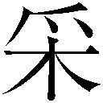

| とある飛空士への誓約 04 | |
| 犬村小六 | |
| 小学館 (2013) | |
小学館ｅＢｏｏｋｓ
とある飛空士への誓約４
犬村小六
イラスト 森沢晴行
主な登場人物
［坂上清顕（さかがみ・きよあき）］
セントヴォルト海空軍少尉候補生。
「ヴォルテック航空隊」所属。
［イリア・クライシュミット］
セントヴォルト海空軍少尉候補生。
「ヴォルテック航空隊」所属。
［ライナ・ベック］
セントヴォルト海空軍少尉候補生。
「ヴォルテック航空隊」所属。
［紫かぐら（むらさき・かぐら）］
セントヴォルト海空軍少尉。
「ヴォルテック航空隊」所属。
［バルタザール・グリム］
セントヴォルト海空軍作戦本部。
多島海方面部局少尉。
［セシル・ハウアー］
セルファウスト士官学校四回生。
［ミオ・セイラ］
「エリアドールの七人」の一人。
［レオ・ローゼンミュラー］
ヴォルテック航空隊飛行隊長。大尉。
［坂上正治（さかがみ・まさはる）］
飛曹長。坂上清顕の父。
秋津連邦のかつての撃墜王。
［カルステン・クライシュミット］
大尉。イリアの父。
坂上正治との一騎打ちで右腕を失う。
［アクメド］
空中傭兵部隊「ワルキューレ」を率いる聖騎士。
［カーナシオン］
ウラノスの超エース級飛空士。ノーズアートは黒豹。
［ゼノン・カヴァディス］
ウラノス情報部参謀将校。
「あなたがいなくなることはぼくにとって幸運なのは間違いない。けれど」
ジーモン・ベルナーは、去りゆく背中へそう告げて、次の言葉を少しためらった。これが血を分けた家族に言うべき言葉だろうか。この世に生まれ落ちてからの十二年間、ベルナー財閥の総本山たるこのいびつな大邸宅で共に育った兄と、もしかしたら今生の別れかもしれないというのに。
兄は顔だけでジーモンを振り向いた。肩には庶民と同じナップザックがひとつ。粗末なハンチングに裾の締まった狩猟用スーツ。ベルナー財閥の跡取り息子にはとても見えない、庶民の出で立ち。
しかし質素な身なりとは裏腹に、その触れれば切れそうな顔立ちには高貴さが隠しきれない。誇り高さと我の強さ、あらゆる事物を斜め上方から見下ろす目つきに りが宿り、口の端が切れ上がった。イヤミが来る、と直感した次の瞬間予想どおりのものが降ってきた。
りが宿り、口の端が切れ上がった。イヤミが来る、と直感した次の瞬間予想どおりのものが降ってきた。
「こんなあばら屋は、おまえのような凡人にこそふさわしい」
およそ十四歳の少年の口から出てくる言葉ではない。しかし言うのだ、この兄は、実の弟へ、こんな台詞を、こんなときに。
ジーモンはこの屋敷へ集う大人の仕草を真似て肩をすくめた。
「なにが気に入らないのかわからない。黙って父上のやり方に従っていれば、一生遊んで暮らせるのに」
ふん、と兄の鼻が鳴る。その鼻息が「そういう考えが凡人なのだ」という言葉へジーモンの胸の内で変換される。生まれ落ちて以来、事あるごとにこの兄からこういう台詞を投げつけられてきたから、もう悔しささえ芽生えない。
「あてはある？」
「ないのに家出すると思うか？ 準備は万端に整えた。父の能力では、今後のおれの痕跡は追えん」
この自信はどこから出てくるんだ。まだ十四歳のくせにこの世界のなにもかもをわかったような顔をしている。いくら優秀でも、こんな性格だから父親や祖父から疎まれるのだ。
「ぼくには兄さんのすべてが理解できない。なにが不満なのか、なにがしたいのか......兄弟なのに、まったく価値観を共有できない。......でも幸運を祈っているよ。あなたが嫌いなわけじゃないから。弟なのに愚痴の相手にもなれなかったことは残念だけど」
兄は薄く笑った。それから、顔だけでなく身体全体でジーモンへむきなおる。
「ひとつだけ、おまえに頼み事をしていいか」
「う、うん」
兄からなにか頼まれるのは、これがはじめてだった。いつもいつもひとりであらゆる問題を抱え込み、そのすべてを解決してきた兄だった。兄の役に立ちたくて、思わずジーモンは前のめりになる。
頼み事は、規格外のものだった。
「十年以内にジェット戦闘機を作れ」
ジーモンにできる反応は、目をぱちくりしながら兄の顔を凝視するだけだった。
「これからは空を支配したものが戦争に勝利する。十年後、空を支配するのはジェット機だ。そのころ、軍事力は民間に外注する時代となっているだろう。だからおまえがベルナー財閥の先頭で旗を振ってジェット機を作れ。できあがったらおれがまとめて買ってやる。わかったか」
「........................」
「祖父にも父にもこの依頼をしたのだが、頭蓋の内側におがくずが詰まっているようでな。おれの話が理解できないらしい。バカはバカでもおまえはまだおれの話を聞こうとするぶん、身の丈をわかっている」
十四歳の少年から「十年以内にジェット戦闘機を作れ」と頼まれて、はいわかりました、とその場で受諾できるほど自分は浮き世離れしていない。ジーモンにできたことは一分間の沈黙を経たのちに、ようやく乾いた返事をこぼすことだけだった。
「よく......わからないけど。十年以内に、ジェット機を作るんだね。うん......。よくわからないけど......覚えておくよ」
「違う。必ず作ると約束をしろ」
いつになく強い調子で、兄は誓約を迫ってくる。
「おまえにとっても追い風になる。他人からいくら笑われようが、必ずジェット機を作れ」
彫りつけたもののような笑は消えて、珍しく兄の瞳に真摯なものが宿っていた。それはジーモンにとってはじめて見る目の色で、兄弟としてはじめて存在を認知された気がした。
「......わかった。うん、わかった。兄さんの頼みだからね。努力するよ。十年以内にジェット機を作る」
「約束を違えたなら、おれはおまえを殺すぞ」
「........................」
「なんだその顔は。なにが不満だ」
「......約束を守ったら、その見返りは？」
「おれがベルナー一族を破滅に追いやったのち、おまえだけは許してやる」
「..........................................」
「妙な顔が際限なく妙になっていくな」
「............ねえどうして？ 兄さんはいったい、なにがしたいの？ せっかくの身分を捨ててまでやりたいことってなに？」
真摯だった兄の顔が、またたくまに悪魔じみた笑へ変じた。いつもの見慣れた、父母も祖父母も親戚一同も、みなが毛嫌いするこの笑顔。
切れ上がった口の端から、バルタザール・ベルナーの抑えきれない野望が爆ぜる。
「国盗りだ」
このひと、バカだ。
ジーモンの内心の声が届くはずもなく、バルタザールは虚空へその笑みをむけて、見果てぬ夢へ思いを馳せる。
「おれは、おれの国を手に入れる。そのためには、いつまでもこんなウサギ小屋で満足しているわけにはいかない。おれはもっとさまざまな人間に出会い、広い世界を知らなければならない。やがてこの世界をおれの望むすがたに変えるために」
「............」
返す言葉がジーモンにはない。いま目の前にいる人間が、兄ではなく異世界人に見える。本当にこの男が自分と同じ家庭環境で育った人間なのか、血のつながりがあるのか、根本のところを疑いたくなる。
「では行ってくる。おまえも凡人なりに達者でな」
別れの言葉にもイヤミを混ぜ込み、バルタザールは春風のようにいきなり部屋から出ていった。
扉が閉まり、ぽつん、とだだっ広い部屋にジーモンは取り残された。装飾窓の外はもう真っ暗だった。こんな夜更けにひとりで家を出てどこに行こうというのだろう。普通であれば、一日か二日で泣きべそをかいて家に戻ってくるのがおちだ。
普通であれば。
「兄さん、普通じゃないから」
あの兄はきっと、もうこの家には戻ってこない。その確信がジーモンにはあった。唯我独尊という言葉はきっとバルタザールのためにある。ベルナー財閥の権威に後ろ足で砂を浴びせるあの男が、目的に片足もかけないまま逃げ帰ってくるわけがない。戻ってくるとしたら、誓いどおり「国盗り」を成し遂げてからではないか。
『十年以内にジェット戦闘機を作れ』
課された命令が、ジーモンの肩にのしかかった。
普通であれば冗談として受け流せるが、しかしあの兄が冗談など言うはずがない。十年以内にジェット機を作っていなければ、本当に殺されるのではないか。
ジーモンは夜のガラス窓に映り込んだ自分の表情を眺めた。明らかに怯えていた。いかにも自信なさそうな自分の顔へ、兄の傲慢きわまりない笑みが覆いかぶさる。
「兄さんが国を盗り、ぼくがジェット戦闘機を作る......」
大きすぎる野望に否応なく巻き込まれていく。叶うはずもない夢なのに、バルタザールが口にするだけで、なにかしらの熱が意識の奥に沸き立ってくる。
──もしかしたら、できるんじゃないか。
我が身を内側から くその熱は、不思議なほどに心地よい。この熱に導かれる先が天国なのか地獄なのかわからないが、行き先など関係なく、ただこの夢の炎にくるまれて人生を送るのも悪くはない。そんなふうに思える。
くその熱は、不思議なほどに心地よい。この熱に導かれる先が天国なのか地獄なのかわからないが、行き先など関係なく、ただこの夢の炎にくるまれて人生を送るのも悪くはない。そんなふうに思える。
「......この世界を、ぼくの望むすがたに変える......」
取り憑かれたように、弟はその言葉を口のなかで繰り返した。
一．
この色彩はすぐに失われるだろう。そして二度と戻らない。いまこの一瞬にのみ東の空域を統べる黎明の色だ。
水平線上にたなびく薄い雲たちの谷間が炉口さながらに爛れ、あふれた真新しい赤が海原へ滴り、波の綾目へ音もなくにじんでいく。やがて赤を吐き尽くした炉口から黄金があふれ出て、切り分けられた光の矢束が天空を翔る。
朝が夜を追い立てていくその境界あたりに、青灰色の翼たちが遊泳していた。
渡り鳥さながら雁行陣を組み、黎明をゆったりと斜めに降下していく。鋼鉄の翼たちの行く先に、大きな火山島がぎざぎざの輪郭で銀の海面をくりぬいていた。
水平線から切り離された太陽が真鍮色の光で世界を満たしたころ、翼たちはマウレガン島チャンドラー要塞第一飛行場へと帰り着いた。日課の定時 戒任務を無事に切り上げた飛空士たちが次々にレッドゴート爆撃機の搭乗席から地上へと降り立つ。
戒任務を無事に切り上げた飛空士たちが次々にレッドゴート爆撃機の搭乗席から地上へと降り立つ。
最後のレッドゴートの風防がひらき、若者がひとり、飛行帽を脱いだ。まだ幼さの残る顔立ちに、まっさらな五月の朝日が降り注ぐ。
セントヴォルト海空軍少尉候補生、坂上清顕は走り寄ってきた機付整備員たちに異状なしを伝えると、翼の付け根から飛び降りて地に降り立ち、歩いて航空指揮所へとむかう。
基地司令官への戒報告を終えて指揮所を出ると、もうひとつ別の任務が待っていた。
「止まれ。ここで撮るぞ」
同行していた広報部の武官が注文を出し、清顕は歩を止める。もうため息も出ない。
「目線はあっち、朝日へむけろ」
言われたとおりの方向を、人形のごとく見やる。その傍ら、同じく少尉候補生、イリア・クライシュミットもまた「さっさと終われ」といわんばかりの無表情をカメラへむける。
「あっちだ、坂上と目線をそろえろ」
武官のほうが階級が上だ。イリアはしかたなく命令どおりの方向に目線をむけて、執拗なほどに写真を撮られ、さらに兵舎の前でも何度もポーズを変えて撮影されてから、ようやくすべての早朝任務を終えた。
すっかり高くなった日差しを浴びて、イリアは去っていく広報部武官たちの背中を眺めながら、語気を荒らげる。
「バカバカしい。動物園の獣でもあるまいに。いつまでこんなことをやらされるんだ」
「あと一年はやるみたいだね。でもまあ、おかげでぼくらも、候補生の分際で飛空機に乗れるわけだし。我慢しないと」
清顕はなだめるが、イリアの怒りは収まらない。一方的に押しつけられる広報任務に加え、まるでモノを扱うような武官の態度も気に入らない。少尉候補生として戦場へ赴任してもなお「エリアドールの六人」である清顕とイリアは模範的な「偶像」としての振る舞いをこれまでにも増して求められている。
とても息苦しい。本来の人格を斬り捨てられて、軍が求める人材の模範としてセントヴォルト中へ広報されてしまうことが不愉快でもある。
しかし、いまイリアへ言ったように、そのおかげで少尉候補生でありながら最前線の基地へ赴任でき、しかもセントヴォルト海空軍最強の戦闘機部隊「ヴォルテック航空隊」へ配属されたのだ。些事は我慢して、与えられたチャンスを生かすべきだと自分を戒める。
「贅沢な環境だよ。ほんとなら演習航海の雑用とかで一年潰すはずだったんだから。見せ物にされるのはイヤだけど、その代わりに実戦にも出られるし」
「......うん。つまらないことに腹を立てるのはやめたい。やめたいが......なかなかできない。......ダメだな、こんなことでは、うん......」
イリアは自分に言い聞かせるようにそう呟く。写真撮影では笑顔を要求されることもあり、イリアはそのたびに、いかにもイヤそうに引き結んだ口をぎこちなく横へ引っ張る。端で見ていてかわいそうなほど、イリアなりに軍の要求に応えようとはしているのだ。
清顕は笑顔を浮かべた。肩の凝る日々がつづいているし、気晴らしは必要だ。
「明日の予定は？」
「明日？ あぁ、休養日か。素振りでもしようかな」
「剣術修行もいいけど、たまには出かけない？ ライナとかぐらさんと、山に行こうって話があるんだけど。なんか秘密の温泉があるらしくて」
誘うと、イリアは少し考える。
「温泉か。入ったことがない」
「かぐらさんお薦めなんだ。すっごい気持ちいいんだって」
「うん。わかった、行こう」
「じゃあ、明日、朝七時でいいかな」
「ああ。前みたいに寝坊するなよ」
「ごめん、もうしないから。うん、それじゃ明日」
手を振ると、イリアも軽く手を振ってから女性士官兵舎へ去っていった。清顕はひとつ伸びをして、午後からの戒任務に備えるために男性士官兵舎へと爪先をむける。
ひとりになった。
はあ、となんとなく息を抜いて、青空を見上げる。
最前線とは思えないほど穏やかな、マウレガン島の春だった。
彼方、青空の裾を峰の連なりがなだらかに切り取っている。第一飛行場の周辺は見晴らしのいい赤土の更地で、焦げ茶色の大地と緑の山々、それに青空のコントラストが目にも眩しい。
点在する森には濃厚な緑が満ちあふれて、少し足を踏み入れたなら湿った土と葉っぱの匂いが充ち満ち、面白いすがたの獣たちが枝を伝い、下生えを大きなトカゲやヤモリが駆け抜け、頭上を色鮮やかな鳥たちが飛び越えていく。
その鳥たちのさらに上方を、不吉なプロペラ音を轟かせ、大型爆撃機編隊が翼をそろえて飛んでいく。風のなかには常に甘いオイルと、いがいがした重油の香りが紛れ込んでいる。手つかずの自然が残る島を、人間たちの破壊的な営みが食い荒らしていた。
──ここに来て、もう一か月か......。
戦場話などでよく聞く「最初の一か月を生き残ればベテランだ」などという話は、ここチャンドラー要塞ではあまり言われない。大瀑布を挟んで対峙する敵ハイデラバード軍拠点シエラグリードとの距離がひらいているため、最前線ではあるがそれほど空戦機会は多くないためだ。大規模な空戦が起こるとすれば、敵機動艦隊が大瀑布を越えてチャンドラー要塞を空襲したときであろうが、いまのところそんな兆候もない。だから、割合にのんびりとした空気が島全体を包んでいる。
しかし。
──いつここがメスス島やエアハント島みたいになるか、誰にもわからない。
清顕の視界のうちに、忘れえぬ破壊の情景が覆いかぶさった。
台風のなかに隠れたふたつのウラノス飛空要塞「バルセノス」と「カルキノス」。ひとつひとつがエアハント島ほどの大きさを持つ「空飛ぶ島」から、蚊柱のごとく飛び立つ三式イドラの群れ。
なすすべなく破壊されていく母校と、通い慣れた街並み。
故郷メスス島と、第二の故郷エアハント島。愛おしいふたつの故郷を二度までもウラノスに眼前で破壊されてしまった。
「もう油断しないぞ。絶対に」
独り言にも自然な気迫がこもる。長い研鑽の時を経てようやく、本物の戦闘機に乗り実戦に出ることを許された。飛び立つすべすら持っていなかったメスス島急襲と、まだ学生だったエアハント島奇襲のころとは条件が格段に違う。
──一日も早く、決戦の舞台に臨みたい。
──この手で戦局を変えられる舞台に。
こみあげてくる熱い気持ちを足取りに移して、清顕は兵舎に戻った。
†††
「ま、さすがにガキじゃねーから、覗こうぜー、とは言わねーけどさ」
白濁した湯につかり、岩垣に背を預けて、ライナ・ベックは青空を見上げる。
「しかしなんつーか、そこの藪越えて徒歩三十歩圏内に美女ふたりが素っ裸で温泉入ってるっつーのは、たまんねーな」
同意を促してくるが、清顕は首を左右に振る。
「下品だよ。かぐらさんとイリアに失礼」
「優等生だねー。殺伐とした軍隊生活送っててもやさぐれないその性格。すげーわ。うらやましくねーけど尊敬する」
「ぼくら士官だし。ちゃんとしてないと。あと一年もしたら部下の命を預かることになるんだから」
「温泉つかってるときまで堅苦しいこって。休養日なんだからそーゆーこと忘れろよ。つか、かぐらさんとイリア、どっちが乳でかいんだろ。イリアだろーな、やっぱ。本人隠そうとしてるけど巨乳バレバレだし。ちくしょー、この目で確認してー」
「あのね、大声でそういうこと言うのやめて。聞こえるから。ぼくまで同類だと思われるのほんと勘弁」
諫めるが、ライナの下世話な台詞は止まらない。清顕とて健康的な男子であるため、執拗に下劣な台詞を繰り返されると、ついつい脳裏に素のままのかぐらとイリアのすがたが浮かんできて、不覚にも健康的な反応が起きてしまいそうになったりもするが、湯が白濁していることに内心感謝しつつ、おじいちゃんの入れ歯を掃除させられているところを想像して元気を萎えさせ、かろうじて現象を隠 する。
する。
「バカなこと言ってないで、お湯を楽しもうよ。すんごいいいお湯だよ、これ。適温で沸いてるし、秋津連邦ならここに旅館建つね」
言葉どおり、泉質はとても上質だ。お湯はぬめぬめと肌にまとわりついて、鼻孔に卵が詰まったみたいに硫黄の匂いが強い。秋津連邦であればとっくに観光地になっているであろう源泉かけ流しだが、ここマウレガン島では立ち寄るものも少ない山間の秘湯である。
立ちのぼる湯気が、眩い青空へ吸い込まれていく。深山の鳥の呼び交わす声が聞こえる。五月の山の緑は若々しくて、まるで清潔な水槽の底から世界を眺めているかのよう。
笹藪と岩垣を隔てたむこうから、かぐらとイリアのかすかな話し声が鳥の音に紛れ込む。話の内容はわからないが、あちらもリラックスしている様子。ライナが片目を藪のむこうへ送りぼやく。
「楽しそうだなー。やっぱ覗いてこよーかな」
「子どもじゃないんだから......」
たしなめて、清顕は極力妙なことを想像しないように自然の風景に目を送りつつ、たっぷりとした湯に身体を委ねた。
身体の力を抜いて、背後の岩垣に両手を添え、紫かぐらはまっすぐに青空を見上げてお湯に浮かんだ。
「気持ちいいなあ。まさか最前線で温泉に入れるとはね」
微笑みながら傍らへ目を送る。
「温泉というものに、はじめて入りました」
長い髪を後ろでひとつに束ねたイリアは白濁した湯のなか、胸を隠すように自分の膝を抱きかかえ、体育座りの姿勢を崩さない。
「手足をお湯に委ねてリラックスするといいよ。ほら、こんな感じに」
木の葉みたいに上手に湯のおもてをたゆたうかぐらの四肢へ、樹木の枝葉が濾した日の光が降り注ぐ。霧がかった碧色の光線にさらされるかぐらの裸身は、まるで森に住まう妖精のようにおぼろな白をまとっていた。
イリアはちらりとかぐらへ目を送り、真似をしてみようと同じ姿勢をとってみる。
岩垣に後頭部を委ね、目を閉じ、身体の力を抜いて、長い足を前へ投げ出す。浮力の作用がかかって、イリアの裸身も湯のおもてへ浮かんだ。
──ああ......。
思わず、内心にため息をつくほど気持ちがよかった。日ごろの軍務に摩耗されていた心身へ、お湯の滋味と柔らかさが染みわたっていく。深山の静けさと大気の清涼さ、遠くでさえずる名も知れぬ鳥の音もあいまって、眠気さえ瞼の裏にくすぶってしまう。
うとうとしかけて、ふと、湯のなかにわずかな対流を感じた。うっすら瞼をひらくと、かぐらが半身を起こし、湯に浮かんだイリアの露わな肢体を覗き込んでいる。
「やっ......！」
思わず胸を両手で隠して、慌ててイリアも半身を起こした。かぐらは真面目な表情で頷きながら、
「完璧なスタイルだね。思わず観賞してしまったよ」
「な、なんですか、かぐらさん、いきなり」
「同性の身体に憧憬を覚えたのは、これがはじめてだ。もっとよく見せてくれないか」
「顔を近づけないでください。なにか気恥ずかしいです」
「恥じる必要はない。せっかくの機会だしお互いをもっとよく知り合おうじゃないか」
「え、あ......！ かぐらさん、冗談が過ぎます！」
「よいではないか、よいではないか」
「よ、よくありません、あ、うわっ、やっ、やっ、やめてください......っ!!」
イリアはおのれの身体を抱きかかえ、ずざざざと湯を蹴立ててかぐらから逃げる。かぐらは満足げな吐息を湯の花にこぼすと、岩垣に背中と両手を預けてふんぞりかえる。
「完璧な調和がきみの肉体に具現している。神の造形を堪能させてもらった」
「不快です、もう二度とやめてください......!!」
「つい興奮してしまった。反省しているからこっちをむいてくれないか」
「拒否します、かぐらさん、様子が変です」
「冗談だよ、冗談。もう襲わないから機嫌を直してくれ」
イリアはかぐらに背をむけたまま、警戒の目だけを背後に送る。かぐらは怯える小動物をなだめるように詫びと懐柔の言葉を繰り返し、しばし間を置いて、なにげなくイリアが食いつきそうな話題を提供する。
「そうそう、セシルから二通目の手紙が来ていたよ。新しい学校で友人もできたみたいだけれど、やはり寂しいようだね」
まだ上目に警戒の名残をとどめて、イリアは返事する。
「わたしのところにも先日、三通目の手紙が届きました。早く卒業したいと嘆いていました」
「清顕くんとライナにも出しているらしい。卒業後、一緒になれるといいけれど」
「広報部もわたしたち七人......六人をひとまとめにしたいはずですし。可能性がなくはないと思います」
ひとり少なくなった「エリアドールの六人」は、いまだに若年層からの支持を得ている。ミオという裏切り者が出たものの、そのぶん、残りの六人の悲劇性が高まって、ドラマとして広報しやすくなり、以前よりもかえって耳目を惹く存在になった感もある。志願兵を増やしたい海空軍としては、まだまだ「六人」に役に立ってもらいたいようだ。
そしてセシルはいま、セントヴォルト首都、セルファウスト士官学校に通っている。今年度で四回生になった。昨年九月のエアハント島壊滅により、エアハント士官学校の校舎が多数崩落してしまったため、一部の生徒たちは転校を余儀なくされたのだ。学生だったイリア、清顕、ライナ、セシルの四人はともにセルファウスト士官学校へ編入して、新たな環境で勉学に励むことになった。
イリア、清顕、ライナの三名が卒業して、かぐらと同じヴォルテック航空隊へ配属となり、一年後輩のセシルはひとり、学校に取り残されてしまったかたちだ。
「来年、また会えるよ。そのとき、まだこの島にいるかどうかはわからないけれど。生き残っていれば、また会えるさ」
「......はい。そう信じます。生き延びて、また会います......」
イリアとセシルは実の姉妹のように仲がよい。引き裂かれている状態は、お互いにとってつらいだろう。現在、戦況は小康状態にあるが、また大きな作戦計画が動き出せば命の保証はない。明日自分が無事に過ごせているのかわからないいま、イリアの言葉には、セシルのためにも生き延びようという強い決意がにじんでいた。かぐらはふたりの気持ちを思いやりながら、また話を変える。
「そうそう、前の休養日、バルタに会ってきたよ。一緒にごはんを食べてきた」
イリアはわずかに驚いた表情を持ち上げる。
「会ったのですか？ よく連絡がとれましたね」
バルタザールが勤務する海空軍作戦本部多島海方面部局は、ヴォルテック航空隊と同じマウレガン島に所在しているから会おうと思えば会える距離ではある。しかし仲間意識も希薄で、実利のない付き合いは露骨に煙たがるバルタザールはそうそう用もないのに会ってくれるような人間ではない......はずなのだが。
「職場に押しかけてバルタの住所を聞いたんだよ。ほら、わたしもバルタも『六人』のメンバーだから、作戦本部のひとも融通してくれて。海辺に作戦本部専用の独身寮があってね、そこに住んでいた。優雅な建物だったよ。休日にいきなり訪ねてドアをノックしたら無防備に出てきたんたが、面白かったね。わたしを見て盛大にずっこけるバルタをきみにも見せてあげたかった」
からからと笑うかぐらを、イリアは羨望の眼差しで見つめる。
「行動力、すごいですね......。いやがられませんでしたか？」
「表情はずっと不機嫌そうだったけれど、食事に誘うとついてきたから、実際はそんなにいやでもなかったのかも。彼のことだからどうせ職場でも浮いているだろうし、対等な立場の話相手は欲しかったはずだよ。近くの食堂でランチを食べて、それから海辺を散歩したんだ。なかなか楽しかった」
「かぐらさんとバルタさんが、ふたりでですか？」
「ああ。仕事のことやこれからのことを話した。下っ端とはいえ作戦本部の人間だから、航空隊の上官とはまた違った視点を持っていて面白かった。少し詳しく話そうか？ イリアにも役立つ内容だと思うよ」
「はい。興味あります。ぜひ」
かぐらは湯から上がり、岩垣へ腰を下ろした。木々の隙間から差し込んでくる清潔な光が、かぐらの剝き出しの上半身を淡く浮き立たせる。
「食堂を出て散歩に誘うと、バルタは仏頂面をしたけれど、結局ついてきたよ。ヴォルテック航空隊の内情を聞きたい、とかなんとか言い訳していたが、そのわりにはそれ以外の話も尽きなかった。前置きがいちいち『勘違いするな』なのはもう、彼の枕詞だからしかたないけれど、そのたびにわたしは笑いをこらえるのが大変で......」
†††
「勘違いするな。おまえたちがどうなろうと知ったことではない。だがおれの職種上、おまえたちの知りえない情報に触れる機会もある。部外秘というほど大それたものではないし、それを話しても漏洩には当たらないということだ」
砂浜に足を止めて、バルタザールはひと息にそうまくしたてるとなぜかかぐらを睨みつけてくる。かぐらも歩を止め、笑顔で頷きを返す。
「うんうん、わかっているよ。せっかくの機会だし、お互い、有意義な情報交換をしたいものだね。それでその、決戦の予兆とは？」
問うと、バルタザールは大仰に胸の前で腕を組み、空を仰いだ。
燦々とした五月の日差しが砂浜を白くいていた。ふたりのほかにひとはおらず、ただ空の低いところで鳴き交わすカモメと、白波が砂を嚙む音だけが寄せ返すのみ。もったいぶった黙考を経て、真っ青な海と空を背景に、バルタザールの目線がかぐらへ戻る。
「クロスノダール攻防戦は、こちらの勝ちだ。ハイデラバード地上軍は撤退をはじめている。北多島海へ降り立とうとしたウラノスの目論見は崩れた。エアハント島の新規艦隊を全滅させ、その勢いでクロスノダールを占領しようとしたものの、肝心のハイデラバード地上軍が弱くてな。いくらウラノスが空中で勝とうが、雇い主のハイデラバード陸軍が脆弱では、大規模島嶼攻略は難しい」
かぐらは頷きを返した。クロスノダール島からのウラノス撤退は、まだ報道されていない最新の内容だ。
「クロスノダールくらい大きな島だと、艦砲射撃が島の中央まで届かないからね。森と山岳で粘れば、海と空の戦いに負けてもまだ戦いを続行できる」
「そのとおり。持久戦になれば、本国に近く、水平な海原がつづくクロスノダールへこちらは迅速かつ継続的に援軍を送り込める。それに対し、本国から遠く、しかも大瀑布で隔てられるウラノス＝ハイデラバード連合軍は延びきった輸送線を維持する必要が出てくる。時が経つほど戦況がこちらに傾くのは自明だ」
「では、北多島海はしばらく安泰ということかな」
「北海を守るだけでは勝てない。こちらから大瀑布を越えて南多島海へ降りたち、サントス島シエラグリードを攻略する必要がある。その障害となっているのがウラノスの飛空要塞だ。あれがあるせいで南海へ手出しできない」
「飛空要塞の脅威は、昨年のエアハント島で思い知らされたよ。いくら攻撃を受けても沈むことのない艦隊と同じだ。あれを攻略しろと言われると、かなり難しいだろうね......」
ウラノスが保有する十二の飛空要塞のうち、多島海方面へ派遣されているのは、エアハント島を壊滅させた「バルセノス」「カルキノス」をはじめとする四つ。あの「空飛ぶ島」に対抗する手段がないため、セントヴォルトは何度も煮え湯を飲まされてきた。
「飛空要塞を攻略するための研究は進んでいる。飛行場と対空施設を無力化したうえで上陸するわけだが、海上島嶼への強襲上陸と異なるのは上陸用舟艇が使えない点だ。ホバリング能力を持つ大型飛空艇に空艇隊員を積み込み降下させるしかないが、飛空要塞の広大な地表面を制圧するには相当数の飛空艇と空艇隊員が必要となる。いまはそのための準備を進めている段階だ」
「護衛艦に守られた上陸用舟艇が白波を蹴立て一斉に上陸することが不可能というわけか。さぞかし壮絶な戦闘になるだろうね」
「先兵の拠点確保が至難だ。周囲を敵に囲まれた状況で迅速に陣地設営を行い、橋頭堡を確立せねばならない。ここをクリアするには、制空戦闘機隊──貴様のいるヴォルテック航空隊の役割が非常に重要だ」
「うん。敵飛空要塞周辺の制空を企図した演習は、何度か行われているよ。通常の島嶼要塞攻略と違うのは、目標が常に移動している点と、島の下方にも気をつけねばならない点かな」
「飛空要塞を攻略した前例が存在しないからな。なにもかも手探りであるのは確かだ。しかしあれを無力化しない限り、ハイデラバード戦役の勝利はない」
かぐらの胸の底が重くなる。ウラノスを空の支配者たらしめているのが、無敵を誇る十二の飛空要塞だ。バルタザールの言うとおり、多島海方面に浮かぶ四つの飛空要塞を攻略しない限り、多島海の戦乱が収まる日は来ないだろう。
しかしエアハント島と同じくらいの規模を持つ「空飛ぶ島」の地表面に降り立ち、すべての軍事施設を制圧するとなれば、陸兵だけでも二万～三万人程度の動員が必要になる。そんな大軍を空中から飛空要塞の地表面へ降ろすだけでも大変だし、その際は通常の上陸作戦以上の犠牲が出るだろう。
「とにかく、こちらもいつまでも守ってはいない。エアハント壊滅のために大幅に時期が遅れたが、そろそろ大規模な侵攻作戦がはじまるはずだ。せいぜいぬかるなよ」
「うん。ありがとう。貴重な話を聞けたよ。ところでバルタ、いきなり話は変わるけれど」
「？」
「職場ではうまくやっているのかな？ きみのことだから、さぞかしまわりから浮いているのではないかと心配している」
バルタザールは一瞬、口をへの字に曲げてから、かぐらの微笑みを睨みつけた。
「そんなことを貴様に心配される筋合いはない」
「うんうん。そうだけども。若輩が大きな手柄を立てたせいで、やっかみなどもあるだろうと思って」
「くだらん。やらせておけばいい」
バルタザールは鼻を鳴らしてかぐらの心配を一蹴し、顔を背ける。
作戦の夏、オペレーション・ジュデッカの予兆をバルタザールが唯一、事前に見破って報告書をあげていた。並みいる作戦本部のエリートたちが誰も予測できなかった奇襲作戦を一介の研修生が一晩で看破したことは、そののちの報道にも大きく取り上げられ、「エリアドールの六人」の筆頭格としてただでさえ高評価を受けていたバルタザールはさらにもてはやされる存在となってしまった。新聞雑誌には「未来のセントヴォルト軍参謀総長」などと書きたてられ、そのせいで作戦本部の局員たちがバルタザールを妬み、集団でいやがらせを行っている......などと風の がかぐらの耳にも入っていた。
がかぐらの耳にも入っていた。
「やはりあるのかな？ 男の嫉妬というやつが」
「おれの神経にはさわらん。卑賤の輩がやることだ、哀れみはおぼえるがな」
声音から、バルタザールが強がっていることがかぐらにはわかった。少尉になりたてのバルタザールにとって、階級が上の先輩たちから妬まれていやがらせを受けることが平気なはずはない。
「きみは強いね」
かぐらは表情を真面目なものに戻して、バルタザールの横顔へそう言った。
「強いも弱いもあるか。目に入らないのだからな」
「......うん。......そうだね。きみらしいね」
「なんだ貴様。なにを笑っている。気色の悪い」
しかめっ面を保ったまま、バルタザールは横目で、かぐらの微笑みを見やった。
つっ、と一歩、かぐらはバルタザールに近づいた。頭を前へ倒せば、バルタザールの胸におでこが当たる距離だ。間近から仏頂面を見上げて、また真面目な顔になる。
「たまには誰かに甘えるのもいいかもしれない」
「な、なにを言っている」
「きみは自分で思っているほど冷酷な人間ではないよ」
「おい、なにを食った。酒でも飲んだのか。海に飛び込み頭を冷ませ」
バルタザールは珍しく戸惑い、かぐらから逃げるようにぷいとそっぽをむくと、海へとむきなおった。
寄せてくる波がふたりの足下を洗っていた。水平線を目指して、白い鳥が二羽、翼を寄せ合うようにして飛び去っていく。
バルタザールの背中へ、かぐらは悪戯っぽく言葉を投げた。
「きみは面白いね」
バルタザールは顔だけでわずかに振り返り、まなじりをきつくする。
「褒めたいのかバカにしたいのか、どっちだ」
「さあ。わたしにもよくわからない。なにがしたいんだろうな、わたしは」
微笑んで、肩をすくめ、かぐらは腰の後ろに両手を回して、きびすを返した。
「さて、そろそろ戻ることにするよ。今日は有意義な話をありがとう」
バルタザールはまた鼻を鳴らして、ポケットに両手を突っ込み、陸へと目を戻す。
「いきなり他人の家を訪問するのは二度とやめろ」
「うん。悪かったね。次からは連絡を入れてから訪問することにする」
「......また来る気か」
かぐらは小首を傾け、お願いしてみる。
「ダメかな？」
「......ヒマ人が。理解に苦しむ。勝手にしろ」
吐き捨てて、バルタザールはかぐらから目を背け、ひとりでさっさと自宅へむかい歩んでいく。少しはにかんでから、かぐらは小走りにバルタザールの背中を追いかけた。
†††
「......というわけで、とても楽しかったよ。バルタも十分、楽しんでいたと思う」
話を終えて、かぐらは再びお湯へと肩までつかった。
やや湯にのぼせてしまい、イリアは立ち上がるとタオルで身体の前面を隠して、岩垣へと腰を下ろした。
「......おふたりがそれほど仲がよかったとは......知りませんでした」
「特によくもないが。まあ同期だし、同じ島にいるのに知らん顔しているのもなんだし、彼をからかうのは面白いし」
「そう......なのですか。バルタさん、てっきり作戦本部で重宝がられているものと。ジュデッカ作戦を事前に見破った唯一の人材なわけですから」
「優秀すぎるし、愛想もないからね。まわりの先達からすれば疎ましいはずだよ。元々、どこか陰のある人間だったが、この一年でますます陰が濃くなった」
そう言って、またかぐらはからからと笑う。
「きっとバルタさんもうれしかったのでしょう。食事だけでなく散歩にまで付き合うなどと、学生のころなら絶対にしなかったですし」
「そうだね。今度はイリアも一緒に行こうよ。いやそうな表情をするだろうが、内心はきっと喜んでいるはずだから」
「......はい。先方がわたしの同行を了承してくだされば、ですが。......今後の作戦計画について、知っておいて損はないですし......」
イリアは頷いて、木立のむこうを見やった。
──バルタさんの話をするとき、かぐらさんは本当に楽しそうだ。
そんなことを思う。いつも楽しそうに生きているかぐらだが、バルタザールをからかっているときは最高に輝いて見える。きっと性格の根っこのところで気が合うのだろう。
「長話になってしまった。そろそろ出ようか。のぼせてしまうといけない」
「そうですね。リラックスできました」
ふたりは湯を出て、タオルで身体を拭き、私服へ袖を通した。かぐらが草藪のむこうへ声を張り上げる。
「もう出るよー」
「あ、はーい。おれらもう出ましたんでー」
ライナの返事が届く。
「覗きに来なかったねー？」
「行こうと思いましたけど、かぐらさん剣持ってるからやめましたー」
「残念だったねー。わたしはイリアの全身を見たよー」
「おれも清顕の全身見ましたー」
互いのすがたも見えないまま、藪越しに大声でどうでもいいことを言い合うかぐらとライナを、イリアは呆れながら傍観した。
それから清顕とライナに合流して、四人でバイクに分乗し、山道を走り抜けて海辺のレストランへ着いた。マウレガン島の戦争景気を反映して、ログハウス風の店内は休養日の兵隊でにぎわっていた。清顕たちが店へ入ると、自然、下士官や兵たちの目線が集まる。「エリアドールの六人」として喧伝されつづけたため、ほかの部隊の兵であってもこちらの顔も名前も知っているのだ。
すれちがうたびに声をかけられたり簡単な挨拶を受けたりする。秋津人の清顕とかぐらに対しても気さくな雰囲気で、妙な差別や偏見はない。士官服の上官は見当たらず、清顕たちも私服だから、しゃちほこばった雰囲気はなく、店内はどこまでも陽気でやかましかった。
「一番人気はイリアかな」
四人がけの席につくと、かぐらがそう言って微笑んだ。イリアは硬い表情を横に振る。
「よくわかりません」
「未来の撃墜王として期待されているんだよ。それに美人だし」
「......よくわかりません」
同じ言葉を繰り返して、イリアは居心地悪そうに目を伏せる。本人が否定しても、下士官や兵が最もうれしそうに話しかけてくるのはイリアだった。なかには手帳を取りだしてサインをせがむものもいる。
「慕われてんねー。来年、少尉になったら、ますます人気もんになっちまうな。イリアの腕なら小隊の編隊長くらいにはすぐなれるだろうし。おれもできればイリアの部下になりてー」
軽口を叩くライナを、イリアはきつく睨みつける。
「ライナも、来年は部下を率いる立場になるのだぞ。同期の部下になりたいなどと、冗談でも言うものではない」
正面切って怒られ、ライナは苦く笑う。
「人気は長続きしねーだろーな。三日も経てばそのおっかねー性格がバレて、部下から怖がられるぜ」
「構うものか。好かれるために部下を率いるのではない」
言い切って、イリアはメニューを一 し、頷いた。
し、頷いた。
「わたしはチーズバーガーを頼もう」
宣言するイリアへ、かぐらが興味深そうに問いかける。
「ライナの言うとおり、イリアと清顕くんが少尉になったら、それほど時間を置かずに三機編隊の隊長くらいは任されるだろうね。ふたりは目標にしている編隊長などはいるのかな？」
「目標......ですか？ あまり考えたことはありませんが......」
イリアは黙って考え込む。その隣で清顕も視線を斜め上に持ち上げて、
「父......といいたいところですけど、ぼくの前では絶対に戦場の話をしなかったんで......。ぼくはやっぱりアクメド師匠みたいな、単機でも編隊でも強い飛空士に憧れますね。どちらかが強いんじゃなくて、どっちも強いところがすごいです」
「うん。単機での空戦能力と列機を率いる編隊長としての能力は似て非なるものだね。空戦能力に秀でていなくても、編隊指揮官としての能力が高ければ、強い敵一機を大勢で取り囲んで撃墜できるというし」
「はい。でも編隊指揮は憧れますけど、まずは単機の空戦能力を認められないと隊長なんてさせてもらえないですし。いまは空戦技術を向上させることだけ考えてます。隊長になってからのことは、そのときでいいかな、って......」
「そうだね。少し時期尚早だけど、興味を惹かれていて。それで、イリアは？ ずいぶん考えているようだけれど」
イリアはついに腕組みまでして、真剣に考え込みはじめていた。いまかぐらに問われてはじめて『自分はどんな隊長になるのか』という命題に思い至ったのかもしれない。
かなり考えてから、イリアはぼそりと告げた。
「正直......編隊長としての自分をイメージしたことがありませんでした。これまで常に、単機での強さを求めてきたもので。自分が強ければ、編隊も自然と強くなるだろうと」
「うん。それもよく言われているね。イリアはきっとそれでいいと思うよ、うん」
「......かぐらさんは？ どんな編隊長を目指しますか？」
「わたしは......。うん。きみたちほど空戦技術に秀でているわけではないから、やはり全体の戦況を正確に見据えて、的確な指揮のできる編隊長になりたい......とは思ってはいる......」
そう語尾を濁してから、かぐらは困ったように笑んだ。
「実は不安なんだ。少尉になって一か月が経ったが、いざ実際に下士官や兵を託されて戦場に出たとき、自分が果たして編隊長として立派に部下を統率できるのか......」
かぐらにしては珍しく、弱気な言葉だった。清顕は思わず前のめりになって、
「かぐらさんなら絶対、大丈夫です！ そりゃあ、はじめはうまくいかないかもしれないですけど、経験を積めば必ず立派な隊長になれます！」
「ありがとう。うん。経験を積みたいと思っている。けれど、わたしが編隊指揮に習熟するその過程で、犠牲になってしまう部下も出てしまうかもしれない。そう考えると......部下を率いるという重みに、愕然とする」
言葉尻に力がなかった。これまで見たことのない、自分に自信を持てない様子のかぐら。本物の軍人になってからの一か月間が、いつもひょうひょうとしたかぐらにも少なからぬ影響を与えているようだ。
他人の命を預かるということ。
その重みと難しさについては、士官学校時代から言われていたことだ。大勢の部下の命を預かって、戦場という極限状況のなか、ひとりでも多くの部下を生還せしめることが士官の仕事であると、頭ではわかっているつもりだった。
しかしそれは机の上ではなく、こうして現実の戦場へ出て、本当の人間の命を背負わされてはじめて理解できる重みなのだ。いつも涼やかな風をまとっているようなかぐらが、いまはずいぶんと萎縮して見える。
個人の戦いであれば、自分のミスは自分の命で償える。しかし列機を率いる編隊空戦では、隊長のミスが隊員全員の死に直結してしまう。いまかぐらが抱いている不安は、他人事ではない。一年後は自分も同じように、部下を率いて戦う立場に立たなければならない。清顕は頰を引き締めて、言葉に力を込めた。
「かぐらさん、ここまで立派な成績でやってきましたし。ヴォルテック航空隊の人たちからも好かれてますし。堂々とやればいいです。誰も文句なんてつけないですから」
イリアもその言葉に頷いて、
「はじめから完璧だった指揮官など存在しません。歴史上の名将たちも、幾多の部下の犠牲のうえに戦功を重ねたひとびとです。士官という立場の性質上、部下を死なせてしまうことはやむをえないことかと」
「......うん。そうだね。その理屈は理解しているつもりだった。けれど、実際に兵や下士官と知り合って言葉を交わしてしまうと......恐ろしくなる。ひとりひとりの背後に、家族や友人の思いが託されていて......その重みは、教科書で予習できるものではなかった」
かぐらの瞳が翳っていた。こんなかぐらを見たことがない。清顕もイリアも、どう言葉をかければいいのかわからず、ただ心配そうな目線を互いに交わすしかない。
ウェイトレスに注文をして、ライナがへらへらしながら顔を上げる。
「そんなん考えたってしゃーないっすよ。戦争なんだからひとが死ぬの当たり前だし。指揮間違えたら、おれら士官だって普通に死ぬんすから。味方殺すのはかぐらさんじゃなくて敵っしょ。おれたちなーんも悪くねーっす」
あっけらかんとそんなことを言う。あまりにも大雑把な意見に思えて、清顕は反論を投げようとしたが、しかしいい加減そうな口ぶりとは裏腹にいまのかぐらにかける言葉としては悪くないものでもあり、反論そのものを形成することができなかった。
かぐらも、少し笑む。
「うん......。すまない、なんだか心配させてしまったね。ダメだな、わたしも。うん、わかっているよ、腹を据えるしかないことは」
「かぐらさんって実は優しいっすよねー。いっつも斬る斬る言ってるからおっかなそーなんだけど、根っこがやっぱ優しいっすよ」
「いつも斬る斬るとは言っていないが......。こういうのは優しいとは言わないさ、臆病なだけだよ。すまない、せっかくの休日に暗い話になってしまったね。楽しい話をしよう。そうそう、さっきイリアに話したんだけれど、このあいだバルタに会ってきてね......」
やや強引に話を変えて、かぐらは笑顔を取り戻した。バルタザールをからかっているときのかぐらは本当に生き生きしていると清顕は思った。そして話をしているうちに、自然と、こんな考えが芽生える。
──かぐらさんの部下になりたいな。
戦場で命を託すなら、かぐらのような上官がいい。思いやりがあって、勇気があって、最善の指揮を執ろうと全力を尽くす隊長になら、この命を委ねられる。そう思うのはきっと、自分だけではないだろう。近い将来、かぐらの部下となった全員が、同じ思いを抱くのではないだろうか。
楽しい食事を終えて、夜になり、清顕たちは兵舎へと戻った。ほかの少尉八人との相部屋だ。下士官飛空士は二十人単位のプレハブ小屋に寝起きしているので、それに比べれば静かだし落ち着ける。就寝時間は定められておらず、割合に自由に夜更かしもできる。
清顕はひとり、ベッドに寝転んで最新の航空機研究書を読んでいた。従来のレシプロエンジンをより強力にしたターボプロップエンジンを搭載した戦闘機が、セントヴォルト海空軍航空技術にて開発中だという。最高速度七百五十キロメートルを目指しているというから、実戦投入されたなら、単騎で大軍を蹴散らすいにしえの勇者のような戦闘が空で実現するのかもしれない。
──戦争は、大きな転機を迎えそうだ。
バルタザールがかぐらに言っていたという「次なる大きな作戦計画」に、清顕もイリアも奮い立った。前線に来てから一か月、大きな戦闘を経験していないため、正直、自分の力をもてあましている感覚がある。本物の戦場を翔る自分を想像して、ウラノスを打倒する決意をみなぎらせる。
目線をふと、ベッド脇のサイドテーブルへむけた。
私物をベッド脇のテーブルに並べることも士官には許可されていて、清顕は一台の写真スタンドを立てていた。
写真のなかで、「エリアドールの七人」が微笑んでいる。
かぐらとバルタザールが卒業する際に、エアハント士官学校の講堂前で撮ったものだ。
ウラノスの爆撃により瓦解してしまった大講堂が、写真のなかではあのころと変わらず整然とした赤煉瓦の側壁をとどめている。
そして──ミオも。
イリアとセシルに挟まれて、少しだけ居心地悪そうに、ぎこちない姿勢でカメラの少し上のほうへ目線を持ち上げている。
清顕の心が、血を流す。
尽きせぬ痛みが心から湧き上がり、身体のすべての細胞に満ちていく。
「ミオ」
誰も周囲にいないことを確認して、写真にむかい、名前を呼んだ。
「いまどこにいるの」
返事があるはずもない。
「なにをしてるの」
けれど話しかけずにいられない。
「きみに会いたい」
正直な想いが、勝手に言葉に変わる。
ミオとのあの別れから、もう八か月近くが過ぎていた。
『わたし、裏切り者なの。ウラノスのスパイ』
エアハント島壊滅のあの日、別れ際に告げられた言葉が脳裏に響く。
『この島の情報を全部、ウラノスに流してやった』
『ちなみにメスス島のも、わたしのパパがやったの。島の情報を全部ウラノスに流したから、オデッサ要塞も簡単に攻略できたわけ』
『これまであんたに言ったこととか、全部うそだから』
ミオの言葉は刃物になって、清顕の身体の内側をずたずたに切り破る。見えない傷口は何千も何万も折り重なり、清顕の思考をいてくる。
──メスス島侵攻は、ミオのお父さんが手引きした？
──なら、ぼくの家族を殺したのは......ミオの家族じゃないか。
黒々とした思考が、ともすれば憎しみさえも引き起こしそうになる。優しかった父母と、大好きだった姉の表情が瞼の裏に甦り、炎上するメスス島の記憶に重なった。
──違う。うそだ。ミオの家族がそんなことするわけない。
けれど疑念を問いかけることさえ、もはやできない。いまの清顕にできることは、写真のなかの動かないミオへ、答えのない問いを何度も何度も投げかけることだけだ。
せめて会えれば。
会って、言葉を交わすことができれば。
この胸の痛みを、やるせなさを、きれいさっぱりぬぐい去ることができるのに。
「会いたいよ。ミオ」
もう何千回も繰り返してきた祈りを、清顕は今日も写真にむかって捧げた。どうしようもない虚しさが全身の細胞に充ち満ちて、ともすれば自暴自棄な気持ちにさえなりそうになる。
『これにて任務終了。プレアデスに帰りまーす』
別れ際の、あのミオの言葉を信じるなら、ミオはプレアデスにいるはずだ。
ならばウラノスを追いつづけ、プレアデスを捕捉し、乗り込んだなら、またミオに会えるかもしれない。
ひとかけらの希望だ。しかし、そう信じるしかない。
「必ずまた会える。また会えるから......」
自分自身を励ましながら、清顕は窓の外の夜を眺めた。この広大すぎる空のどこかにミオがいて、いまもウラノスのために働いているのかと思うと、心が煮え立ちそうなほど痛かった。
二．
ハイデラバード戦役の雌雄を決する戦域は、大瀑布上であることは疑いない。
南北の多島海を隔てる、高低差千三百メートルに及ぶ長大な滝。
両端のない、この滝の存在がハイデラバード連合共同体とセントヴォルトを長らく隔て、航空機械の発達によりはじめて出会った両者は、予め定められた出来事であったかのように闘争と流血の歴史を織り上げはじめた。
目的は、収奪である。
「収奪によって国家経済が富むことは疑いない。ただし、他国の持ち物すべてを収奪するには巨大な軍隊を 出し、かつ維持する必要がある。ミッテラント大陸列強は、やがて軍隊そのものを維持するために収奪せざるをえなくなった。国庫では軍の維持費をまかなえず、軍を維持するための収奪になり果てたわけだ。できの悪いジョークだな。ハイデラバード戦役にセントヴォルトが勝利したとしても、国家経済は莫大な借金を背負うことになるだろう。つまりこれは勝とうが負けようが誰も得するもののない戦いなのだ」
出し、かつ維持する必要がある。ミッテラント大陸列強は、やがて軍隊そのものを維持するために収奪せざるをえなくなった。国庫では軍の維持費をまかなえず、軍を維持するための収奪になり果てたわけだ。できの悪いジョークだな。ハイデラバード戦役にセントヴォルトが勝利したとしても、国家経済は莫大な借金を背負うことになるだろう。つまりこれは勝とうが負けようが誰も得するもののない戦いなのだ」
ヴォルテック航空隊飛行隊長、レオ・ローゼンミュラー大尉はそう言って、物憂げにコーヒーカップを口へ運んだ。
チャンドラー要塞第三飛行場の飛空士待機所には常時、二十数名の戦闘機乗りが緊急時に備えて詰め込まれている。このところ不気味な小康状態がつづいているために時間をもてあますものが多く、搭乗割の巡り合わせがよければこうして、レオのような国家的ヒーローが新米の雑談相手をしてくれることもあった。
清顕もイリアも目をきらきらと輝かせ、レオの話に聞き入る。撃墜数五十六機を誇る、現在のセントヴォルト撃墜王から得られるものはこの機会に是が非でも得ておきたい。
「ハイデラバードがウラノスに空軍力を外注したのも、そうしたほうが安いからだ。セントヴォルトの収奪から身を守るためならば、ウラノスという寄生虫を身に孕んだほうがマシと判断したわけだな。ハイデラバードからすれば、我が国もウラノスも等しく外敵ではあるが、ウラノスのほうが地政上の距離が遠い。遠くの敵よりも近くの敵へ対処せねば生きていくことができない......。わずかな選択肢しか持ちえない連合共同体の選択が、ウラノスとの共闘だったわけだ」
レオの鳶色の眼差しが、窓の外の空を見上げた。新聞雑誌で見るレオは精悍で自信にあふれ、いかにも国民の戦意を高揚させるような存在であったが、実際は思慮深くて疲弊した、どこか陰のある人物だった。
清顕は勢い込んで、尋ねてみる。
「意外です。大尉はハイデラバードへ同情的なのですね」
「彼らが戦う理由を知っているだけだ。......おまえたちもいつか感じるだろうが、時折、なんのために戦っているのかわからなくなることがある。ハイデラバードを収奪するための先兵として、敵飛空士を殺すことに疑念を抱く......」
そこまで言ってレオは、ふっ、と息を抜いて表情を和らげた。
「......いかんな。新兵相手に愚痴など。......おまえたちはあれだろう、お互いの父親がライバル同士であったとかいう......そのせいだな。つい調子に乗ってしゃべりすぎた」
妙な理屈で弁解するレオへ、清顕は慌てて両手を振って恐縮する。
「そんな、貴重なお話です！ ぼくは......そのような大局的な視座を考慮したこともなく......ただ空を飛んで敵を撃ち墜とす訓練のみをしてきたもので......。とても勉強になります！」
「自分で言っておいてなんだが、あまり真面目に考えるな。おれもそんなしち面倒なことをいちいち考えながら敵を撃ち墜としているわけじゃない。それにおれが撃墜数を稼げているのも個人の実力ではなく、全部、部下がくれたものだ」
謙 しながら、レオは煙草に火を点けた。短く刈り込んだ銀髪の下、精悍な顔立ちには常に憂いの色がくすんでいる。
しながら、レオは煙草に火を点けた。短く刈り込んだ銀髪の下、精悍な顔立ちには常に憂いの色がくすんでいる。
レオは飛行隊長として、十数機の戦闘機編隊を統率する立場にある。きっと幾多の部下の死をその眼前で見てきたのだろう。部下たちを思いやる言葉には、慈しみと悲しみが複雑に編み込まれていた。
少し話しただけで、清顕はレオの人間性に惹かれていた。無駄に威張り散らしもせず、新米相手にも真摯に話をしてくれる。やはり優れた士官には戦闘技術以前に、こうした人間的な魅力があるのだと納得させられる。部下たちもきっとレオを信頼して指揮に従うからこそ、五十六機もの撃墜につながったのだろう。
「質問、よろしいでしょうか」
ずっと黙って話を聞いていたイリアが、おもむろに切り出した。無言で頷くレオへ、硬い言葉で質問する。
「編隊を統率する際、最も留意すべき点はどこでしょうか」
「ひとりでも多くの部下を生還させることだ。それが編隊長の使命だ」
即答だった。答えを受けたイリアが一瞬気圧されるほど、その言葉には強い信念が刻まれていた。
「部下を失わないためには、なにをすべきでしょう」
イリアが重ねた質問へ、レオはまたしても即答を返す。
「敵より早く敵を発見することだ。それに尽きる。有利な空域へ味方を導き、気づかれる前に攻撃し、すぐに逃げる」
「乱戦となった場合は」
「単機にならないことだ。多数が入り乱れて編隊が崩れても、味方がいる空域に残って戦うこと。絶対に単機で敵を深追いしてはならない。腕で生き残ろうと思わず、数で生き残る......それを常日ごろから隊の全員に言い聞かせておくこと」
イリアは真剣な眼差しを保ち、レオの答えを我が身のうちに取り込んでいた。超エースが自ら血を流しながら戦場から持ち帰ってきた貴重な戦訓だった。新米にとっては喉から手が出るほど欲しい情報を、もったいぶりもせず無造作に開陳するレオに感謝した。
「はい。......ありがとうございます。肝に銘じます」
「わー。大尉語っちゃってるー。あたしたちも混ぜてくださいよー」
感謝の言葉の横合いへ、突然、黄色い声が割り込んだ。
「いいないいなー！ 大尉のお説教、あたしも聞きたい！」
イリアを両側から挟み込んで、肩を組み、まだあどけなさを残したふたりの女性軍人がレオの対面に座り込む。
レオの渋面が、さらに深くなった。
「......説教じゃない。時間つぶしの雑談だ。それにイリアは士官だぞ、下士官が気安く肩を抱くな」
女性兵士ふたりは目をぱちくりして、イリアの肩を抱いたまま言い返す。
「イリア、まだ少尉候補生だから上官じゃないですよ？ タメですタメ」
「来年は上官になるんだ。規律を考えろ」
「それって今年ならオッケーてことですよねー。ね、イリア？ 来年までタメでいいよね？」
間近から瞳を覗き込まれ、イリアはごにょごにょと返す。
「あ、はい......。先輩ですし。いまは教えていただくことのほうが多いので」
「ほら！ イリアもいいって！ だったらもちろん清顕くんもＯＫよね？」
少女は左側の手でイリアの肩を抱き、右手で清顕の肩を抱くと、笑顔をむけてくる。
「あ、はい......。ルルさんとララさんには隊内のこといろいろ教えていただきたいです」
ヴォルテック航空隊一等飛空士、双子姉妹ルル・スコットとララ・スコットは勝ち誇った笑顔をレオへ差し向ける。
「やった、みんなタメ！ やっぱりそれが自然だよね！」
「自然じゃないだろうが。おいララ、イリアの飲み物を飲むな。ルル、それは坂上の食い物だ。まったく......少しは軍人らしく振る舞えと言っているのに......」
レオは呆れ顔でヴォルテック航空隊のマスコット姉妹を睨め付ける。しかし言葉とは裏腹に、表情の底にはルルとララへの愛情が隠せない。
「で、なになに？ なに話してたの？」
「誰と誰が付き合ってて、誰と誰が不倫してるとかそういうの？」
「あ、いや、そういうんじゃなくて......」
「そういえば大尉知ってます？ エレンとマクガイア別れたみたいですよ。なんかトビーがエレン取っちゃったらしくて。で、マクガイアすっごい怒ったんだけど、実はマクガイアもショーティーと陰で付き合ってたらしくて。で、ショーティーはネービルと陰で付き合ってたからもうぐっちゃぐっちゃで」
「どうでもいい。あいつらはいつもとっかえひっかえ無茶苦茶だろうが。少しは節度というものをだな」
「それでね、カレンはジュードを食べちゃったんだけど、ジュードはマクガイアと裏で通じてて、男と女の狭間で揺れてるジュードはイリア狙ってるらしいよ、気をつけてね」
「は、はあ」
「ジュードへ言っておけ。イリアは士官だ、おまえの上官だ。バカなことを考えるなと」
「それでハミルトンがセバスチャンといちゃついてたらコニーが現場を目撃しちゃって、三人で大変なことになっちゃって、騒ぎを止めようとしたリーオンも巻き込まれて、結局四人で朝までベッドの上で大変だったって。そこでリーオンがハミルトンの胸に抱かれてるとき『おれ、紫かぐらが好きなんだ』ってささやいたらしくて」
「リーオンへ言っておけ。紫は友軍の士官候補生だ。間違っても手を出すな。国際問題になるぞ。くれぐれも軽率な行動に出るなと」
イリアと清顕は顔を引きつらせながらルルとララの下世話な世間話に付き合うしかない。言っている内容の半分も理解できなかったが、ヴォルテック航空隊の下士官内での恋愛事情だということだけはかろうじてわかった。退廃の極みにあるような内容であり、戦闘の話などは微塵もなく、ただひたすら誰と誰がやっただの別れただの性別の垣根を越えて不倫しているだの、どこまでも低俗で無節操なゴシップが延々とつづいた。
ヴォルテック航空隊に所属する下士官飛空士たちは、空戦のスペシャリストぞろいだ。国内でも特に空戦に秀でるものが厳選して集められている。男も女も関係なく、とにかく戦闘機操縦に関してはエリート中のエリートといえる飛空士たちである。
彼ら下士官たちは飛空学校において空戦技術のみを教え込まれているため、空戦に関しては士官飛空士よりも概して熟達している。しかし一般教養などはまったく身につけておらず、粗暴で野蛮で一般社会ではつまはじきにされるような「外れ者」が多くいる。戦場という、敵を殺せば殺すほど英雄になれる舞台においては、そうした者のほうが力を発揮できるのだ。清顕たち士官の仕事は、そんな粗暴な「外れ者」たちを統率して、ありあまる彼らの力を勝利のベクトルへ向けさせることにある。
しかし統率とは机の上で学び取れるものではない。現場で実際に下士官たちと顔を突き合わせ、交流して、信頼してもらってはじめて可能となる。そしてその道のりが果てしなく遠いことを、いまの清顕は実感している。
「ねーねー、大尉って不倫しないんですか？ 奥さん一筋？」
机に頰杖をついていきなりそんなことを尋ねるルルへ、レオは渋面で答える。
「悪いか」
「まだぞっこんかー。そっかー。娘さんいるんですよねー。休暇はまだまだ先ですよー、つらくないですかー」
「つらくない。こういう仕事だからな」
「かったいなー。大尉ならもう、望めば誰でもいけるのに。もったいないなー」
「知るか。おれは戦争しに来ているんだ。部下と不倫するためにここにいるのではない」
「わっかんないなー。いつ死ぬかもわかんないんだから、もっといまを楽しまないと！ ね、イリアもそう思うでしょ？」
「え、あー......。あまり考えたことがありません......」
「えー、なにそれー？ じゃあなにが楽しくて生きてんのー？ よくわかんなーい」
「こら、ルル、あまり困らせるな。イリアは真面目なんだ、おまえたちみたいに年がら年中浮かれてる人間とは根底が異なる」
きつめの言葉でレオに諫められても、ルルもララも平気な顔でけらけら笑い、
「イリア、うちの隊の男どもに大人気だよー？ 士官だから手出しできないけど、もうみんなすんごいぎらぎらした目でイリア見てるんだから。油断したら襲われかねないから夜はひとりで出歩いちゃダメよー」
「は、はぁ」
困り顔のイリアは吐息のような返事をこぼし、傍らの清顕へ目線で助けを求めた。清顕はどぎまぎしながらも、ルルとララへ頼む。
「あの、イリアは本当にそういう話が苦手なので......。できればお手柔らかにお願いしたいですけど......」
ルルとララは一瞬お互いに顔を見合わせて、きゃーっ、と黄色い悲鳴をあげた。
「え、なになに？ きみら付き合ってんの？」
「ごめん知らなかった。そんなふうな雰囲気に見えなかったから。そっか、もう坂上印ついちゃってたかー。そりゃ残念だねー」
「イリア絶対処女だと思ってたけど、そっかー。あたしの眼力鈍っちゃったなー」
「でも安心しちゃダメだよ。うちの隊の男ども、ひとのものでも平気で横から盗んでいくから。自分の縄張りには毎晩ちゃんとマーキングしとかないと」
ルルもララも非常に盛り上がって、なにやら意味のわからない低俗な単語を連発しはじめた。内容は理解できないが、どうやらイリアとの関係を誤解されてしまったらしい。清顕は慌てて語気を強め、
「ち、違います！ そういうんじゃなくて！ ぼくらは同じ士官学校の友達で、たまたま同じ航空隊に配属されて、だから、その、そういうんじゃなくて......」
「え、なに、やっぱりやってない？ だよねー。そんな雰囲気じゃないもんねー。でも清顕くんってば童貞？ なんか童貞くささが薄くない？」
「あ、あの、そういう低俗な質問には答えられないって言いますか。なんですかそれ、匂うものなんですか」
「なんかあやふやなんだよねー。言動は童貞そのものなんだけど、肉体が童貞っぽくないっていうか。珍しい存在だねー」
「だ、だからもういいですから。意味わかんないですし。あの、そういう下品な話全然慣れてないんで、できればもう少し健全な話だとありがたいっていうか」
「健全じゃん！ そういうことしないほうが不健全だよ！」
「あ、あの、だからそういうのよくわかんなくて......」
返答に困り切っていると、ヒマをもてあましていたほかの下士官たちもにやにやしながら寄ってきて、横からちょっかいを出してきた。
「どうしました坂上少尉候補生。ずいぶん慌てておられますが」
「このアバズレどもがご迷惑をおかけしているならば、そこらの草むらにでも放り込みますが」
いかにも空の暴れ者、といった風情の男たちが、葉巻を吹かしながら、ブランデーのボトルを鷲づかみにして清顕へ顔を近づけてくる。
「あ、いえ、大丈夫です。いろいろ教わっているだけで......」
下士官飛空士たちは二十代前半から三十代後半のものまでさまざまだ。自分よりも年齢が上で、戦場体験も豊富な彼らに取り囲まれると、まるで海賊のなかに放り込まれた気分がして、清顕は萎縮してしまう。
「アバズレとか言うかなー。ちょこっと開放的なだけなのに。ところでハミルトン、イリアと清顕くん付き合ってないって。よかったね」
屈強な体軀のハミルトンは、ルルの言葉に大きく頷き、イリアへ目をむけた。
「そうなのか、よかった。クライシュミット少尉候補生のためなら、おれは全身の穴を差し出します。どうか好きにしてください」
「ほらイリア、すごいでしょう？ 命じゃなくて穴を差し出すんだよ？ 斬新でしょ？」
「は、はぁ」
ハミルトンの傍らにいた、さらに毛むくじゃらの大男のマクガイアが、無神経そうな笑顔をたたえてイリアを見下ろす。
「おれはクライシュミット少尉候補生のためなら袋を差しだします。いろいろできて面白いですよ」
「はぁ」
すると男性下士官たちがイリアのまわりに寄り集まってきた。怒られないかどうか、様子を窺っていたらしい。全員が鼻の下を伸ばし、あまりエレガントとはいえないそれぞれのやりかたでイリアを口説きはじめる。その文言は清顕もイリアもこれまで生きてきたなかで耳の端にもかかったことのないスラングであり、内容を推し量ることさえできない。
「はぁ」
イリアは能面の無表情を崩すことなく、吐息のような返答をこぼすのみ。レオが深々とため息をついて、下士官の人垣へ命じる。
「いい加減にしろ」
「はっ」
海賊風の下士官たちは、笑顔を保ったまま背筋を伸ばし、一斉に黙り込んだ。レオは渋面のままで言葉をつづける。
「イリアは来年、おまえたちの上官になる。それをわかったうえで口説くんだな。あまり無礼なことをしていると、相応の報いを受けるぞ」
忠告を受け、ハミルトンは胸を張って答えた。
「大丈夫です！」
「なにがだ」
「お言葉ですが大尉、自分は一年もあれば、クライシュミット少尉候補生をわたしたちみたいな人間にしてみせる自信があります！」
「絶対にするな」
「大丈夫です！」
「大丈夫じゃない。イリアをおまえみたいにしてどうする。頼むからおれが言っている内容を理解してくれ」
「はっ、大丈夫です！」
「だからな、本当に、大丈夫じゃないんだって。すまんなイリア、こいつらに悪気はないんだ。ただ、その、なんというか......頭が悪いだけで」
イリアは鉄面皮を保ったまま、ひとつ頷く。
「問題ありません。みなさまのおっしゃっている内容がまったく理解できませんでしたが、今後、学び取ります」
「いや、学ばなくていい。今後こいつらが近づいてきたら、逃げろ。下手に相手しているとこいつらみたいな人間にされるぞ」
レオの言葉に、ルルとララは怒るどころかけらけら笑って、両側からイリアの肩を抱く。
「イリアがあたしたちみたいになったら、楽しいよー。ねー、イリアもあたしたちみたいになりたいよねー？」
問われてイリアは生真面目そうにひとつ頷く。
「みなさんの空戦技術に、早く追いつきたいと願っています」
その答えを受けて、わははは、と明るい笑い声が下士官たちの間に起こった。
「少し実戦を積めば、すぐ追い抜くさ」「本当に飛空機のことしか考えてないんだな」「偉いもんだ。おれなんかこのくらいの年のころは女のことしか考えてなかったぜ」「いまもだろうが」「いや、いまは男のことも考えるようになって」「わははは」「こいつう」「やだあ」
イリアに褒められたのがうれしいらしく、下士官たちはにこにこしながらお互いをこづきあいはじめ、頰を引っ張ったり、鼻をつまんだり、鼻の穴に指を突っ込んだり、おでこをひっぱたいたり、往復ビンタしたり、頭突きを返したり、急所を蹴ったりしはじめた。
「なにしやがるこの野郎」「おまえがやったんだろうが」「おまえ、そこ蹴っちゃダメだぞ」「ちょっとあんたどこ触ってんの」「大尉ー、なんか痴漢がいるー」
レオは珍獣の群れを眺めるような遠い目を下士官たちのバカ騒ぎへ差し向けて、深いため息をついたのちに命じた。
「いい加減にしろ」
「はっ」
ぴたりと下士官の騒ぎが収まる。男も女も着衣を乱し、鼻血を垂らしながら、にこにこして直立不動で動かない。
「......元気がありあまっているのはわかるが。......もう少し平和的に日常を送れ。わけのわからんことでいちいち殴り合いをはじめてどうする」
「はっ、大丈夫です！」
「大丈夫じゃないって。仲よくしろ。軍規を守れ。下品なことをイリアや坂上に言うな。子どもじゃないんだ、もう少し品位というものをだな......お？」
レオの説教を、遠くから伝ってくるサイレンの響きが止めた。
途端に、下士官たちの顔がぱぁっと晴れやかに輝く。
「敵だっ!!」
叫ぶやいなや、一斉に待機所を飛び出して列線に居並ぶ飛空機へむかい、我先に駆け出していく。
「行くぞ、イリア、坂上！ 出撃は早いもの勝ちだ！」
レオが怒鳴り、イリアと清顕も慌てて下士官たちの背を追って走り出す。
航空司令所のスピーカーが、敵機の概要をがなり立てた。
『北西方面、高度百メートルより大型爆撃機編隊二十接近中！ 小型機は確認できず、だが警戒を怠るな！』
どうやら大瀑布を挟んで相対するサントス島シエラグリードを飛び立った爆撃機編隊のようだ。時折、ウラノスが様子見のように送り込んでくる威力偵察部隊だろう。
「走れ、走れっ!!」
レオの大声に急かされて、清顕も息せき切って駆ける。出撃の優先順位に士官も下士官も関係ない。とにかく空いている飛空機の搭乗席に滑り込んだものが、大空へ飛び立てるのだ。
下士官たちの戦意は、旺盛すぎるほど旺盛だった。先ほどまで弛緩した表情でバカなことを言っていたのと同じ人間とは思えないくらい、本気の全力疾走で機体を目指す。
清顕も負けじと全力で駆ける。
青二才扱いされているのはわかっている。一日も早く本物の空戦に慣れて、彼らに実力を認めさせねばならない。それができなければ、彼らを指揮して戦うことなど夢のまた夢だ。
待機所で酒を飲んでいた隊員を何人か追い越して、清顕はなんとか空いていたベオイーグル戦闘機に乗り込むことができた。すでに整備員がエンジンを暖機していたため、搭乗して機器類を点検して素早く地上滑走へ移行できる。
地上員の誘導に従って離陸位置まで機体を進める。すでに五機が飛び立っていて、清顕の前には編隊長のレオがいた。
──セントヴォルト撃墜王の空戦を、目の前で見られる。
この航空隊へ赴任して一か月、空戦に出るのははじめてだ。空の荒くれ者たちに認められた士官飛空士の実力とはどれほどのものだろう。興奮を押し隠し、レオにつづいてスロットルをひらく。
赤土の滑走路が、視界の下方へ遠のく。遮風板のむこうがすべて青空となる。後方を振り返ると、イリアも椅子取りゲームに勝ったらしく、両翼をぴんと張ってついてきていた。
飛び立ったベオイーグル戦闘機は十五機。格納庫から新たな機体を整備員たちが引っ張り出してくるが、あれが飛び立つまでにはあと少し時間がかかるだろう。
高度七百メートルでレオが緩旋回をはじめた。飛び立てた残り十四機がこれについていき、無線で連絡をとりながら、空中で三機編隊を五つ組み上げる。ヴォルテック航空隊は三機編隊を小隊と呼び、五小隊を一中隊と数える。いまの中隊長はレオであり、三機編隊の編隊長は小隊長として扱われる。
『坂上とイリアはおれの両翼につけ。絶対におれから離れるな』
スピーカーからレオの声が伝った。いきなり列機に指名されて、清顕は舞い上がる。
「はっ！」
『単機行動は許さない。深追いもするな。編隊を崩さないことだけを心がけろ』
「はっ！」
今日は見ていろ、という指令だ。相手が戦闘機の護衛のない大型爆撃機のみなので、清顕とイリアに空戦を経験させることを優先しているのだろう。レオの心遣いに無言の感謝を示し、清顕は左側を飛行するイリアと風防越しに目を合わせ、ひとつ頷いた。
イリアも厳しい目線のまま、頷きを返す。
空戦に出撃するということは、これから敵を殺すということであり、当然、自分が殺されるかもしれないということだ。与えられた役目がレオの護衛任務であっても、気を緩めれば次の瞬間に火だるまになって海原へ墜ちることになる。気を引き締め、集中力を振り絞り、清顕はレオの右翼後方についた。
飛び立った下士官飛空士たちは、いずれも五機以上の敵機を撃墜したエースぞろいだ。セントヴォルト海空軍において最強と呼ばれる飛空士たちの足を引っ張ることはしたくない。
『はろー、飛び立ててよかったね清顕くん』
『死んじゃダメだかんねー。てきとーでいいんだよー』
スピーカーからルルとララの声が届いた。周辺へ目を送ると、清顕の左後方に三機編隊があり、風防越しにララが手を振っていた。さきほど「イリアをおれたちみたいにしてみせる」と宣言していたハミルトンが小隊長となって、ルルとララがその列機だ。
「はい、気をつけますっ！」
清顕も手を振り返して、前方へ目を戻す。レオは高度を一千五百メートルへ上げて、周辺空域を見張っている。それほど高い高度を取らないのは、敵が爆撃の精度を優先して低空から侵入してくることが多いからだろう。
『あ、敵機はっけーん』
いきなりスピーカーから、呑気そうなルルの声が届いた。レオが不機嫌そうに答える。
『どこだ、見えん』
『あっちあっちー』
『あっちじゃわからん。先導しろ』
『あいあい』
ハミルトンの列機だったはずのルルが先頭に出て、後続十四機を引っ張って北西方向へ増速していく。本来は編隊長であるレオが先頭に立つべきだが、気にするものもない。清顕はルルのむかう先へ目を凝らしてみるが、敵影らしきものは見えない。
──本当にいるのか？
ルルの冗談ではないかと半信半疑になりながらついていく。視界からマウレガン島が消え失せて、眼下が一面、真っ青な海原へ変わった。
雲量七。層雲と断雲があちこちに垂れ込めて視界を遮っている。春の陽光が海面を温めて、かすみがかり、視程も常よりも制限される。この条件で敵機を発見するのはかなり難しいはずだが。
『いるな。さすがルル。よく見つけた』
レオの声がスピーカーから届いた。
「......!?」
清顕は水平線下へ目を凝らす。雲が多くて見つけられない。
『左三十五度、高度百メートル。敵はこちらに気づいていない』
レオの告げる方向へ目をむけた。
たちこめる雲と、大気のかすみしか見えない。
『ジュード小隊とマクガイア小隊は上空警戒に残ってくれ。おそらく戦闘機がどこかに隠れている。残りはおれにつづけ』
『あいよー』『おいっす』『わっかりましたー』
レオと下士官たちのやりとりは、戦闘機乗りというよりまるで海賊の親分と子分だ。大雑把で荒々しく、しかし上下の規律は保たれている。
ふたつの小隊が上空に残り、残り三つの小隊が高度を落としはじめた。
『雲のなかへ入る。編隊間をひらけ。速度と進路を絶対に変えるな、十秒で雲を出る』
指示を伝え、先頭を行くレオが雲中へ消えた。清顕とイリアは敵影も見えないまま、言われたとおりに互いの間隔を広めにとって、左右から追従する。
風防の前面を雨粒が滑っていく。視程はかろうじてレオの翼灯が見える程度だ。敵からはこちらを発見できないが、こちらもなにも見えない。
──これで有利な位置につけるのか。
疑念が収まらない。しかし後方の下士官たちはなんの疑いもなく、レオの指揮に従って雲中をついてきている。
レオの言葉どおり、雲中を飛んだのは十秒ほどだった。
いきなり眼前いっぱいに真っ青な海原と、波間を縫うように飛ぶ大型爆撃機ゴルゴナ二十機が、その大きすぎる機体上部面をこちらの面前に差し出していた。
「!?」
レオについてきたこっちが面食らうほどの唐突すぎる邂逅。
敵はおろか清顕とイリアが度肝を抜かれた瞬間、レオの二十ミリ機銃二門がゴルゴナの右翼を食い破った。
炎が遮風板いっぱいに広がる。
機首から海原へ突っ込んだゴルゴナの直上を、レオが一瞬で駆け抜ける。
左右から、かろうじて清顕とイリアはついていく。
いったいルルとレオがどうやって敵機を視認したのか、見当も付かない。まるで雲を透視したかのような発見の仕方だ。
感心するひまもなく、今度は目の前へ海原が迫る。慌てて引き起こす。
高度を取りながら、機体後方を振り返る。
目線を送った瞬間、後続していたゴルゴナ二機が炎の球へと変じた。ハミルトン小隊三機、六門の二十ミリ機銃が後方から追い抜きざまにまとめて二機を叩き墜としたらしい。爆撃機の翼内に収納されていた数百発の炸薬弾が破裂して、花火さながら四方八方へ飛散していく。
「すごい!!」
思わず叫ぶ。これがさっきまで待機所で呑んだくれて下品なバカ騒ぎを演じていた無法者たちの仕事なのか。まるで中世の騎馬武者のごとき洗練された奇襲攻撃──。
『ここからが本番だ、もう奇襲はきかんぞ』
レオの声が、清顕に正気を戻させる。目を前へ戻し、三機編隊の形が崩れていることに気づく。
「は、はいっ!!」
『編隊砲火が来る、絶対に後ろ上方にとどまるな。優速を生かし、航過しながら攻撃する』
「はっ!!」
レオは高度七百までのぼり、次の獲物を見定めて、勇躍、翼を翻す。
水平線が大きく傾斜し、日差しが搭乗席のなかを半回転する。高速旋回に伴う遠心力に耐えつつ、清顕も歯を食いしばってレオにつづく。
残るゴルゴナ十七機は、互いに身を寄せ合った。
すでに混乱を収束させ、戦闘隊形に移行している。まだ爆撃を諦めていないらしく、こちらに尻をむけて、勇敢にもマウレガン島を目指してまっしぐらに飛ぶ。
レオはその密なゴルゴナ編隊へむかい速度を上げる。
みるみるうちに、十七機編隊の機影が大きくなる。
空の要塞と呼ばれる大型機だ。エリアドール飛空艇で敵中翔破した際も、ゴルゴナには非常に苦しめられた。機体全面にハリネズミのごとく十三基、二十六門もの十五ミリ機関銃座が配置されており、それが十七機だから、合計四百四十二門もの機関砲の編隊砲火のただなかへこれから飛び込んでいくわけだ。
──ありえない。
呆れる。だがレオはひるむことなく猛進する。
──大尉は部下を生還させることが統率だと言った。
──大尉を信じろ。
そう自分へ言い聞かせた次の瞬間、曳痕弾の濁流が清顕の面前に降り注いだ。
「......っ!!」
経験したことのないほどの編隊砲火。
しかしレオは熱の土石流を上する。
空そのものが燃え上がってしまったかのような、一面が紅の世界。
レオの尾翼が、見えない。
──やられたのか？
転瞬、風防越しに熱を感じた。
巨大な火の玉が目の前へ押し広がる。
「......っ!?」
なにがなにやらまったく理解できない。
清顕はただ懸命にスロットルをひらく。できることはそれだけだ。
また一瞬にして、目の前が空の青に満ちる。炎と蒼天が交互に収められたフイルムを遮風板に映写しているかのよう。状況がめまぐるしく変わりすぎて、戦況を理解できない。
無理にひらいた目の先には、悠々と蒼穹を上り詰めていくレオの背中があるのみ。
『撃墜した』
スピーカーから伝ったレオの声は、自身の無事を知らせるためのものか。
清顕は後方を振り返った。
遙か眼下、ゴルゴナ編隊が炎を噴き上げて隊列を乱していた。
レオはゴルゴナ編隊を追い抜きざまに、機銃掃射を浴びせていたらしい。十七機のうち三機が機体のあちこちから火災を発生させ、よろめきながら変針しようとしていた。
しかし、さらに後方から二小隊、ベオイーグル六機が襲いかかる。懸命の編隊砲火が注ぎ込まれるが、わずか一瞬にしてその弾幕を突破し、逆に新たな四機から炎を芽生えさせる。
そして、その上空には新たな火の華が咲き乱れていた。
炎に包まれた無数の戦闘機が、長い噴煙を曳きながら空を斜めに墜ちていく。
味方かと思ったが、違う。墜ちていくのはいずれもウラノス戦闘機、三式イドラだった。
さらに目線を上方へ持ち上げれば、先ほど別れたジュード小隊とマクガイア小隊が高度四千メートルを制圧していた。雲をついたてにして隠れていた敵イドラをめざとく発見し、叩き墜としたらしい。清顕はイドラの存在にすら気づいていなかったから、ジュードたちが支援してくれなかったらいまごろ死角を突かれて墜とされていただろう。
後方に置き去りにした残るゴルゴナ編隊は、空襲を諦めて変針をはじめた。積んでいた爆弾をすべて海へ投下し、機体を軽くして高速で逃げようとしている。
勝った。追撃したい。そんな清顕の内心のささやきに気づいたかのように、スピーカーからレオが応えた。
『深追いは無用。ジュード、マクガイア、助かった。帰ったら祝杯だな。おれのおごりだ』
『やったー』『ちーっす』『大尉あいしてるー』
無邪気な下士官たちの返答が届く。勝ち誇るものも興奮して騒ぎ立てるものもなく、普段の日課をこなしたかのように、みなは淡々と帰路へつく。
──これが、ヴォルテック航空隊......!!
わずか数分の空戦で、いやというほどその実力を思い知った。
あれだけの敵機がいたにもかかわらず、レオは事前の言葉どおり、ひとりの部下も死なせることなく空戦に勝ってみせた。同時にこの勝利はレオを心から信頼して、その指示を忠実に実行する下士官たちの結束がもたらしたものだ。
自分がこのレベルまで到達するのにあとどれほどの空戦を経なければならないのか、見当も付かない。わかることはひとつ、いまは足下にも及ばないという事実だけだ。
しかし。
──学ぼう。少しでも多くのことを。
前方を飛ぶレオの機影を見つめる。いつかこんなふうに、仲間たちをしっかりと統率して見事な戦果をあげる編隊長になりたい。そのためにいまは、ひとつひとつの経験を大切にして自分のなかへ蓄えていかねば。道のりは遠くても、一歩一歩進んでいくしかないのだから。清顕は自分へそう言い聞かせながら、チャンドラー要塞第三飛行場へと降り立った。
その夜──。
砂浜に煌々と焚き火をおこし、ヴォルテック航空隊の飛空士たち約百四十名が昼間の戦勝を祝って野外パーティーという名のバカ騒ぎに興じていた。女性飛空士はおろか、夜の街から連れてきた女の子たちもそのうちに交じり、ラジオから流れる音楽と、戦場自慢と嬌声が波打ち際に満ちる。
昼間の出撃そのものが、パーティーするための口実であったのではなかろうか。そんな疑念が湧いてくるほどに、下士官たちは、戦闘と同程度の情熱を酒と異性につぎ込んでいた。
「いやー、いい雰囲気だねー。おれ、最前線の航空隊とかてっきりもっと堅苦しいとこだと思ってたわ。さいこー」
清顕の傍ら、ライナはビールの入った紙コップ片手に、火を囲む航空隊員を見つめる。ラジオから流れる陽気なジャズに合わせ、笑ったり歌ったり踊ったり、みんなこのうえなく楽しそうだ。酔っ払ったのか、服を脱いで海へ入って泳ぎはじめるものまで出はじめた。いまこのときを全力で楽しもうとするのは、命がけの日常を送っている反動だろう。月と星明かりと火の下、空の戦士たちの宴はいつ果てるともなくつづいていた。
「おまえも飲めよ。酒くらい飲めねーと下士官たちと付き合えないぜ？」
いつもの軽薄な笑顔をたたえて、ライナは清顕へ別の紙コップを手渡す。
「うん......。秋津連邦では、成人しないと飲んじゃいけなくて......」
清顕は来月、六月に十九歳になる。祖国では未成年の飲酒は罰せられるため慎重になるのだが。
「おまえの国じゃそうかもしんねーけど、セントヴォルトじゃ十八歳以上は飲酒していいんだよ。つーわけで、オーケー。飲め飲めー」
「う、うん......」
ライナの言うとおりだった。ここでは問題ないのだ。清顕ははじめて酒を喉へ流してみる。
「苦い」
変な味だった。なにがおいしいのかわからない。少し頭の奧が熱くなる。ライナは楽しそうな表情を、もう片方のイリアへむける。
「で、イリアも飲むよな？ 下士官たちとの付き合いは大事だぜ？ 予行演習しとかないと」
「............」
硬い表情でイリアもビールの入った紙コップを受け取った。
「その様子だとイリアも酒飲んだことない感じだな。おれらもう学生じゃねーんだぜ？ 少尉候補生とはいえ社会人だ、立派な大人だよ。問題なんかなにもねー。飲め飲め」
急かされるが、イリアはじいっと紙コップのなかを見つめたまま微動だにしない。執拗にライナに促されてようやく、戸惑いの表情を持ち上げた。
「......わたしは......父がアルコール依存症で......。アルコールが人間の精神へ及ぼす影響を間近から見てきた。だから......正直、これを飲むのは怖い」
深刻そうな物言いに、ライナは怪 な表情を清顕へむける。清顕は心配そうに、
な表情を清顕へむける。清顕は心配そうに、
「うん、無理して飲むものじゃないから。怖いなら飲まないほうがいいいよ」
けへっ、と変な声を出して、ライナは肩をすくめる。
「意外と臆病なんだよなー、イリアって。アルコール依存になんのは、自分をコントロールできないからだぜ？ イリアなら大丈夫だろ、誰も頼んでないのにそんだけ厳重に自分コントロールしてんだから」
「........................」
「ほら、みんな見ろよ。普段の遠慮とか取っ払って楽しそうにバカ騒ぎしてるだろ。あれが正しい酒の飲み方だ。うじうじぐじぐじしながらいつまでもだらだら酒飲むのは最悪だけど、あーゆーふうに飲むんなら、仲間内の結束も強まっていいことずくめなんだよ」
ライナにしては説得力のある言葉だった。清顕も頷けるものを感じて、二口目のビールを飲んでみる。苦いし、おいしいとも思わないが、なんとなく胸の底に溜まっていた重いものの存在が希薄になるような感じがなくもない。
「......うん。......ライナの言うことは、わかる。......うん。だが......父の血がわたしにも流れていることを考えると......」
「だーかーらー、大丈夫だって。酒癖なんか遺伝しねーよ。それよりみんなとの付き合いを考えるんだな。おれらは士官だ。部下たちと交流もできない人間に、みんなの命を預かって統率する資格なんてないぜ？」
きついことを言われてようやく、イリアの眼差しに覚悟が宿った。うん、とひとつ頷いて、毅然とした表情を清顕とライナへむける。
「......一理ある。確かに、これを飲むことで円滑な意思疎通を図れるというなら試す価値はあるだろう。それに、たかがビールだ。しっかりと自分を管理できていれば、恐れるような代物ではない。わたしは誓う。決して酒に溺れたりすることはないと」
まるで自分自身へ言い聞かせるように、仰々しく宣言する。清顕は拍手でそれに答える。
「うん、イリアなら大丈夫だよ。それに、もし気分が悪くなったりしてもぼくらがついてるから。しっかりサポートするし安心して！」
「おー、任せとけ。万が一、酒乱だったりしたら、おれらが全力で抑えるからさ。戦闘状況の見張りは万全だ、イリアは安心して酒に集中してくれ！」
ようやく覚悟を決めて、イリアは頰を引き締めて、まるで照準器に収めた敵機に引き金を絞るような表情で一口飲んだ。
「どうよ？」
楽しげに問うたライナへ、イリアは首を左右に振って答える。
「おそらくこうだろう、と予測した範囲の味わいだ。特に驚きはない」
おー、とライナはおおげさに感嘆の声をあげて、
「でもコップ一杯飲み干すと、また違った感想になるかもな」
「そうか？ この程度で？」
ライナの挑発に気丈な返事を送り、イリアはひと息にコップの中身を飲み干した。
「うん。なんということもない」
イリアはしっかりと焦点の定まった眼差しをライナへ送る。ライナは楽しげに頷きを返して焚き火の脇の へ歩み寄り、新たなビールを紙コップへ注いだ。
へ歩み寄り、新たなビールを紙コップへ注いだ。
「いけるねー。清顕もどうだ？ イリアに負けてられないだろ？」
「うん。ぼく平気だよ。イリア大丈夫？」
「常と変わらない。こんなものに怯えた自分が馬鹿らしく思えるほどだ」
ライナからおかわりを受け取って、イリアはソフトドリンクを飲むかのように口へ運んだ。
と、素っ頓狂な声をあげながらルルとララが駆け寄ってきて、
「わー、イリア、お酒飲んでるっ！ かーわーい──っ」
ふたりそろってイリアに抱きついた。
「イリアってお酒飲めるんだー。知らなかった、かわい──っ」
ルルもララも酔っ払っているらしく、かわいいかわいいを連呼しながらイリアにすがりついて離れない。
そして遠巻きに様子を窺っていたらしい下士官たちも、それぞれの酒を片手にイリアに近づいてきて声をかける。
「おお、クライシュミット少尉候補生、飲まれておりますかっ！」
「エリート候補生さまでありますから、こんなところで我々と一緒に酒を飲むなどと考えておりませんでしたっ！」
イリアの人気は下士官のあいだでも高いが、いまだに近づきがたいと感じていたものが多かったらしく、こうして同じ火を囲んで同じ酒を酌み交わせることがうれしい様子。
イリアは生真面目な表情で紙コップを掲げ、
「こちらこそ。今日の空戦はみなさんの技量に感服しました。早く追いつきたいと願っています。乾杯」
自ら乾杯を切り出すと、下士官たちもそれぞれの酒を夜空へ突き上げた。
「乾杯！」
大きな唱和が起こり、一気に飲み干す。清顕もライナもイリアに引っ張られるように、紙コップの中身を空けた。
「ねーイリア、みんなと踊ろうよ！ 絶対、楽しいんだから！」
ルルとララがイリアの両手をそれぞれつかんで、強引に火のまわりへ誘う。
「踊りですか。やったことがありませんが」
「教えてあげる！ ていうかあんなのてきとーでいいんだよ、音楽に身体を預けるだけ！」
「ご教授願います」
誘われるまま、イリアは火のそばへ連れていかれて、ラジオの音楽に合わせ輪になって踊るひとびとのうちへ入っていった。
「お、クライシュミット候補生！」「踊られますか、どうぞどうぞ！」
踊っていた下士官たちが気づいて、手を打ち鳴らして歓呼をあげる。
「イリア、おいで、ほら、こうこうこんな感じ！」
ルルとララはイリアを引っ張り回すようにして、強引に踊らせる。
「こ、こうですか？ よくわかりませんが」
イリアは若干戸惑いながらも、指導されるがままステップを踏む。ぎこちなくはあるが、なかなかさまになっている。
「上手上手！ それでいいんだよ、あとはてきとーっ！」
「踊ろう、イリア！」
ルルとララはけらけら笑いながら、火を囲んで踊る。下士官たちもイリアを応援するように大声で歌を歌いながら、陽気な踊りに興じる。
「お飲みください、クライシュミット殿下！」
イリアの紙コップが空いていることに気づいた下士官たちが、新たな酒をイリアへ手渡す。踊っていて喉が渇くのか、イリアは受け取ったものを無造作にその場で飲み干し、ルルとララについていく。
清顕は少し離れたところから、イリアのステップを見ていた。
暑いのだろう、イリアはいつのまにか軍服の上衣を脱いでいて、みなと同じくＴシャツ一枚で音楽に身を委ねていた。夜闇のなか、橙色の炎に照らし出されたイリアの紅い髪がたなびいて、きらきらと火の粉がその周辺に散っていた。
──火の妖精みたい。
そんなことを思った。酒の影響か、自制心が少し薄れて、思わずイリアのダンスに見とれてしまう。
「ぼーっとしてんなよ。おれらも踊ろうぜー」
ライナに促され、清顕も我に返り、踊りの輪のなかへ入っていった。
清顕に気づき、イリアがステップを踏みながら近づいてくる。
「坂上。調子はどうだ」
いつもよりも楽しそうな様子で、イリアはそんなことを聞いてくる。おでこと頰が紅く見えるが、火の色が映っているせいだろう。清顕は笑顔を返し、
「楽しいよ。おかげさまで」
「たまにはこういうのも悪くない。解放的な気分になれる」
「うん。イリア、楽しそう」
「来い。踊るぞ。下士官たちと交流しなければ、立派な士官とはいえないからな」
イリアから手を差し伸べてくる。清顕は少し戸惑いながらもその手のひらを受けて、ぎこちなくイリアのステップについていった。清顕の足運びを見て、イリアは表情を和らげる。
「なんだそれ。ニワトリか。こうだ、こう」
自ら左右の足を音楽へ合わせて運び、清顕に教授する。
「こ、こうかな？」
「ああ、それでいい。では行くぞ、しっかりわたしについてこい！」
まるで空戦場であるかのように、毅然と号令をかけて、イリアは清顕を従えて踊りの輪のなかへ自らを投じる。
──イリア、すごく機嫌がいい。
こんなイリアを見たことがない。これまで出会ったなかで最も楽しそうなイリアだ。
──もしかして、酔っ払ってる？
その可能性がある。だが。
──このくらいなら、大丈夫だよね。
他人に迷惑をかけるような状態ではないしオーケーだろう。アルコールのいい効果ということにして、清顕は音楽と一体になった。
踊りはとても簡単なもので、ラジオの音楽に合わせて男女がステップしながら手を取り合い、身体を入れ替えてくるくる回るだけだ。単純だけれど、イリアと手を重ねて踊っているだけで、とても幸せな気持ちがこみあげてくる。
「ははは。坂上、うまいじゃないか」
炎を背後に背負って、イリアは笑っていた。
久しぶりに見る、イリアの笑顔だった。
胸の中心を射貫かれるような、可憐な笑み。
「イリアこそ。踊りの才能があるのかも」
「そうかな。うれしいな。なんだか夢の国にいるような気持ちだ」
そんなことを言って、イリアは照れたように微笑む。
──かわいい......。
心臓がどきどきする。このまま抱きしめてしまいたい衝動をかろうじて抑え、表情を引き締め直した。
「イリア大丈夫？ ちょっと酔っ払ってない？」
「そうかな。......うん。どことなく常よりもふわふわしている」
「水飲んだほうがいいかも。ちょっと持ってくるね......」
清顕は踊りを一時中止し、周囲を見回した。するとララが近づいてきて、
「あれー、もう終わりー？ 夜はこれからだぜー？」
「あ、ララさん、水ないですか。イリア、ちょっとアルコールが回ってきてるんで」
「あ、お水ー？ ちょっと待っててー」
ててて、とララは人垣のむこうへ去って行き、すぐに大きな瓶を片手に戻ってきた。
「はい、これー。イリア酔っ払っちゃったー？ うん、静かなところで少し休むといいよー。清顕くんが案内してくれるからー」
悪戯っぽくウインクをして、ララは清顕の背中を叩き、「あっちあっちー」とひとのいないほうを指さした。砂浜は長く、ララが指さした方向へ歩いていけば焚き火の明かりが届かない。酔い醒ましには静かなところがいいだろうと思い、清顕は大瓶を受け取り、ララへお礼を言った。
「はい、ありがとうございます。イリア、あっちで休もうよ」
うん、と素直に頷き、イリアは瓶の中身をぐびぐび飲んだ。
「おいしい。水ってこんなにおいしかったんだな」
ぷはー、とまるで酒を飲んだような吐息をこぼして、イリアは感心したように呟く。そして機嫌よく清顕と連れだって、ひとのいないほうへ歩く。
「夜の海もよいものだな」
「そうだね。夜風が気持ちいい」
音楽と喧噪が背後へ去っていき、行く手の静寂がふたりをゆっくりと包み込む。
イリアはまた、ぐびりと瓶の中身を口に含み、腕で口元をぬぐい、空を見上げた。
「星がきれいだなあ」
焚き火の明かりはもうずいぶん彼方に小さくなっていて、ふたりがいる砂浜は月と星の光があるだけだった。
「本当だ。すごい。こんなふうに星を見るのも久しぶりだね」
大きな天の川が金や銀、碧や青や黄色の光をふたりへむかって滴らせていた。打ち寄せる波の音を聞きながら星を見上げていると、戦争のことを忘れて、ふたりきりの楽園にいるみたいな気持ちになる。
「覚えてるか？ エリアドールで敵中突破したとき。すごい星を見たよな」
降り注ぐ星彩を浴びながら、イリアは楽しそうにそんなことを問う。
「もちろん。エティカ流星群。星がぼくたちにむかってたくさん走り込んできたよね。懐かしいな」
幻想的な光景だった。雲の絨毯の上を飛ぶエリアドールへ、幾千の星が降り注いで後方へ流れ去っていく様子をイリアと一緒に操縦席から見ていた。
「あれからまだ二年も経ってないのに。ずいぶん昔のことのように思える......」
「......そうだね。あれからいろいろあったね......」
ふたり並んで砂浜を歩きながら、少しだけ感傷に沈んだ。
イリアとはじめて出会った、あのエリアドール飛空艇での冒険から、一年九か月が経っていた。エアハント士官学校に編入し、互いに模擬空戦で切磋琢磨して、それからあのエアハント島の壊滅、ミオとの別れ......。さまざまの出来事が清顕の胸へ去来して、痛みだけが残った。
「うん......。まだ二年も経ってないんだね」
「あぁ。......これからもきっと、いろんなことがあるんだろうな」
「......楽しいことがあるといいね。悲しいことじゃなくて」
「......あぁ。......うん。......そうだな」
ふたり無言になってしばらく黙って歩いた。砂を嚙んだ波が引いていく音がさらさらと、静寂の底に繰り返し流れすぎる。
と、イリアが清顕の横顔へ目をむけて、口をひらいた。
「坂上」
「うん」
「......その......。......あれだ」
「......なに？」
イリアはなにごとかを考えて、頷き、目線を前へ戻した。
「......すまない。なんでもない」
清顕は拍子抜けして、
「なにそれ。別に遠慮いらないよ、なんでも言ってよ」
「......いや。なんでもないんだ。少しアルコールが回っているらしい。気にしないでくれ。くだらないことだよ」
イリアはそう言い切って、清顕が重ねて促しても決して口をひらこうとしなかった。怪なままにイリアの硬い横顔を眺め、もしかするとミオのことではないかと直感し、その途端、清顕はそれ以上に踏み込むことをやめた。
イリアとふたりきりの場所で、ミオのことを話したことはない。
あの出来事に感情的な折り合いをつけることができておらず、話題にしづらいのだ。イリアも清顕に気を遣っているらしく、ミオの名前は決して出すことなく今日まできている。
「なんだかわたしは、おかしいな。早く酔いを醒まそう」
イリアは気を取り直すようにそう言って、瓶の中身をまたごくりと飲んだ。清顕も努めて明るい表情をこしらえ、
「うん。酔ったときは水をたくさん飲むのがいいって聞くね。血中のアルコール濃度が水で薄まるんだってさ」
「そうか。うん。実はさっきから頭がくらくらするんだ。がんばって水を飲もう」
そう言ってイリアは瓶を両手で持って、目を閉じ、ごくごくと喉を鳴らして中身を飲む。
「潮風って好きだな。この匂いがなんか、好き」
ぎこちない雰囲気を振り払うべく、清顕は両手を空にむかって差し伸べて、うーんと伸びをした。イリアもその傍らで、清顕の真似をして、空へ両手を差し伸べる。
「星が手ですくえそうだ」
「うん。届くといいのにね」
「いつかは、あの星まで行けるのかな」
「このまま航空機械が進歩していけば、いつか行けるよ」
「素敵だな。そういう使い方をすればいいのにな、飛空機も」
「うん。ぼくもそう思う。戦いで使うのは、やっぱり間違ってる......」
イリアの肩が触れるほど近かった。ふたりのあいだを通り抜けていく風が、イリアの髪をかきあげて、清顕の耳元を優しく撫でていた。
春の花みたいないい匂いがした。潮の香りと混じり合ったそれが、清顕の胸の奥をなぜか締め付けてくる。
──抱きしめたい。
今日、何度目かの同じ衝動がまた突き上げてくる。酒のせいだろう。清顕は理性を振り絞って、自らの浅ましい欲求を制御した。
「どう？ もう気分はよくなった？」
ことさらなにもない風情を装って、そんなことを尋ねると、イリアはなぜか深刻そうに、ふうっと深いため息をついた。
「ちょっと、おかしいかもしれない。頭の奥がぐらぐらする」
「アルコールってあとから効いてきたりするっていうね。水、ずいぶん飲んだと思うけど、それでも効かない？」
「どうなのかな。よくわからない」
イリアはさっきから相当な量の水を飲んでいるはずなのだが、症状は一向に改善しない。それどころか瓶の中身をあおるほど、イリアの足取りはふらふらになり、頰も上気して、言葉も締まりがなくなっていく。どうしてこうなるのかわからない。いくらララが悪戯好きと言っても、まさか水だと偽って酒を手渡すはずがないし。
「イリアごめん、ちょっとその瓶貸して」
青ざめた顔で清顕が手を差し出すと、
「ん？ なんで？」
イリアは小さな子どもみたいに、かわいらしく微笑みながら小首をかしげる。
「いいから。ちょっと。確かめたいことがあって」
イリアの手から瓶をもぎとり、清顕は中身を一口飲んで、盛大に噴き出した。
「これワインだよ！ ブドウの味がする！」
「えっ？ 水じゃないのか？」
「こんな水あるわけないでしょ！ もしかしてさっきからずっと酔っ払ってた!? ララさんちょっと勘弁してよ、こういうことやったらダメだよ！」
ワインというのは飲みやすくはあるが、質の低いものだと悪酔いしやすい。ララが高級ワインなど飲んでいるはずもなく、手渡されたのは間違いなく、味わいよりも酩酊することを目的にした安物ワインだろう。イリアは瓶を渡された時点で、水とワインの区別がつかないくらいに酔っ払っていたらしい。
「そうかあ。水にしては甘いなあ、とは思っていたけど......」
そう言ってイリアはふんわりと笑う。さっきから若干、言葉がいつもと違って間延びしてきている。そして容量１リットル近い大瓶の中身が、ほとんど空になっていることに気づき、清顕は愕然とする。踊っていた時点ですでに酩酊していたというのに、さらにこれほどの安ワインを流し込んだとしたら、いまのイリアの状態は......。
「星が増えたー」
そんなことを言いながら、イリアはバンザイをして、海にむかって走っていく。
「ちょちょちょちょ待って!! イリア、海に入っちゃダメ!!」
清顕は慌てて追うが、すでにイリアは膝まで海につかり、楽しそうに両手で水面を搔き乱しはじめている。
「気持ちいいなー。泳ぐぞ坂上ー」
「ダメだって!! 酔っ払って泳いじゃダメ!!」
「おらあ！」
イリアは波を蹴って、清顕に水をかけてくる。
「イリア、ふざけてないで！」
諫めるが、いまのイリアには通じない。けらけら笑いながら腰まで海につかり、手ですくった水を清顕へかける。
「イリア、うん、わかったから。こっちに戻ってきて。それ以上海に入ると本当に危ないから」
このままでは確実に溺れる。清顕自身も腰まで海へ入り、野獣に対するように、慎重に連れ戻そうとする。
「えー？ 泳がないのかー？ なんでだー？」
「溺れるから。危ないから。本当に、お願い、イリア、なんでも言うこと聞くから、こっちに戻って」
嘆願すると、イリアはしげに表情をくゆらせてから、意地悪そうに笑んだ。
「わたしの言うこと、なんでも聞くのか？」
「うん。はい。なんでも聞きますよー」
「男に二言はないか？」
「ありませんよー」
「そうかあ。それじゃあ、なに頼もうかなあ。......そうだ！」
イリアは両手を前方に差し出して、子どもみたいにはにかんだ。
「おんぶしてくれー」
「お、おんぶ......？」
「うん。おんぶー」
この様子ではどうやらイリアは泥酔すると幼児退行するタイプらしい。子どもそのものの仕草でおんぶをねだる。
一瞬、気圧されてしまったが溺れるよりは全然マシだ。
「うん、おんぶしますよー。はい、お馬さんですよー、イリアお嬢様どうぞー」
イリアに背をむけて、上体を折り曲げて背中を差し出した次の瞬間、とても柔らかいものがうなじあたりに押しつけられた。
「やった、おんぶー」
イリアの吐息が耳元へかかり、細い両手が清顕の胸に添えられる。ふくよかすぎる胸がこれでもかと背中へ密着していることを確認し、イリアの膝の裏を自分の腰の前で抱え上げた。
「おんぶうれしいなあ」
イリアは清顕にすがりついて、容赦なく女性らしさに満ち満ちた各部位を押しつけてくる。あらゆる柔らかさと、しなやかさと、温かさを背中一面に感じながら、清顕は駆り立てた理性の力で獣性を制御しつつ、波を蹴立てて砂浜に りついた。
りついた。
「まだ降りないぞ、もっと歩けー」
「はいはい、歩きますよー」
この状態のイリアを下士官たちに見せるわけにはいかない。末永く笑いものにされるだろうし、これだけ無防備ではなにをされるかもわからない。いまはイリアが正気に戻るまで、こうしているのが最善だろう。
「おんぶ好きなんだー。久しぶりだなあ、おんぶ......」
イリアは清顕の耳元へ、甘えた言葉をささやいてくる。酔っ払いに逆らってはならないと本能的に直感しつつ、適当に返事する。
「お母さんがしてくれたの？」
「お母さんじゃない。一回だけ、お父さんがしてくれたんだ」
「へー、カルステン大尉が？ そうなんだ」
「うん。ちっちゃいときにな。飛空機に乗る訓練してて、翼から落ちて、怪我したんだ。そしたら、お父さんが、あたしをおんぶして、家まで帰ってくれたんだ」
イリアは懐かしそうに、ろれつの回らない言葉をつむぐ。
「そう。それがうれしかったんだね」
「うん。一回だけだけど。お父さんが、片腕で、おんぶしてくれた。背中がとっても大きくて、あったかくて......」
「そう......。優しいんだね、カルステン大尉」
「このままずっとおんぶされたいなー、て思ってたけど、家に着いちゃって。残念だったなあ。ほんと......ずっとおんぶされたかったんだぁ......」
イリアの声が翳った。もしかすると、父親に優しくされた経験がその一度きりなのかもしれない。イリアは思い出の父親にするように、ますますきつく清顕にすがりついた。
背中越しにイリアの孤独と、切ない気持ちが沁みてくる。
「カルステン大尉も本当は、イリアをずっとおんぶしたかったかも」
そんなことを言った。
「そうかなあ。お父さん、どういう気持ちだったのかなあ」
「イリアのことが心配だったんだよ。片腕でおんぶするって、大変だったと思う。それなのに家に着くまでそうしてくれたんだから」
「そうかなあ......。そうだといいなあ」
「そうだよ。絶対。イリアを大事に思ってなかったら、そんなことしないから」
イリアは甘えるように、清顕の髪に自分の頰を当てて、すりつけた。唇の柔らかさを髪の毛越しに感じて、清顕の心臓がますます大きな音を立てた。
「まだ降りたくない」
清顕も、まだ降ろしたくなかった。できれば体力の限界まで、イリアをおんぶしていたいと思った。
「イリアが満足するまで、おんぶするよ」
「......うん。......ありがとう。......坂上は優しいなあ」
「どういたしまして」
「黒ウサギのくせに。優しいよなあ」
「あはは。最近は、意地悪してないつもりだけど」
「してるよ。よくわたしをからかってる。わざと挑発して、わたしを怒らせたりして、楽しんでるだろ」
イリアはそう言って、清顕の頰を両側から引っ張る。
「してにゃい。してにゃいって」
ふたりで笑いながら、真っ青な月明かりと幾千の星彩を頼りに、長い砂浜を歩いた。
下士官たちの乱痴気騒ぎは、もう明かりも見えなくなっていた。砂浜に寄せてくる波の音が優しかった。いまここにあるのは、ふたりきりの夜の海だった。
──幸せだなあ......。
しみじみと、そんな気持ちになる。
こうしてイリアをおんぶしたまま、ずっとずっと歩いて、戦いのない島へりついて、そこでふたりで......。
「あのなあ、坂上ぃ」
夢想は、イリアのささやきで破られた。
「うん」
「......言うべきか迷うんだけど......言っていいか？」
「いいよ。なんでも言って」
「でもなあ。......とても......お節介かもしれない」
「いいってば。イリアからお節介されるなら歓迎だよ」
「......そうか。......じゃあ言うぞ。......あのな」
それでもまだためらってから、ようやくイリアは告げた。
「ミオのことなんだけど。きみに言っていないことがあって」
思わず足が止まりそうになった。イリアの口からミオの名前が出てくるだけで、心臓が大きく跳ねる。
「うん」
緊張が言葉に表れないように、なにげなさを装って相づちを打った。
「......冬休みに実家から帰ってきて、急にみんなを避けるようになって、まだまもないころ......。ミオはわたしと同じ二段ベッドで眠ってたけど......一回だけ、声を殺して泣いていたことがあった。この話は、したよな？」
「うん。イリアから聞いた」
夜中に、ミオが嗚咽しているところを、相部屋のイリアは目撃している。その話はエアハント士官学校の士官室で聞いていた。だがまだなにか、言っていないことがあるらしい。
「......それでな。......とても下世話なんだけど......。こんなことをきみに告げるべきか、ずっと迷ってたけど......」
「だから、大丈夫だって。教えて。気になるから」
「......うん。それで......あのな」
一拍おいてから、イリアはぽつりと言った。
「ミオはきみの名前を呼んでいた」
「......え？」
「......寝言で。苦しそうに。きみの名を何度も呟いていた」
ぬるい潮風が吹き抜けていった。
風のかきたてた大きな波が打ち寄せて、清顕の足下を濡らす。
「......詫びの言葉が連なることもあった。眠りながら、ミオは、きみに謝っていたんだ」
清顕は海へ顔をむけた。密に群れた星たちが海原へ映り込み、海を貫いて流れる白銀の涙に見えた。あの水平線を越えたどこかにミオがいて、いまもまだ泣いているかもしれない。
「......だから......別れ際に、ミオがきみに投げかけたという言葉は、ウソだ。その言葉は決してミオの本心ではないと......わたしは思う」
エアハント島が炎上したあの日。
十字の岩盤に佇んだミオは、侮 の表情で清顕へ手ひどい言葉を投げつけて去っていった。
の表情で清顕へ手ひどい言葉を投げつけて去っていった。
ミオの本心を問いただすことは、もうできない。
けれど。
「......そう。......そうだったんだ。......ぼくの名前を、ミオが......」
その事実が、胸の底に溜まっていたやるせなさを掃き清めていく。
ミオの心の深いところに、自分がいた。
単純な事実が、ただうれしい。
「ミオは......優しいひとだ。冬休み前は、優しすぎるくらい、みなのために尽くしてた。帰省した際に工作員になることを強制されて、やむをえず悪人として振る舞って、みなの記憶から消えることを選んだ......。そういうことじゃないかな」
イリアの言葉が、すんなりと清顕の心へ沁みていった。
「うん......。ミオ、そういうことしそう......」
「だから......。だからな。きみは......ミオに されていないよ。ミオはきみのことがとても......大切なんだと思う。きっといまでも」
されていないよ。ミオはきみのことがとても......大切なんだと思う。きっといまでも」
「......そうかな。......そうだといいな」
「わたしが言うのも差し出がましいけど......ミオは優しすぎて......自分を粗末に扱うところがあると思う。もっと自分の幸せを考えていいのに......」
「うん......。なんだかイリアのほうが、ミオのことわかってるみたい。ぼくのほうがミオとの付き合いは長いのに」
「なんとなく、だよ。でも冬休み前はよく、相部屋で遅くまで世間話することもあって......ミオの考え方みたいなものは、少しはわかるかもしれない」
「......教えてくれてありがとう、イリア。ほんとに......ありがとう」
「どういたしまして。ご褒美に......まだおんぶしててくれ」
「うん。全然大丈夫。こころゆくまでどうぞ」
それからふたり、言葉もなく、ただお互いの体温を感じながら砂浜を歩いた。
そのうちに、こめかみあたりからすーすーと、イリアの寝息が聞こえてきた。
酔っ払って眠ってしまったらしい。清顕は微笑んで、イリアを起こさないように気をつけながら、星と月の照らし出す海岸をどこまでも歩いた。
星彩のうちに、ミオのさまざまな表情が、くれた言葉が、幾度も現れては消えていった。
『忘れて。いままであんたに言ったこと全部、うそ。わたし、うそつきだから』
エアハント士官学校時代、イリアとの模擬空戦当日の朝。
ベンチでひとり、朝食を食べていたミオを強引に抱きしめて、避ける理由を問うたとき、ミオはそう言って泣いた。
『きみがいないと、ぼくは戦えない』
清顕は泣いているミオにそう告げた。
『きみのためなら、ぼくはなんだってできるから』
この世界を焼き尽くすことさえ、ミオのためならできる。あのときはっきりとそう思った。
いま、魂の底の底から熱い決意が湧き立ち、勇気に変わる。
──このままでは終わらせない。
──必ずミオに会いに行く。
──この命にかけても。
『戦争をなくすために。ぼくはウラノスをぶっ潰す』
十四歳のころに抱いた、大きすぎる夢。
『わたしも清顕と同じ夢、見させて』
傍らで、ミオはそう言った。
そしてふたりで手をつないで、破壊された故郷を見つめた。
あの誓いへ、清顕はもうひとつ、想いを添えた。
──ぼくはきみを取り戻すために、ウラノスを滅ぼす。
ウラノスを破壊する。
あやふやな夢でも、漠然とした希望でもない。生涯をかけて、この命をかけて、これから過ごすあらゆる時間を、ウラノスを滅ぼしてミオを取り戻すためだけに使おう。
──きみをあんなふうにしたウラノスを、ぼくは決して許さない。
どんなに敵が巨大で、互いの距離は遠すぎて、自分自身はちっぽけな存在にすぎなくても、どれほど時間がかかろうがいつの日にか必ず。
「必ずきみを取り戻す」
清顕は星空へむかい、強くそう告げた。
イリアは薄く目をあけた。
いつのまにか眠ってしまったらしい。
月明かりと星明かりを確認し、自分が清顕に背負われていることを知った。
頭の奥がしびれている。アルコールの影響で、普段は押し込めている言葉が次々に表へ出てしまっている。
──でも、いいや。いまはこれで。
そんなふうに思えるのもきっと、酒のせいだろう。
イリアは眠っているふりをしたまま、清顕の肩にかけていた手を滑らせ、彼の胸の前で組んだ。
それから自分の髪の毛越しに、頰を清顕の髪へ押しつけ、手と足にわずかに力を込めた。
まるで後ろから清顕を抱きすくめているような姿勢。
──放したくない。
そう思った。
──ずっとこうしていたい......。
しらふであれば即座にはねのけるであろう思考だったが、いまのイリアは自分の素直な内面に逆らおうとはしなかった。
──行かないでくれ。
そんな願いが、心の奥底からこみあげてきた。原因はわからない。いまここにいて、自分をおんぶしてくれている清顕へ、なぜかそんなふうにお願いをしたい。
──どこにも行かないで。
──ずっと、わたしの近くにいてくれ。
出所のわからない切ない気持ちがイリアの内心を搔き乱してくる。やがて清顕が目の前から消えてしまうことを確信しているかのように。
眠っているふりをしたまま、イリアは清顕にすがりついた。
──いつまでも、きみと一緒にいたいよ。
自分の心のささやきを、イリアは抗いもせずに聞いていた。なぜか涙が出そうになった。きっとアルコールのせいで思考が混乱しているのだろうとイリアは思った。
三．
もしも自分が無能な愚か者に生まれつき、それなのになぜか幸運に恵まれて立身出世コースに乗って順風満帆なところへ、有能かつ聡明な人材があとから入ってきて自分の椅子を脅かしたならどうするだろうか。
なにしろ自分は無能で愚か者なのだ。有能かつ聡明、さらにルックスにも優れた後輩に勝てるすべはない。しかし自分もこの職場で生き残らなければならない。無能でバカで容姿も平凡な自分にできることは、自分と同程度のバカと手を組んで有能な人材を貶め、追い出しにかかることしかないではないか。
だからこういうことをするわけだな。
優秀なおれに対して。
無能なバカが徒党を組んで。
──まったく、哀れな連中だ。
バルタザール・グリム少尉は一週間がかりで作り上げた報告書がいつのまにか他人の手で改竄されて提出されてしまっていた件を上司に弁明しつつ、同僚たちへの哀れみを禁じえなかった。
幼稚なやり口だ。
しかし凡人どもの暗い情念を侮ってはならない。バカはバカなりに必死にこれからも優秀なおれへのいやがらせをつづけるだろう。ここで肝心なのはバカと同じ土俵で戦うのではなく、直接の上司の信頼を継続することだ。
バルタザールの弁明を聞き終えたセントヴォルト海空軍作戦司令部、多島海方面部局部長アンディ・ボット大佐はいつもの思慮深そうな眼差しをバルタザールへむけた。
「改竄された箇所は、きみの言う箇所で間違いはなさそうだな」
バルタザールが提出した改竄前のデータ資料と、改竄後の報告書の差異を照らし合わせて、アンディ大佐は深いため息をついた。
「......ゆゆしき事態だよ。まさか作戦司令部内でこんな愚かしいやり口がまかり通るとは。ここは小学校ではない。セントヴォルト最高の頭脳が集う場所ではないのか。これをやった人間は作戦司令部の配ひとつで数千数万の人間の命が消費されていくことをどう思っているのだ」
常に冷静なアンディ大佐には珍しく、言葉には憤りが隠せていなかった。
──部下がバカぞろいでも、上司が有能であることは僥倖だ。
昨年夏のジュデッカ作戦のときもそうだった。一介の研修生であったバルタザールのあげた報告書を、当時中佐だったアンディは一読したのち鼻で笑うこともなく局長へ提出した。さらにエアハント島が壊滅したのち、アンディは部下の手柄を横取りするような浅ましいこともせず、バルタザールの功績としてそのまま作戦指令本部へ報告してくれた。
「最終的な確認を怠ったわたしにも非はあります。不注意でした」
ここで卑賤の輩への悪口を上司に吹き込むのではなく、自分の不注意を詫びたほうがいいだろう。そのほうが健気に見えるだろうから。
アンディ大佐はバルタザールへ目をむけずに、報告書を睨みつけたまま、
「......きみは有能なうえに、相手に合わせて態度を変えるようだ。そういう性格は無駄な敵を増やすから気をつけたまえ」
忠告してくる。バルタザールにはよくわからない。上司にありがちな説教癖だろうと思い、口先で適当に合わせた。
「はっ。ご忠告痛み入ります」
「うん。たぶんきみはわかっていないだろうがね。......しかし......これは......あまり経験したことのない事態だ。犯人捜しをすべきだな。まったく......戦局をわかっているのかうちの部員たちは」
アンディ大佐は今日何度目かの深いため息をついてから、上目でバルタザールを見やる。
「......きみには同情する。ジュデッカ作戦の戦功があまりにも大きすぎた。作戦司令本部からもきみに関する問い合わせが来たほどだからな。それに兵棋演習でも勝ちすぎる。わざと負けろ、とは言わないが、勝ち方が容赦ないから余計顰蹙を買うのだ。毎回毎回、先輩相手に包囲殲滅を繰り返せば敵も増えるさ」
兵棋演習とはセントヴォルト作戦司令部が推奨している戦術シミュレーションだ。ふたりのプレイヤーが敵味方の指揮官となり、戦場の地形を再現した模型の上で各個の兵団を模した駒を移動させ、接触するとダイスの出目で戦闘結果を判定、支配地域が確定されるかいずれかが全滅するかで勝敗が決する。地形効果や天候、補給の有無が修正要素としてサイコロの出目に加味されるため、一般人が楽しむには複雑なルールを持つゲームだ。設定次第で実際の作戦計画もシミュレートできるため、一概にゲームといってバカにできない重要な演習のひとつである。
バルタザールはこの兵棋演習において、歴戦の参謀将校を相手に、ほとんど無慈悲なほどの勝利を繰り返している。そのえげつない勝ち方はベテラン将校のプライドを粉々にへし折り、対戦相手はことごとくバルタザールに憎しみを抱いて地形盤をあとにしていた。
「実際の戦場を渡り歩いた参謀が、ろくに戦場に出たこともない新米相手に包囲殲滅を食らえば感情的なしこりも残って当たり前ではある......。だがしかし予想以上だ。この職場が分裂しかねない、深刻な事態だよ」
「恐れ入ります」
機械的なバルタザールの返事を受け取り、アンディ大佐はしばらく天井を睨んで黙考したのち、口ぶりを柔らかくした。
「......妙なことを聞くが......きみは、友人などはいるのか」
質問の意図がわからない。
「特におりませんが」
「エリアドールの七人......いや、いまは六人になったのか。彼らとの交流は」
バルタザールは思わず鼻で笑いそうになった。新聞雑誌の取材では彼らとの絆を強調したりしているが、それはあくまで体面的に必要だから言っていることだ。彼らを仲間だと思ったことなど一度もない。
本当だ。一度もない。
「たまに、彼らのほうからわたしを訪れてきたりはします」
あまりに他人との交流を拒んでいる印象を持たれるとよくないだろうから、適当なことを言っておいた。
「ヴォルテック航空隊の紫かぐら少尉が、先日きみを訪ねたそうだね」
よく知っている。かぐらは作戦司令部に自分の住所を尋ねたと言っていたから、そのことがアンディ大佐の耳にも入っているのだろう。
「はっ。世間話をした程度です」
「......ふむ。士官学校時代の友人は貴重だよ、大事にしたまえ」
「はっ。痛み入ります」
「きみは非常に優秀だ。ある程度、まわりから嫉妬され、浮いてしまうのはしかたがない。だがきみ自身の対応もあまり感心できない。人間の感情の機微を学び取るには、まずは友人との交流が望ましいのだが」
アンディ大佐はあたかも出来の悪い学生を教え諭すようにそんなことを言う。
──この大佐は有能な上司であるが、説教癖が玉に瑕だな。
苛立ちを内心に隠したまま、バルタザールは鉄面皮を保ち答える。
「ご忠告、感謝いたします」
アンディ大佐は改竄箇所を訂正した報告書へ目を通しながら、話を仕事に戻した。
「それで、きみの報告書だが......。飛空要塞がふたつ、サントス島周辺にいるのは間違いないということかな」
「わずかな違いですが、ウラノス艦隊とは別種のコールサインが紛れています。おそらくは飛空要塞であるかと」
「バルセノスとカルキノスかな？」
「おそらく。残るふたつの飛空要塞がまったく痕跡を残さないのが不気味ではありますが」
これまでの目撃情報を総合した結果、多島海方面に派遣されているウラノス飛空要塞は全部で四つと判明している。このうちふたつ、ジュデッカ作戦に参加したバルセノスとカルキノスは頻繁な目撃報告が寄せられるが、残りふたつの行方は杳として知れない。
「このふたつは避けて通れないか。地表面の防御施設の情報がもう少し欲しいところだが作戦本部も待ってくれない。情報課の全力をあげてバルセノスとカルキノスの全貌を解明せねばならない。それにはサントス島からの情報が不可欠なわけだが......潜入工作員と連絡をとることさえ難しい状況だ」
ここマウレガン島から、大瀑布を挟んで間近に向かい合うサントス島は、セントヴォルト軍が南多島海へ降り立つための橋頭堡となる島だ。ウラノス＝ハイデラバード連合軍も当然、主力艦隊をサントス島に呼び寄せ、強大な要塞を敷設してセントヴォルト軍を待ち受けている。
次なる決戦の舞台は、マウレガン島とサントス島のちょうど中間、大瀑布上で行われる公算が高い。決戦に勝利するために、敵戦力の全容解明が必要だ。しかしサントス島の防諜機関は非常に優秀であり、島内状況は のベールに閉ざされたまま敵情報告のかけらすらあがってこない。
のベールに閉ざされたまま敵情報告のかけらすらあがってこない。
アンディ大佐はバルタザールの報告書を読み終えて、頷き、目線を持ち上げた。
「......数字に説得力がある。相変わらず、いいレポートだ。明日の会議で取り上げるよ。ご苦労だったね」
「光栄です」
「きみにはこのままサントス島の通信諜報をつづけてもらいたい。が、それとは別にもうひとつ、仕事を頼みたいのだが」
「はっ」
バルタザールは背筋を伸ばした。おそらく厄介な任務だろうが、部長直々のご指名ならばやる価値はある。将来の出世のために。
「シルヴァニア王家の旧臣が、セントヴォルト帝国内に亡命しているのは知っているね」
「はっ」
七年前、サントス島を治めていたシルヴァニア王家はウラノスの攻撃により滅亡した。王族はみな殺されたが、生き残った重臣たちは世界中へ散らばり、再興の日を夢見て水面下へ潜伏しているという。セントヴォルトにとってさして重要な事柄ではないためこれまで積極的に情報を集めていなかったが、戦局の焦点がサントス島に定まってから急激に重要度が増してきた。
「きみには彼らに関する情報収集を頼みたい。有名どころでは、シルヴァニア王の妹コレット殿下がセントヴォルトに嫁いでいるのだが、旦那が外務省の偉いさんでね。情報課局員ごときがおいそれと首を突っ込むと、しっぺ返しをくらいかねない。ワルキューレのアクメドはヴェステラント大陸でウラノス相手に戦っているらしく、連絡をとるのは難しいだろう。コレット殿下とアクメド以外になんとか、主立った旧臣を見つけ出して、我々の味方に取り込みたいのだが、できるかね」
諜報部の仕事としては小さな、いわゆる雑用だ。うまくいけば有益だが、失敗したとしても損のない、下っ端向けの任務。一も二もなく、バルタザールは即応した。
「それほど難しい任務ではないかと。正規のルートを通じてコレット殿下に伺いを立てたなら、該当のものたちにつないでいただけるのでは」
「と思うだろうが、これがなかなかの難物でね。なにやら思惑もあるらしく、そう簡単にシルヴァニア王家に関して口をひらいてくれない。きみがうまく取り入って、情報を引き出せるのであればそれに越したことはないが」
バルタザールはしばし黙考し、返事した。
「......コレット殿下には、隠したい事象があるのでしょうか」
「あるようだね。それがなにかはわからないが」
「......王女エリザベートの消息では？」
「うん。その可能性もある。あの戦いで死亡したとされているが、亡骸は確認されていない。これを話し出すと市井の話と大差ないのだが、しかし生存している可能性がまったくないわけではない」
亡国の姫君、エリザベート・シルヴァニア。
貴種流離譚が大好きな一般大衆は、まことしやかにエリザベートが現在もまだ生きていて、旧臣たちは艱難辛苦をしのびながらシルヴァニア王家復興を目指して活動しているのだとしている。大衆むけのお伽話として面白い事例であり、エリザベートを扱った舞台劇や絵物語も枚挙にいとまがないが、真面目に仕事で調査するとなると腰を据えねばなるまい。
「了解しました。コレット殿下の周辺から情報を集めていきます。外堀を固めてから殿下へお伺いを立てたなら、先方もむげにはできないかと」
「方策はきみに任せる。旧臣たちが必要になるのは、サントス島攻略後、住民たちを宣撫する際だ。急ぐ用件ではないが、週に一度、経過を知らせてほしい」
「はっ。全力を尽くします」
踵を鳴らし、敬礼をして、バルタザールは執務室を辞した。部局の三階にある自分のデスクへ戻り、与えられた仕事の段取りを考える。
──失われた王女エリザベート。
その一語がなぜか、頭に強くこびりついている。旧臣たちを探り当てて味方に引き込むことが今回の要件なわけだが、もしもエリザベートを発見して、ご機嫌を取り、こちらの味方につけたなら、旧臣などはわざわざ探さなくてもむこうからやってきて跪いてくれるだろう。
──生きているといいがな。
──さぞかし利用しがいがあるだろうに。
そんなことを考えていると、現地雇いの館員が郵便物を持ってきた。
「グリム少尉、お手紙ですよ。女性からです」
「？」
「彼女ですかー？」
館員は冗談めかしてそう言って、一通の封書をバルタザールに手渡した。
愛想笑いも返さず仏頂面で差出人の名前を見る。
セシルからだった。ため息が出る。
「この忙しいときに」
内容など読む気も起きなかったが、もしかすると重要な案件かもしれないからしぶしぶ文面に目を通す。
『セシルです。お元気でしょうか。機長には出さなくていいかなと思ったんですけど、ほかのひとたちにはみんな手紙を出してるのに機長だけ出さないとなんだかあれなんで、一応出しますね。たぶん読まないでしょうけど』
そんな書き出しだった。読む気がますます萎える。しかたなく文字の上っ面だけを目で追うが、書いてあるのはどうでもいい、セルファウスト士官学校におけるセシルの生活の様子であったり、たわごとであったり、将来の希望だったり。セシルの将来など興味もない。げんなりしながら流し読みして、最後の文節にりついた。
『機長もお元気でー。わたし、これでも成績いいんで、もしかすると卒業したら作戦本部に入れるかもしれないです。そのときはよろしくお願いしますね』
読み終えて、ぞんざいに手紙を封筒に戻し、ゴミ箱へ投げる。返事など出す必要もない、と思ったが、先ほどのアンディ大佐の言葉がよぎった。
『人間の感情の機微を学び取るには、まずは友人との交流が望ましいのだが』
局員への手紙はすべて、内容を読まれてから届けられる。こちらから送り返すときも同様、書いた文章に情報の漏洩がないか精査されたうえで局外へ出される。だからこの手紙も読まれているし、もしかすると、バルタザールが返事を書くかどうかも見られているかもしれない。
──友人と交流しているように見せる必要はある、か......。
面倒くさいが、返事を出さないよりは出したほうが、上司にいい印象を持たれそうだ。バルタザールはため息をまたこぼすと、ゴミ箱からセシルの手紙を拾い上げて、記載された住所へ返信をしたためることにした。
しかしこんな手紙など書いたことがないので書き方がわからない。まあセシル相手だしどうでもいいだろうと、前置きもなく、雑なことを書く。
『貴様が作戦本部に入ったなら、便所掃除の仕事をくれてやる。貴様が戦う相手はウラノスではない、便器のシミだ』
書き終えて、頷く。こんなところだろう。手紙を受け取ったセシルが猿のように顔を真っ赤にしてキーキーわめきながら悔しがるところを想像すると、胸がすーっと軽くなる。人間的な相性なのだろうが、セシル相手だとどうしようもなくいやがらせをしたくなってしまうのだからしかたない。
館員に返信を託して、業務に戻る。
──セシルなどどうでもいい。死のうが生きようが知ったことか。
──問題は王女エリザベートだ。なんとかして、生死を知る手立てはないものか。
──もしも生きていたなら、おれのあらゆる対人能力を駆使してご機嫌を取るのだが......。
このありあまる能力とルックス、さらに社交パーティーで鍛え上げ、洗練の極みに達した話術。自分がこれまで築いてきたすべてを投入して王女エリザベートを手懐け、味方に引き込んだなら、その功績は計り知れない。
──早めに出世して、低脳に足を引っ張られる煩わしさから解放されたい。
口に出せない祈りを胸のうちへ流し、バルタザールはコレットへつながるための方策を黙考した。気位の高い元王族へ近づくには、相応の人物に紹介してもらうのが手っ取り早い。「エリアドールの七人」としてもてはやされ、招待されたすべてのパーティーに出席してきたバルタザールは、幾人か中央省庁の高級官僚とのツテがあった。
──まずは彼らにご機嫌伺いを立てるところからはじめよう。
──その糸を伝って、コレット殿下の夫につながりたい。
──それからコレット殿下自身へ接近し、旧臣たちの情報を引き出す。
それが最も手短なルートだろう。やや面倒であるが、手持ちのカードからすれば確実なやりくちだ。
思いたつやいなや、バルタザールはかつて知り合いになった高級官僚たちへ丁寧かつ洗練された筆致で手紙を書きはじめた。季節の挨拶から入り、先方の昨今の仕事ぶりを賞賛し、ジュデッカ作戦を看破した自らの功績をさりげなく披瀝したのち、訪問の許可を請う。
セシルへ送ったのとは雲泥の差のある、形式に則った大人の手紙だ。一文をつづるにも先方への配慮と熟考を要する。先ほどアンディ大佐に指摘された「相手によって態度を変える」とはきっとこういうことを指すのだな、と自分で思い当たったが、浮かんだのは冷笑だった。
──当たり前ではないか。セシルと高級官僚に同じ労力を費やすはずがない。
一日に投下できるカロリーには限りがある。できるだけ効率よくエネルギー配分してなにが悪い。利用価値のかけらもないセシルには悪態を、利用価値の高い高級官僚にはこれでもかというほどの心遣いを。それが相手に応じたエネルギーの使い方というものだ。
──この苦労の先に、王女エリザベートがいればいいが。
高級官僚たちへの手紙を書き終え、投函して、バルタザールは窓の外を眺めながらそう思った。王女が生きていてくれれば、全身全霊のエネルギーを費やして懐に入り込み、この仕事に圧倒的な成果をもたらして、こんな下っ端生活とは早々におさらばできるだろうに......。
†††
ぶへーくしょん。
エリザベート・シルヴァニアことセシル・ハウアーは盛大なくしゃみをして、窓ガラスに映った自分の顔を見やり、鼻の下をこすった。
「さむけがするんですけど......」
ひとりごちて、勉強に戻る。
午後九時半。セルファウスト士官学校図書館の自習室にひとはおらず、セシルの貸し切り状態だ。午後八時から午前一時までみっちり五時間、セシルは毎日欠かさず勉強に充てていた。
今年、四回生になった。三回生の途中でこの学校に編入してきて以来、学年一位の成績を譲ったことはない。勉強は元々得意だったが、エアハント士官学校の壊滅以来、ますます身を入れて努力するようになった。
古今東西、過去現在の名参謀将校や軍学研究家が書き起こした機動戦理論、航空戦略理論、連続作戦理論、縦深戦略理論、補給線理論......などなど、軍学における最先端理論を理解し、現在世界の技術レベルを俯瞰したうえで、未来の戦略戦術を予想し、必要な国家的準備を提案する。年ごろの女の子らしさのかけらもない殺伐とした研究内容であるが、しかしセシルは持ち前の努力と根性で並みいる秀才から頭ひとつ抜け出し、担当教官が唸るほど見事な論文をしばしばあげていた。
いまセシルが書き起こしているのは「機械化兵団によるウンロン山脈越えの可能性について」と題した論文だ。ハルモンディア皇国がククアナ・ラインを回するため、最新鋭機械化師団を編成し、ズウンジン朝を経由してウンロン山脈越えを目論むのではないか──という内容だ。ズウンジン朝とセントヴォルト帝国国境に横たわるウンロン山脈は、三千メートル級の高峰が峰を連ねる未開の山岳地帯である。重武装した機械化兵団が越えるには、まず道路整備が必要となるし、山脈越え以前にそれだけのハルモンディア軍が自国領内を通過することをズウンジン朝が許すはずがない。着眼点としては面白いが、現実味の薄いテーマである......と担当教官は事前に評したが、セシルはくじけることなく、自説の論理的裏付けを求めて資料を読みあさっている。
同学年の誰よりも秀でていなければならない。
そうセシルは自分を追い込んでいる。なぜなら。
──あたしも、エリアドールの七人だから。
学年が上のみんなは士官学校卒業後、ヴォルテック航空隊へ四人が入隊し、バルタザールは海空軍作戦本部へ入った。士官として最高ともいえるエリートコースであり、いずれも将来を嘱望されている。
──あたしだけ取り残されたくない......。
卒業したら、自分もみんなと一緒の部隊に配属されたいと強く願っている。そしてまた、あのエアハント士官学校の士官室で過ごした楽しい時間をともにしたい。そのためには、まわりを納得させられるだけの成績を維持しなければ。
──がんばって、努力して、来年はまた、みんなと一緒に過ごすんだ......。
寂しい気持ちを鉛筆に委ねて、セシルはかりかりと勉強をつづける。疲れてくると立ち上がって、手足を伸ばし体操して、水筒に入れたコーヒーを飲み、ぱんぱんと頰を手で叩いて眠気を追いやり、また勉強する。努力しているとそのぶんだけ、先に戦場へ行った仲間たちへ近づける気がした。
午前一時二十分、図書館を出て、ひとり学生寮へむかう。
ガス燈が照らし出す路上をほたほた歩いて、帝都セルファウストのかすみがかった夜空を見上げる。
都会の大気が濾した弱い星の光に、いなくなったひとの面影が映じた。
──ミオさん、元気かな......。
去年の夏の別れから、九か月近くが経とうとしている。だがセシルのなかからミオが消えることはない。いつも優しくしてくれた、大好きなひとだ。幼いころに家族を失ったことも共通していて、料理も教えてくれて、くだらない冗談にもけらけら笑ってくれる、素敵なお姉さんだった。
──また会えますよね。ミオさん。
どこか遠くでいま、同じ星を見上げているかもしれないミオへ、セシルはそう語りかけた。
ミオが本心から裏切り者の道を選んだわけがない。誰かに強制されて、ああせざるをえなかったのだ。そうでなければ、ミオの言動の豹変が説明できない。帰省後、ミオがいきなりみんなから距離をとりはじめたのは、仲間たちを裏切らねばならない罪悪感からきたものだ。セシルはそう確信している。
──あのまま一生お別れのわけない。
いつかどこかで、必ずまた会える。そう信じている。
セルファウスト士官学校の構内は、エアハントに比べるとそう広くない。十分も歩くと学生寮にりつき、六人部屋に戻った。
ほかの五人はもう夢のなかだった。と、セシルの勉強机に手紙が一通置いてあった。
「わ」
うれしくて、目を輝かせて手紙を手に取り、差出人の名前を見て後ろにのけぞった。
「き、機長......っ！」
なんとバルタザールからの返信だった。セシルはこれまで清顕、ライナ、イリア、かぐらには手紙を出して、いずれも返事を受け取っていたが、バルタザールにはなんとなく出さないでいた。出してもどうせ喜ばないし、返事もしないだろうから。しかしそれだとなんだかあの「誓約」を交わした仲間に申し訳ない気もして、先日、どうでもいいようなことを書いた手紙を出しておいたのだ。まさか返事が来るとは思わなかった。
「機長、ほんとは優しいんだ......」
無愛想で傲慢で居丈高で皮肉屋でナルシストでひとをひととも思わない冷血漢だと思っていたが、一抹の人間らしい感情もあったようだ。胸のうちに温かいものが広がるのを感じて、うっすら涙さえ浮かべながらセシルは封筒から手紙を取り出し、本文を読んで、壁にむかって手紙を投げつけた。
「なんなのこのひとっ!?」
思わず悲鳴をあげてしまう。なんだ便所掃除って。なんだ便器のシミ相手に戦えって。わざわざこんなことを返信する意味がわからない。こんな返事を読まされるくらいなら無視してくれたほうがよっぽどマシだ。
怒りに駆られるまま手紙を破り捨てようとして......手を止めた。
「......取っとこう。この手紙」
直感が、そうしたほうがいいとささやいている。破り捨てるよりは大切に保管して、いつかバルタザールがなにかの機会にセシルにお願い事を持ち込むようなことがあったなら、胸ポケットからこの手紙を取り出して面前に突きつけてやろう。焦って困って弁解をはじめるバルタザールに、倍返しのイヤミを投げつけてやるんだ。
そう決めて、冷たい笑いをたたえ、セシルはバルタザールからの手紙を私物入れに収めようとして──差出人の住所が、ふと目にとまった。
マウレガン島、チャンドラー地区。
その瞬間、目の前に閃光が走り、燃え上がる王宮が記憶の襞から炙り出される。
泣き叫ぶセシルの手を握り、「生き延びよ」と厳命をくだした父王のすがた。
「頼む、アクメド。あの子を連れて逃げてくれ。シルヴァニアの血を残すのだ。それが多島海の希望となる。いつかウラノスを滅ぼす希望の光に」
王に跪き、拝命するアクメド。王とともに死ぬことも許されない無念が、音を立ててたなびく長い漆黒のマントから伝ってきた。
「翼は永劫に、シルヴァニア王家のもとに」
血のにじむような誓約の言葉を王へ告げ、アクメドはマントの裾を翻し、セシルを抱き上げて敢然と敵機に充ちる夜空を睨みつけた。
そして空へ飛び立ち──。
地獄をくぐり抜け、マウレガン島チャンドラー要塞へりついた。
セシル・ハウアーという姓名は、正体を隠すために叔母コレット・エイヴォリーがくれた偽名だ。王女エリザベートが生存していることを知るのは、アクメドをはじめとする重臣のみ。この秘密は、セシルが成人するまで秘匿されることになる。
今年の十二月で十八歳になる。再来年、二十歳の誕生日を迎えたときに、セシルは決断をくださなければならない。
王の遺志を継ぎ、シルヴァニア王家の再興を望むか。
自らの出自を忘れ、市井のひととして生きるか。
ふたつにひとつ。
「はぁ............」
このことに思い至るたび、セシルの口からはため息が漏れてくる。
──おなか痛い......。
胃の奥に大きな石を据え置かれたような鈍い痛みが沁みる。自分の意思に関わりなく背負わされたものが、あまりに重い。
再来年、決断のとき、自分はどちらを選ぶだろうか。答えを求めて、セシルは自分の内面を覗き込んでみる。
──普通のひとがいい......。
それが素直な答えだった。王家を壊滅に追いやられたことが悔しくない、といえばウソになるが、しかし、自分が先頭に立ち旗を振って王家の再興を望むかと問われると、そんな意思は自分のなかのどこを探しても出てこない。
臆病だからでも面倒くさいからでもない。
それをやれば、また大勢のものたちが犠牲になるからだ。サントス島で再びシルヴァニア王家を再興しようとしたならば、ウラノスとの戦闘は避けられない。たくさんの兵士の亡骸を踏み台にしてまで王家を再興することにどれほどの意味があるのか、正直、理解できない。
──あたしが再興を望んだせいで、ひとが死ぬのは耐えられない......。
──だからあたしは、普通のひとでいい......。
窓ガラスに映る自分の表情を見ながら、セシルは自分の意思を確認した。
そういえば、次の艦隊決戦に勝利したなら、セントヴォルト軍はサントス島攻略に乗り出すらしい。うまく事が運べば、再びサントス島の土を踏める日が訪れるかもしれない。
アクメドらの話によれば、サントス島の住民たちは差別的な待遇を受け、重税にあえぎ、徴用による過酷な労働を強いられているという。シルヴァニア王家の治世を懐かしむ声は島内に充ち満ちており、セシルが望みさえすれば、サントス島民全員が王家再興に味方することは間違いないだろう......とのこと。
奪われた故郷へまた戻ったなら、いまの考えが変わることなどもあるだろうか。
──わかんない。わかんないけど......。
──でもひとが死ぬのはイヤだ......。
力のない眼差しを、セシルは窓ガラスへ送った。
いまのセシルが望むことはただひとつ、誓約を交わした七人がまた同じ場所に集って、一緒に空を飛んで笑いあうことだけだった。それ以外のことは、正直、あまり興味を抱くこともできなかった。
シルヴァニア王家が存在していたころ、ずっと王女として他人にかしずかれて生きてきた。エアハント士官学校でできたほかの六人は、王女ではなくひとりの少女としてはじめてできた本当の仲間であり、いまのセシルにとっても最も大事な宝物だった。その絆のためだけに、自分のすべてを捧げたいと願った。
四．
「毎日毎日バカを見ているとな、慣れるんだよ。そんじょそこらのバカさ加減では驚かなくなる。バカに麻痺するんだ」
レオ・ローゼンミュラー大尉の疲れ切った言葉を、清顕は復唱してみた。
「バカに......麻痺する......」
それから、夜の浜辺で繰り広げられるヴォルテック航空隊下士官たちの日課のごとき乱痴気騒ぎを傍観する。
なるほど確かに、酔っ払った男女が入り乱れての目を覆うほどの痴態にも以前ほど驚かなくなっている。ああまたかあ、そこでお尻ですか脱衣ですか頭突きですかそうですかあ。くらいにしか心が動かない。
「ぼくはてっきり、多少のことでは動じないくらいに、精神的に成長したのかと思っていました」
「いや、成長ではない。感性が鈍化しているだけだ。こいつらの感覚に慣れきってしまうと、これまでの日常に戻れなくなるから気をつけろ」
「ご忠告、感謝します。けれど......楽しそうなのはいいことだと思います」
「......まあな。明日の作戦は生きて戻れる保証もない。いまのメンバーがそろって騒げるのも今日が最後かもしれん。騒ぎたくなる気持ちはわからんでもない」
ため息じみた言葉をこぼすが、しかし下士官たちのバカ騒ぎを見つめるレオの目には、そんな彼らを愛してやまない気持ちがにじみでている。
明日の作戦に参加するための搭乗割が、昼に発表された。
詳細は告げられていないが、百四十名いるヴォルテック航空隊のうち精鋭四十五名が記載されていることから、かなり大規模な作戦であることは明白だった。
おそらくは明日、大瀑布上でついに艦隊決戦が行われるのだろう。当然、ウラノス飛空要塞「カルキノス」「バルセノス」との戦闘になるだろうし、こちらも相応の犠牲を覚悟せねばならない。
その前夜祭、という名目で、ヴォルテック航空隊員たち全員が浜辺に集まって、いつものように酔っ払って大暴れしている。
「あまり飲みすぎるなよー。明日は大仕事だからなー」
レオが大きな声をかけるが、下士官たちはげらげら笑いながら酒瓶を掲げ、乾杯の声を返すのみ。明日の作戦よりもいま目の前のバカ騒ぎのほうが大事らしい。
清顕は微笑んで、夏の星空を見上げた。ヴォルテック航空隊の雰囲気にもずいぶん慣れて、この砂浜の風の匂いや、火の暖かさ、下士官たちの笑顔と罵声と酒臭さが、なんだか居心地よくも感じるようになった。
──大きな家族みたい。
しみじみそう思う。
下士官たちひとりひとりの顔と名前を覚えて、仲がよくなるにつれ、それぞれが抱えている家庭的な事情なども見えてくる。荒っぽいけれど腕のよい飛空士、というだけではない、人間的な素顔を知るにつれ、仲間意識が深まっていく。
たとえばいま、波打ち際で女性隊員を追いかけ回しているセバスチャンは、故郷で寝たきりの母親に送金するためにこの稼業にいそしんでいる。ウイスキーをラッパ飲みしながら同僚に悪態をついているリーオンは、地元の悪徳業者に取られた牧場を買い戻すために戦場へやってきた。ジュードは病気の弟を病院に入れるため、ハミルトンは靴屋を営む実家の借金を清算するため、流民上がりのマクガイアは自分の家を手に入れるため、ルルとララは自分たちを育ててくれた施設に送金するため。ほとんど全員が経済的に困窮していて、金を稼ぐために戦場へ出てきている人々だった。
貧困の原因は、戦争である。
国家が軍事力に予算を使いすぎるため、福利厚生が行き届かず、貧しいものは学校にも行けず職にも就けず、住むところさえなく野垂れ死にするしかない。士官学校に通えるものは、ある程度経済的に恵まれた家庭の出身者であり、下士官たちは能力がありながら経済的に恵まれないために満足な教育を受けられず、軍隊内でも「使い捨ての駒」にならざるをえない。しかし彼らに卑屈なところはなく、与えられた状況を少しでも楽しもうと、毎日をたくましく過ごしている。そんなすがたが、清顕の目には眩しく映る。
──すごいひとたちだなあ......。
本心からそう思う。うじうじしがちな自分のすがたを反省して、彼らを見習い、極力毎日を明るく元気に過ごそうと努力はしている。
もう七月だ。
配属されて三か月が経ち、十数回の出撃を経験して、実戦にもずいぶん慣れてきた。まだ列機を率いて戦うまでには至らないが、少なくとも空戦で足を引っ張るようなことはなくなってきた。
実戦のさなか、清顕は六機、イリアは八機の確実撃墜を記録した。少尉候補生としては破格の成績であり、「エリアドールの六人」を喧伝したい広報部も積極的に内外へその功績を配信している。撃墜数が増えるほど、下士官たちも清顕やイリア、かぐら、ライナの能力の高さを認めて、「いい学校を出ただけのひよっこ」と侮るようなそぶりも見せなくなってきた。
いまのところ清顕たちは少尉候補生ということで、上官と部下という関係でもない。どちらかといえば。
──新しい仲間......。
そちらのほうが感覚として近い。時間の経過と一緒に新たに大事なひとたちができて、それまでの仲間たちに混ざってくる。そしていなくなったひとが、そのたびに薄れていく。
ざくり。
清顕の胸の奥が、そんな音を立てて抉れる。
思わず声が出そうなほどの痛みだ。
──ミオ。
清顕はすがりつくように、いなくなったひとの名前を呼んだ。そうしないと、このままミオが自分のなかで消えていってしまいそうで怖い。
「大丈夫かい、清顕くん。どこか痛む？」
傍らにいたかぐらが不審そうに声をかける。清顕は首を左右に振って、無理に微笑んだ。
「大丈夫、なんでもないです」
「......うん。明日は正念場だよ、体調が悪いなら休んだほうがいい」
「平気です。いまは大事な時間だし......。それよりイリアは今日もダメですか？」
尋ねると、かぐらは苦そうに笑った。
「どうかなあ......。祝勝会に誘うと、逃げるんだよ。走って。まだショックがつづいてるみたいだね」
「ですか......。気にすることないのに」
清顕は心配そうに、女性士官用の兵舎の方角を眺める。五月にはじめて飲酒して以来、イリアは決して砂浜のパーティーに近づこうとしない。どうやらかなり、酔っ払って演じた痴態を恥じ入っているようだ。
思い返せば。
酔っ払ったイリアをおんぶして、寝入ったのを確認し、イリアの兵舎に送り届けた翌日。
いつものように朝の戒任務のために飛空士待機所で顔を合わせ、おはようの挨拶を届けた途端、イリアはトマトみたいに顔を真っ赤にして、挑みかかるようにこう言った。
『き、きみは酔っ払いすぎだ！ この酔っ払いめ！』
意味がわからず清顕がきょとんとしていると、イリアはますます顔を真っ赤にして、泣きそうな表情で、さらに怒鳴りつけてくる。
『もしかして覚えてないのか！ そうだろうなあ。なにしろきみはすごく酔っ払って、意味のわからないことをたくさんしゃべっていたんだ！』
口をぽかんとあけて佇む清顕へ、イリアは勇気を振り絞るようにつづけた。
『き、きみの昨夜の記憶は、全部、きみの妄想だ！ わ、わたしはなにも、変なことなんてしていないぞ、この酔っ払いめ！』
たどたどしい言葉遣いで、何度も予行演習したとおぼしき台詞を読み上げるようなイリアだった。清顕はようやくイリアの思惑に気づき、がっくりとうなだれてから、幼い子どもを相手にするような笑みを持ち上げた。
『......うん。......そうだね。そうだよ。ぼく、酔っ払ってて、昨日の夜のこと、全然覚えていないんだ』
そう告げると、イリアは表情を引き締めてふんぞり返り、
『そうかあ！ そうだろう！ うん、だから、昨日のことは、その......全部、きみの思い違いなんだ！』
そう決めつける。
このとき、悪いとは思いながらも、イリアをからかいたい衝動が強烈に突き上げてきて、思わず、言ってしまった。
『そうだよね。せがまれてしかたなくきみをおんぶした気がするけど、あれ気のせいだよね』
『きみの妄想だあ！』
イリアはほとんど泣きべそに近い表情を浮かべて、思い切り清顕をビンタし、そのまま走って待機所から逃げ去ってしまった。まさか逃げ出すとは思わず慌ててイリアを追いかけ、なだめすかし、全部清顕の妄想だということにしてその場を収めたが、それ以来、イリアは決して宴会に顔を出そうとはしなくなった。
そして現在。
かぐらは心配顔で、ため息じみた言葉をこぼす。
「これまでのどうでもいいような名目のパーティーなら参加しなくてもいいが、今日のこれは結束と士気を高めるためだからね。また同じメンバーで騒げるとは限らないし、イリアも参加したほうがいいのだけれど」
「お酒を飲まなきゃいいだけなんですけど......五月のあれが、かなりショックなんでしょうね......。お酒飲んではしゃぐくらい、全然、ぼくらは気にしてないのに」
「うん。下士官のみんなはむしろ、イリアが酔っ払うのを期待しているようだ。そのほうが近づきやすいらしい。イリアのプライドが、酔っ払うのを許さないのだろうね......」
「......ていう心配してるだろーと思って、イリア呼んできましたー」
いきなり軽薄な言葉が横合いから届き、振り向くと、ライナのへらへら笑いとイリアの強張った表情があった。
ぱあっと、清顕は笑顔を咲かせる。
「イリア！ よかった、来てくれたんだね！」
イリアは挑みかかるように、毅然とした表情で清顕を睨みつけ、
「酒は飲まないぞ、一滴も！ アルコールなんてなくたって、わたしはみんなと交流ができるのだから！」
この様子だと、ライナにうまいこと言いくるめられてここまで来たらしい。口達者なライナへ感謝しつつ、清顕は前のめりになってイリアを歓迎する。
「うん、うん、飲まなくて平気だよ、ここにいてくれれば！ 炭酸水あるし、イリアはそれでいいよね!!」
「わたしはそれを飲むぞ！」
「おお、わかった！ イリア、ほれ、炭酸水！」
手際よくライナがイリアに飲み物を手渡し、イリアはひと息に飲み干す。
「うん、わたしはこれでいい！」
イリアは誇らしげに胸を張る。するとイリアが来たことに気づいた下士官たちが、両手をあげて、わあわあ言いながら走り寄ってきた。彼らはみんなイリアが宴会に来ることを待望していて、ようやく希望が叶って大はしゃぎだった。
清顕は一応、大声で下士官たちに伝える。
「あの、イリアはお酒は飲みませんから！ 水かジュースでお願いします！」
「わかってるぜ！」「クライシュミット殿下に酒など飲ませませんとも！」「殿下、ぶどうジュースをどうぞ！」
マクガイアが差し出した紙コップを受け取ろうとしたイリアを制し、清顕はぶどうジュースだという瓶をひったくると自ら毒味して、中身を吐き出した。
「ワインじゃないですか！ こういう悪質な冗談は二度とやめてください！」
「まったくみんなタチわりーなー。ほれイリア、炭酸飲め炭酸」
ため息交じりにライナが差し出す飲み物を、イリアはまたひと息に飲み干す。
「うん、これなら全然、問題ない！」
イリアが宣言すると、下士官たちから歓声があがる。
「おれもそれを飲むぞ！」「ライナ、おれにも寄越せ！」「あたしもそれ飲むー」
ルルやララも寄ってきて、ライナから受け取った紙コップの中身を飲み干し、全員がげらげら笑う。
「炭酸うめー」「炭酸最高！」「殿下、どうぞぐぐっと！」
一連のやりとりを眺めながら、若干、イリアの頰に赤みが差していることに清顕は気づいた。なぜなのかわからない。まさかライナが炭酸水だと偽ってビールを手渡したりすることはないだろうし。
「イリアごめん、ちょっとその飲み物ちょうだい」
焦りながらイリアの手から炭酸水だという飲み物をひったくり、飲んで、清顕は盛大に中身を噴き出した。
「ビールじゃん！ ライナ、きみまでなんでこういうことするの!?」
「えー。だっておもしれーじゃん」
「イリアがかわいそうだよ!! イリア、それビールだよ、飲んじゃダメ!!」
叫ぶが、時すでに遅く、イリアはルルとララに両脇を抱かれ、ラジオの音楽に合わせて踊りはじめていた。清顕はがっくりと肩を落とし、
「ああ......まただあ......」
「まあ、いいじゃん。みんな喜んでるしさ。イリアもそのうち開きなおるよ、ビールと炭酸水の区別がつかないくらいだから、ありゃあ天性の酒飲みだ。親父の血だな」
「次の日言いがかりつけられてビンタされるのぼくなんだけどなあ......。まいったなあ......」
ぼやきながら、踊るイリアを見つめる。早くも頰を真っ赤に染めて、楽しそうだ。このままいくときっとおそらく下士官たちにすすめられるまま酒を飲んで、また新たな一面を露呈してしまうことになるのだろう。
「まあでも、たまにはいいよね......」
そうとも思う。いつもいつも気を張りっぱなしのイリアだから、時折はこうやって息抜きしたほうがいいだろう。明日の決戦が終わったあともこうして騒げる保証はない。だから、いまこのひとときを夢中で楽しもう。下士官たちのそうした心の声が、火を中心にした踊りの輪から伝ってくるかのよう。
きららかな星空の下、炎を中心にして湧き上がる明るい笑い声を聞きながら、清顕は踊るイリアを目で追っていた。そうしていると、なにか淡い気持ちが意識の中枢から生まれ出て身体の末端まで染みわたっていくかのよう。
「おれらも踊ろうぜー。なんか楽しくなってきたし」
「そうだね。わたしも混ぜてもらおう」
ライナとかぐらに促されて、清顕もみんなの輪へ加わった。下士官たちはほとんどが泥酔していて、赤ら顔でげらげら笑いながら清顕やライナの肩を気安く抱くと、酒臭い息を吐き散らしながらめちゃくちゃなステップで踊りへ誘う。
「ちょ、ちょっと、待ってください、激しすぎ......っ」
清顕は笑いながら、踊りというより身体をぶつけあっているだけのような騒ぎに巻き込まれていく。明日の決戦に昂ぶる気持ちをそのまま踊りに映して、乱痴気騒ぎはいつ果てるともなくつづく。
と、いきなり誰かが横合いからのしかかってきて、清顕と肩を組み、耳元で叫んだ。
「さーかーがーみーっ！ 元気かーっ」
「イ、 イリア......。大丈夫？」
明らかに酔っ払ったイリアが、子どもみたいな笑みを浮かべ、こめかみをぶつけてくる。
「おまえも飲めっ」
有無を言わせず清顕の後頭部を片手で押さえると、口にボトルをねじこみ、瓶底を地面に対して直角に持ち上げる。
「ぶべべべべ」
無理やりに安ワインを体内へ流し込まれ、むせる。イリアはけらけら笑うと、無造作に清顕の口からボトルを抜き取り、自らの口に含んで、またごぼぼぼと豪快に飲み干す。ライナの言うとおり、父親の血がすっかり解放されてしまったらしく、立派な酒飲みになってしまったようだ。この調子では一時間もしたらまた幼児退行してしまい、おんぶを要求してくるのではないかと清顕は懸念した。
一時間もしないうちに、懸念は的中した。
「さーかーがーみー......」
子どもが甘えるような声で、イリアが耳元でささやいてくる。
「なんでしょう」
誰もいない砂浜を歩きながら、背中に負ったイリアへ返事する。
「なんでもない......。呼んだだけ......」
寝言のような言葉をむにゃむにゃと口のなかで転がし、清顕の肩から胸へと回した手に力を込める。
遠くから、下士官たちのバカ騒ぎと音楽がかすかに届く。火の明かりは、清顕のいるところまでは届かず、ただ闇と星の光だけがあった。
──イリアってほんとは、こういう女の子なんだなあ......。
しみじみ、そんなことを思う。幼いころから過酷な訓練を課され、厳格な軍人としての態度を叩き込まれたものの、意識の最奥には無邪気で明るく甘えん坊な素顔があって、アルコールが入るとそれが表へ出てしまうようだ。
──たった一回だけ、お父さんにおんぶしてもらったのが、本当にうれしかったんだね。
そう思うと切ない気持ちもこみあげてきて、清顕はよっこいしょとイリアを背負い直し、またほてほてとどこまでも夜の砂浜を歩いた。
背中越しに伝ってくるイリアの体温と柔らかさ、甘い香り。
心のなかに、幸せな気持ちがどうしようもないほど芽吹いてくる。
──イリア。
声に出さず、名前を呼んでみる。抑えようもないほど、胸がどきどきする。温かくて、うれしくて、いつまでもこうしていたいと心が訴える。
清顕は星空を見上げた。
星のなかに、ミオの笑顔が浮かんだ。
幸せな気持ちが、返す刀でそのまま痛みに変わった。
心の皮膜が破れ、罪悪感が不可視の血となって滴る。
──ミオ。
子どものころから、ずっと一緒だった。メスス島が壊滅して以来、家族を失って天涯孤独となった清顕の一番近くに寄り添い、同じ士官学校に通って、ウラノスを滅ぼすという同じ夢を追いかけてきた。あまりに距離が近すぎて、存在の大切さに気づくこともできなかった。エアハント島でのあの別れ以来、胸にがっぽりと大きな穴がひらいて、ただ虚しさしか感じることができなくなった。
そしていま──その穴が少しずつ、埋まろうとしている。
埋めているのは、背中から伝ってくるぬくもりだ。
──イリアが近くなるほど、ミオが遠くなる。
いま身近にいるひとと、どこかもわからない遠くへ去ってしまったひと。
ミオにすがりつきたくても、言葉も交わせず、手も握れない。ただ存在が消えてしまわないよう、記憶のミオを何度も瞼の裏に描き出すことしかできない。
その代わりに、背中から伝わる温かさが、心のなかへ優しく染みわたっていく。手に取れる柔らかさが、交わす言葉が、自分の内側で存在の重みを増していく。
ずっと変わらないと信じていた想いを、距離と時間は本人さえも気づかないうちに変質させてしまう。
──ぼくはなんて、ひどいやつなんだろう......。
自分自身の心の働きが恐ろしい。
夜の海原を見つめる。
この海をずっとずっと渡って、大瀑布を越え、まだ誰もりついたことのない海域へまで出むいたなら、そこにミオがいるだろうか。
──ミオ、いまどこにいるの。
──なにをしてるの。
──きみに会いたい。話したい。手を握りたい......。
何百回繰り返したかもわからない祈りを、また清顕は星空へ捧げた。意志を駆り立てて、懸命に過去にすがりついていないと、このままミオのことが心のうちから消えてしまいそうで怖い。
──ウラノスを追えば、ミオに会える。
──いつかプレアデスへ行けば、必ずまた会えるから。
いつものように、そう自分を励まして、イリアを背負い歩いた。打ち寄せる波が清顕の足下をさらい、耳元にイリアの寝息が届いた。
翌日──。
「き、きみは！ 酔っ払いすぎだあ......」
飛空士待機所で出会ったイリアは開口一番そう言った。はじめの一語は語気が荒かったが、すぐにしおれ、良心の呵責に耐えきれないのか、語尾がかすれる。
清顕は苦笑いを返して、
「うん、ごめん、酔っ払いすぎたね。なんにも覚えてないよ」
「そ、そうかっ。うん......。そうだろうなあ......」
イリアは顔を真っ赤にして、もごもごと不明瞭な言葉を呟く。昨晩の痴態は清顕の妄想だということにしたい様子だが、さすがに二度目となると傲慢になりきれない。
「イリアは別に普通だったよ。だから大丈夫。変なことしてないよ」
慰めると、イリアは決まり悪さと恥ずかしさと強情さが入り交じった表情を清顕へむけて、
「う、うん......。変なことはしてない......。全部、きみの妄想だから......」
「そうだね、ぼく、飲みすぎだね。もういいから、今日のことに集中しよう。すごく大事な日だから......」
「......うん。......わかってる」
「ここ空いてるから座れば？ まだまだひと来るみたいだし」
「......うん」
清顕が傍らの椅子を示すと、イリアは素直に頷いて腰を下ろした。
「体調は大丈夫？」
「......うん。平気」
「そう、よかった。たぶん大瀑布越えるはずだから、体力温存しとかないと」
「......うん。......坂上」
「ん？」
イリアは真っ赤な表情を持ち上げて、清顕にだけ聞こえる小声で、
「......ごめん」
「............？」
「......なさい」
小鳥のさえずりのような謝罪をして、うつむき、真っ赤な顔を隠す。
どうやらおんぶのお詫びらしい。清顕は苦笑いしかできない。
「ぼくは楽しかったよ」
「......もう、あんなことはせがまない。......本当に......ごめん」
「もういいから。誰も気にしてないし。それより切り替えないと。命がけの作戦だよ、ほかのこと考える余裕ないはず」
「......うん。......集中する」
わずかながら気丈さを取り戻し、イリアは顔を上げた。
待機所にはすでに数十名のヴォルテック航空隊の飛空士たちが集合していた。わいわいがやがや騒ぎながら、今日の作戦の説明を待っている。チャンドラー要塞司令部では今朝早くから大隊長以上の士官が集まって、長い打ち合わせをしているらしい。集まった飛空士たちの表情はいずれも、大作戦に参加できる興奮から高揚している。を総合すればハイデラバード戦役はじまって以来、最大の侵攻作戦であることは間違いないようだ。チャンドラー軍港にはセントヴォルト海空軍多島海方面艦隊の主力艦艇が結集し、手ぐすねを引いて抜錨のときを待っている。
と、ヴォルテック航空隊司令官、エイブラハム・モンロー大佐が二名の航空参謀とレオをはじめとする大隊長三名を引き連れて待機所へと入ってきた。ざわめきがぴたりと収まり、搭乗割に名前が記載されていた下士官飛空士たちがモンロー大佐を注視する。
航空参謀が口火を切った。
「諸君、これまでよく耐えてくれた。セントヴォルト海空軍は本日総力を結集し、ウラノス飛空要塞カルキノスを攻略する」
刹那、地鳴りのような歓声が待機所内を包み込んだ。拳を突き上げ吠えるもの、二の腕の力こぶを打ち付けあうもの、静かに座ったまま煮えたぎるような目を司令官にむけるもの、さまざまなかたちで闘志が表出された。
昨年夏、エアハント島を壊滅させた飛空要塞へ、ようやくこちらから乗り込むことができる。三年の歳月と国家予算半年分をつぎこんで建造しながら、一度も戦うことなくエアハント港に着底した新規編成艦隊の仇をようやく今日討ってやれる。
航空参謀は用意していた作戦図を黒板に張りつけ、指示棒を使ってブリーフィングをはじめた。
「諜報部が収集した情報によれば、飛空要塞カルキノスと敵主力艦隊が現在、サントス島シエラグリード近郊に集結し、北多島海への進攻を目論んでいる。来るのを待つ道理はない。今度はこちらから殴りかかる。今回の作戦目的は遊弋する敵艦隊の殲滅及びカルキノスの占領である」
参謀はひと息ついて、全員を見回した。
「我が艦隊が大瀑布を越えると同時に、秋津連邦軍はメスス島オデッサ近海を遊弋するもうひとつの飛空要塞バルセノス攻略を開始する。我が同盟軍は東西からハイデラバード連合軍を挟撃するかたちだ。これにより、ハイデラバード艦隊は戦力を集中できず、ウラノス飛空要塞への十分な支援ができない。両軍はこの機に乗じて、憎きふたつの飛空要塞への上陸を敢行し、占領する」
予想以上に壮大な規模の作戦である。ウラノス＝ハイデラバード連合軍とセントヴォルト＝秋津連邦連合軍の雌雄を決する一大決戦といって差し支えない。間違いなく今日の決戦に勝利した側が、多島海の覇者となるだろう。
「我々ヴォルテック航空隊はこれより、正規空母『レイヴン』『ハイドランド』へ異動し、空母航空隊の一部に編入される。昨日発表した搭乗割のうち、第一、第二中隊はレイヴンへ、第三中隊はハイドランドへ座乗してくれ」
航空参謀はここでまたひと息いれた。待機所の飛空士全員が、本日の任務が空母の直掩なのか、それとも敵地の制圧なのか、息を呑んで次の参謀の言葉を待ち受ける。もったいぶった間を置いてから、参謀は声を張った。
「きみたちの任務は敵飛空要塞の制空だ。わかっているだろうが、制空ができなければ上陸もできない。決戦の趨勢は諸君らの双肩にかかっている！」
下士官たちの表情が喜びに輝いた。地味な直掩でなくてよかった。やはり戦闘機隊は制空こそ花形だ。今日の任務はしかもウラノス飛空要塞の制空である。ハリネズミのごとく武装された飛空要塞地表面とウラノスの精鋭戦闘機隊が待ち受ける戦闘空域を制圧する、まさに決戦の趨勢を決める戦場へ乗り出せるのだ。空の戦士として、昂ぶるなといっても無理であろう。誰もが血を湧き立たせ、いますぐに決戦の空へ赴きたいと前のめりになる。
ここでヴォルテック航空隊司令官、モンロー大佐がようやく口をひらいた。
「作戦名『鋼鉄の雷』。帝国の未来は今日の一戦にかかっている。帝国一千年の歴史を灰燼に帰すか、これからの一千年を栄光のものとするか、今日の諸君らの奮闘が決めるであろう。総員、鋼鉄の雷となり、ウラノスへ正義の鉄 をくだせ。以上、出撃！」
をくだせ。以上、出撃！」
おおお、と怒号じみた歓声が湧き上がり、全員が椅子を蹴って立ち上がった。待機所の外へ飛び出ると、それぞれの大隊長のあとにつづいて、列線で準備を整えた愛機へむかい駆けていく。
清顕もまた、血をたぎらせながらそのなかへ混じって駆ける。少尉候補生でありながら今日の一員に選ばれたことが誇らしいし、その期待に応えたいと強く願う。
列線では機付整備員がエンジンを暖機していた。ヴォルテック航空隊の戦闘機は尾翼に白と赤と青のラインが目印として入れてある。清顕の愛機は胴体横に「45」の機体番号が記されたベオイーグルだ。もうすっかり仲よくなった機付整備員と言葉を交わし、諸注意を受けてから、翼に飛び乗った。
「頼んだぜ！ 空飛ぶ島をぶんどってきてくれ！」
「生きて帰ってこいよ！ 土産話、楽しみにしてるから！」
整備員たちが搭乗席の清顕へ大声を張り上げる。彼らにとっても、この機体は毎日毎日油にまみれて面倒を見てきた思い入れがある。一機でも多くの敵機を撃墜して、そして生還してほしいという願いが、快調なエンジンの轟きから伝ってくるかのよう。
三舵の利きを確認し、清顕は搭乗席から顔を突き出した。
「任せてください！ 必ず戻ります、勝って帰ります！」
大声を張り上げてから、右手で車輪止めを外すよう合図する。
「イナーシャ回せ！」
機付整備員がクランクを回す。清顕はエンジン軸を慣性軌道機へ直結させる。
「点火！」
機体に命の火が入る。整備員が機体受取書を差し出し、清顕は不整備箇所のない機体を受け取ったことに同意してサインする。整備員が翼から飛び降りたのを確認して、離陸位置へと前進を開始した。
目線の先に、今日、清顕が編隊を組む三機編隊の小隊長機の尾翼があった。スピーカーから、小隊長の声が届く。
『冷静に行こう。決して単機にならないように。常にわたしとともにいてくれ』
清顕は微笑んでマイクをにぎった。
「はい。かぐらさんから離れません」
『うん。イリアも。今日はよろしく』
『はい。三機一体を心がけます』
さすがのかぐらもはじめての小隊指揮とあって緊張が隠せない口ぶり。かぐらを小隊長として、清顕とイリアが列機を務める今日の編成だ。
スピーカーから新たに、大隊長レオの声が届いた。
『第一中隊は空中集合ののち、正規空母レイヴンへ移動する。戦場はまだ先だ、しばらくはのんびりしていろ』
高揚しすぎな隊員たちを心配しているらしい。たちまちスピーカーから、下士官たちの返事が届く。
『りょーかーい』『バカ話してまーす』『大尉帰ったら結婚してねー』
最後のはルルだろう。マクガイア小隊に編成されたライナの軽薄な返事も混じっていた。親友の無事を祈りながら、清顕は先頭のかぐらについていった。第一中隊十五機の離陸がはじまり、プロペラの響きも高らかに、指定された集合空域を目指して次々に隊員たちが飛び立っていく。
今回の編成では三機編隊を五つ合わせて一中隊、中隊を三つ合わせて一大隊とする。全四十五機の制空戦闘機大隊を率いる大隊長レオは、高度二千メートルを緩旋回しながら全機の離陸を待っている。
かぐらが離陸位置についた。三機同時に離陸する決まりだ。スピーカーから、やや硬いかぐらの声が届く。
『さあ、行こう。気負いすぎずに』
「はい。リラックスしていきましょう」
清顕も昂ぶる気持ちを抑えながら、そう返事する。かぐら機が速度を上げて、両側から清顕とイリアがついていき、無事に三機そろって離陸した。
『さて、ハイキングだ。全員で空飛ぶ島まで行って、全員で帰るぞ』
ヴォルテック航空隊の選りすぐり、四十五機が無事に空中にそろったのを確認して、レオはことさらのんびりした調子でそんなことを言い、優雅に翼を翻した。進路を西北西に取り、編隊間をゆったりとひらいて巡航に入る。マウレガン島の島影はすぐに機体後方へ消えて、搭乗席の外は青い海原と空と群れなして飛ぶ戦闘機だけになった。
──帰ろう。みんなで。
先ほどのレオの言葉を胸のうちで繰り返して、清顕はかぐらの左側面を守りつつ、穏やかな夏空を飛んだ。水平線に湧き立つ積乱雲のむこうに大瀑布がある。おそらく今日の決戦は大瀑布近海で行われるだろう......。
五．
一時間もかからず、青だけだった世界に鋼鉄の巨影が群れなして出現した。スピーカーからレオの声が伝う。
『多島海艦隊の主力が集結している。壮観だな。東側の球形陣がレイヴンとハイドランドの第一航空戦隊、西側の立方陣は戦艦リヴィエールとレッドディアの第二攻略戦隊だ』
レオの解説を聞きながら、清顕もセントヴォルト海空軍が総力を結集した艦隊のありようを観察する。確かに見たこともない規模の大空中艦隊が垂直方向は高度二千メートルから五千メートルにかけて、水平方向は約五キロメートルにわたって展開している。
清顕たちがこれから乗り込む第一航空戦隊は飛空空母を中心とした機動艦隊である。セントヴォルト海空軍の虎の子、正規飛空空母レイヴンとハイドランドを中心に、軽空母四隻、重巡四隻が上下左右の突端に占位し、さらに軽巡八隻、駆逐艦十六隻が空母群の上下左右に球形配置されている。敵航空隊がレイヴンとハイドランドへ攻撃をかけようとしても縦横に深い網の目をかけた対空弾幕に捕捉され、かなりの戦闘力の消費を強いられるだろう。
その後方、第二戦隊は戦艦を中心とした島嶼攻略艦隊だ。縦四列、横四列、十六隻からなる整然とした立方陣が高度一千メートルから五千メートルにかけて浮遊している。二隻の超弩級飛空戦艦が立方体の真ん中に占位し、その周囲を重巡八隻、軽巡四隻、駆逐艦二隻が重厚に防御する。機動艦隊が制空権を確保したのち、艦砲射撃をもって敵飛空要塞カルキノスの地上防御施設を無力化し、揚陸を掩護するのが第二戦隊の任務である。
さらに立方陣の後方には数百艇の飛空艇と揚力装置を取り付けた強襲揚陸艦数十隻が の群れのようにつづいていた。あのなかには五万人近い陸戦隊員が詰まっており、飛空要塞への上陸のときを待ち受けている。彼らを無事に空飛ぶ島へ降り立たせるためにも、清顕たちヴォルテック航空隊が航空優勢を獲得せねばならない。
の群れのようにつづいていた。あのなかには五万人近い陸戦隊員が詰まっており、飛空要塞への上陸のときを待ち受けている。彼らを無事に空飛ぶ島へ降り立たせるためにも、清顕たちヴォルテック航空隊が航空優勢を獲得せねばならない。
『第一、第二中隊はレイヴンに、第三中隊はハイドランドへ降りろ』
レオが先導し、球形陣の真ん中を目指して降下旋回を開始した。
風防の前面、第一戦隊の威容がみるみる大きくなってくる。
超重量の鉄塊群が幾何学的な陣形を組み上げ大空を悠然と飛翔する光景は、総毛立つほど神々しい。死と破壊をもたらすすべを突き詰めた結果が、この天使の軍団のごとき天空の威容だというのか。世神話の十二天使さながら、飛空艦隊は揚力装置の翼を広げてヴォルテック航空隊をおごそかに受け入れる。
高度三千五百メートルを飛翔するレイヴンへ無事に着艦し、空母航空隊の整備員へ愛機を委ねて、清顕たちは甲板下の搭乗員待機室で今後の作戦に関する説明を受けた。
レイヴン航空参謀によれば、ウラノスはすでにこちらの動きを察知しており、大瀑布付近に飛空艦隊を緊急派遣したらしい。飛空要塞カルキノスも間違いなく迎撃に出むいてくるだろう。
「今回の目的はサントス島の占領ではない。あくまで敵の空中・海上戦力の殲滅だ。ヴォルテック航空隊が戦闘空域を制圧できなければ、あとがつづかない。頼むぞ。第一戦隊の直掩はレイヴン航空隊に任せておけ」
航空参謀の傍ら、レイヴン航空隊の飛空隊長が渋い顔で頷いた。本来であればレイヴン航空隊が制空任務に就くはずだが、大事な決戦とあってヴォルテック航空隊に白羽の矢が立った様子。空母航空隊より基地航空隊のほうが日ごろから空戦に慣れていることも勘案されたのだろう。レイヴン航空隊にとっては面白くない差配だろうが、今日の一戦が国家百年の未来に直結することを考えれば、セントヴォルト最強の戦闘機隊に最も重要な任務が回ってくるのは致し方ない。
大瀑布まではあと二時間ほどかかるとのことで、ヴォルテック航空隊員はあてがわれた兵員室で戦闘待機となった。
兵員室はたちまち、下士官たちの酒と煙草と葉巻の匂いでいっぱいになる。誰も彼もこれからはじまる戦闘への興奮を隠せず、一刻も早く飛び立ちたいと猛っている。
戦務において最もつらいのは、待つことだ、とよく言われる。
果たして自分は生きて帰ることができるのか。そして仲間たちはひとりも欠けることなく戻ってこられるだろうか。もしかすると今日が、人生で過ごす最後の一日になるのかもしれない。戦闘への昂ぶりと恐れを抱えたまま、じいっと敵艦隊との遭遇を待つしかない。傍らにはかぐらとイリアの硬い表情もあった。ただひとりライナだけがいつものへらへら笑いを浮かべて、軽薄なことを言ってくる。
「まあ、おれらは広報部の宣伝素材だからさ。生きて帰ってくるだけで勝手に派手な記事ができんだよ。むちゃしなくていいぜ、てきとーにやって帰る、そんだけ」
その言葉に、イリアが眉を跳ね上げた。
「手抜きはできない。それをやれば味方に迷惑がかかる。確かにわたしたちは宣伝素材かもしれないが、勝利のために全力を尽くすべきだ」
「そう言うだろうと思ったぜ。すぐ死ぬタイプの考え方だな。でかい空戦に参加するのははじめてなんだから、見学して勉強するくらいの気分でいいんだよ。誰もおれらの戦果に期待なんかしてねーし」
「もう初陣ではない。いつまでもお客様気分でいられるものか。わたしたちが適当なことをやれば、その負担はほかの仲間に及ぶんだぞ。仲間を見殺しにして、いったいなにを勉強するというんだ」
「だから、そういうこと言ってっと死ぬんだって。イリアは特にあぶねーな。単機で突っ込んでって敵機に囲まれて撃ち墜とされるタイプだ」
「なんだと!?」
「そこまで」
ライナに詰め寄ろうとしたイリアを、かぐらが止めた。息を大きく吐いてから、瞳の光を強くする。
「イリアの言うとおり、手を抜くべきではないし、ライナの言うとおり、深追いすべきでもない。その判断は、小隊長がする。列機のきみらがすることじゃない」
かぐらは自分に言い聞かせるようにそう言った。はじめての小隊指揮を直前にして、緊張の色は隠せていないが、しかし毅然とした言葉だった。
「はい。かぐらさんについていきます。離れません」
清顕はかぐらを応援するようにそう言った。イリアも生真面目な表情でかぐらにむきなおり、
「......出すぎました。戦場での行動は、かぐらさんに従います」
「......うん。わたしは積極的に戦うよ。そして、みんなで生きて帰ろう」
「はいっ」
最後の返事は、清顕とイリアの声が合わさった。
──今日のぼくの役目は、敵を撃ち墜とすことじゃない。
──列機として、かぐらさんを守ることだ。
清顕がそう決意したとき。
「敵飛空要塞カルキノス発見!! ヴォルテック航空隊、戦闘準備!!」
艦内スピーカーから報告が響いた。おおお、と歓呼の声が上がり、ヴォルテック航空隊の飛空士たちが一斉に上甲板を目指す。
「行こう！」
凜としたかぐらの声に背中を押され、清顕も兵員室を飛び出して梯子を駆けあがり、上甲板に出る。
すでに直掩機が発進していた。球形陣の周辺空域を蜂のごとく、ベオイーグルの精悍な翼が防衛している。艦橋前には黒板が据えられ、その前にヴォルテック航空隊員三十名が集合していた。レイヴン航空隊飛空隊長が本日の戦闘海域の地図を黒板に張りだし、現在の味方艦隊の位置を白丸で、戒機が報告してきた敵飛空要塞の位置を黒丸で大書する。
「これより北西へ約三百五十キロ、大瀑布を降りてすぐの海域にカルキノス及び正規空母二、戦艦二、巡洋艦十、駆逐艦十六が海上に展開している。揚力装置の有無は確認されていないが、空母と戦艦は飛翔能力を持つと考えてくれ」
集合した第一、第二中隊三十名全員が真剣な表情で敵情報告を聞いた。飛空隊長はみなの顔を見回し、言葉を継ぐ。
「我々第一戦隊はまず、空母から戦闘能力を奪ったのち、飛空要塞周辺の制空へ移行する。残存する海上戦力は第二戦隊に任せ、カルキノスに集中するんだ」
力のこもった隊長の言葉に、飛空士たちが応を唱和する。
「制空隊はこれより出撃、爆撃隊、雷撃隊は制空隊の二十分後に進発する。この戦いは一次攻撃だけでは決着がつかない。二次、三次の反復攻撃となる。帰りの燃料を頭に入れて空戦するんだ、死力を尽くして戦い、生きて帰れ！」
「はっ！」
「行くぞ、空族どもを大瀑布に叩き墜とせ!!」
甲板後部にはすでに戦闘機ベオイーグルが並べられ、エンジンが始動していた。清顕は再び愛機に飛び乗り、発艦のときを待つ。
前方、次々にレオ大隊の味方が飛び立っていく。陸上のように三機同時の離陸はできないため時間がかかる。かぐらとイリアが飛び立ったのにつづいて、エンジン軸と慣性軌道機を直結させ、フラップを下げ、スロットルを全開にして艦橋の手前で離陸した。
ハイドランドから上がった十五機と合流すると、大隊の先頭に三座の導機が占位し、推測航法に秀でた航法士が敵艦隊の速度と進路を計算に入れて、接敵予想地点まで四十五機の制空戦闘機大隊を引っ張っていく。
かぐら機の尾翼を眺めながら、清顕の心臓はだんだんと早鐘を打ちはじめた。
敵情報告にあった敵艦隊の航空戦力は、明らかにこちらより上だ。空中戦力の差は、倍近いと考えて間違いないだろう。
だが。
──勝たなくてはいけない。ここで戦争の勝敗が決まるんだ。
敵味方が持ちうる航空・海上戦力のほぼすべてが、この決戦海域に集結している。この海戦に全滅したほうがハイデラバード戦役の敗者になることは疑いない。だからいくら敵が巨大だろうと、なぎ倒すしかない。その過程での犠牲は不可避だろう。
──仲間の誰にも死んでほしくない......。
そう祈りながら、清顕は飛びつづけた。
やがて──。
『当該空域に入る。総員、戦闘態勢。見張りを怠るな、異常があればすぐに伝えろ』
レオの声が届き、清顕は前方を睨みつける。
現在高度、二千五百メートル。遮風板のむこう、水平線が異常な速度で近づいてくる。
──違う。水平線じゃない。
──海の亀裂。
青い海原が、横一線に果てもなく断裂している。この高度から見渡しても、亀裂の終わりが大気のかすみにかき消され、視程のうちに捉えきれない。
無限のはずの青が、裂けている。
──大瀑布。
察した瞬間、眼下の海が断絶に呑み込まれ、消えた。
あたかもいきなり地面を抜き取られ、深い穴の底へ落ち込んでいくような。
海原が、雪崩れ落ちる。
下段の海原に激突した大量の海水が大瀑布の足下に濛々たる飛沫を噴き上げ、それが視界の果てまで延々と連なり、幾千もの虹がかかっている。大瀑布を航過して、後方を見下ろすと、まるで虹の壁のようだ。
断絶の高低差、約千三百メートル。清顕は事前の打ち合わせどおり、指先で高度計の示度を三千八百メートルに調整した。何度見ても驚嘆の念を禁じえないすさまじい光景であるが、いまはのんびり観光している場合ではない。
先頭を行く導機が激しく翼を振り、攻撃目標を視認したことを示す。
『左四十度、敵艦隊発見!!』
『飛空要塞、発見!!』
スピーカーが立て続けに鳴った。清顕は言われた方向へ目を凝らす。
西南西の方角に、海上に展開する鋼鉄の群れがあった。銀の延べ板を二枚並べ、その前後にクジラのごとき巨影がふたつ、周辺に小魚さながらの小型艦艇が輪形に群れ泳いでいる。
最初の攻撃目標となる、ウラノス機動艦隊輪形陣だ。
さらに機動艦隊の遙か後方、高度二千メートルほどのところに、見覚えのある怪しい層雲のごとき島影がひとつ。
『カルキノス、水平距離およそ三万メートル......っ!!』
導機が島の形状で要塞名を判定し、さらに目算で距離を弾き出し、全機へ伝達する。レオの指示が飛ぶ。
『最初の攻撃目標は機動艦隊だ、艦隊周辺を制空するぞ』
「はっ!!」
清顕は高度三千五百メートルから敵機動艦隊の威容を見下ろす。これまで見たなかで最大規模の大艦隊。これを無力化し、さらに飛空要塞を攻略するまで決戦はつづく。
『敵機発見!!』
スピーカーからハミルトンの怒号が響いた。清顕は慌てて周辺空域へ目を凝らす。しかしなにも見えない。
『先導しろ、大隊全機、ハミルトンへつけ!!』
レオの号令が響いた。ハミルトンが鷹のごとく翼を翻し、日差しを弾いて高度を取り始める。
かぐらが後を追う。清顕とイリアはその両翼を守り、追従する。
ベオイーグルのエンジンが唸り、機体はぐんぐん高度を獲得する。
高度五千七百メートルに達して、ハミルトンは機体を水平に戻した。清顕はハミルトン機の機首方向へ目を凝らし、見つけた。
「戦闘機......っ！」
イドラではない。正面から見るとＷ字形をした、見たことのない機影。
『アイオーンだな。ウラノスの新鋭機だ。翼に二十ミリ機銃二門、胴体に十三ミリ機銃二門。あれだけの大群ははじめてだが。みな、気をつけろ、イドラよりも数段強いぞ』
レオの落ち着いた声が届く。むこうもこちらを視認しているようで、総勢七十機ほどが同じ高度を正面からむかってくる。
『条件は互角だ。絶対に深追いはするな。数も性能もむこうが上だが、こっちはチームワークで乗り切ろう』
「はっ!!」
昂ぶるまま、清顕はマイクへ応答を返す。
敵機群がみるみるうちに近づいてくる。
両翼が湾曲した異形の機影。両翼から突き出した二十ミリとおぼしい機銃が見て取れる。はじめてやりあう相手だけに、不気味さもひとしお際立つ。
水平距離、五千メートルを切った。互いが反航して戦闘速度に達しているから、こんな距離はまばたきひとつでゼロになる。
『行くぞ!!』『ひゃっほーっ』『いぇーい』『死ぬなよ、みんな!!』
スピーカーから隊員たちの号令と歓声と励ましが同時に鳴って、焼けただれた曳痕弾の束が清顕の目の前に降り注いできた。
『接敵!!』
すさまじいプロペラの轟きが、清顕の頭上を航過していく。
同時に焼夷弾の束が搭乗席の周囲を切り裂く。
黒煙が噴き上がる。炎が乱れ飛ぶ。清顕はまなじりを押しひらく。
見るべきものは、かぐら機のみ。
──かぐらさんを守る。
抱く思いは、それだけでいい。
『紫小隊、追尾に入る、清顕くん、イリア、後方は任せた!!』
かぐらの通りのよい声が、スピーカーの喧騒のなかから届いた。
「はっ!!」
かぐらが機体をひねった。頭上に海原を見上げながら、反転したまま降下する。頭上を見やれば、味方のベオイーグルを追尾するアイオーン小隊が目に入った。追尾に夢中でこちらに気づいていない。かぐらはめざとく、仕留めやすい敵機を見いだしていた。
──ぼくは見つけていなかった。
わずかに悔しさを覚えながら、かぐらの右後方を守って千五百メートルほど一気に降下する。ベオイーグルを追う敵機は、こちらの接近にまったく気づいていない。
遮風板のむこう、アイオーンの機体上部面がぐんぐん大きくなってくる。
教科書どおりの肉薄攻撃。幸先がいい。
かぐら機は鷹となり、まったく無防備な獲物の背中へ徹甲弾の爪を突き立てる。
『撃墜!!』
炎の球と化した敵機の脇を素通りし、かぐらが快哉を叫んだ。
「見事です、かぐらさん!!」
引き起こすかぐらについていきながら、清顕もかぐらに賞賛を送る。その傍ら、追われていたベオイーグルの飛空士がかぐらへ感謝の手信号を送っていた。
『油断はいけない。まだ敵が優勢だ。周辺の見張りをよろしく』
「はっ！」
かぐらと言葉を交わして、清顕も上空を睨みつける。
戦闘空域はベオイーグルとアイオーンの舞踏会場だ。
一撃離脱の通用しない、真っ向から組み合っての格闘戦。
互いの尻を追い、激しく嚙み合い、いずれかが火球となって蒼穹に散る。
砕け散った機体の破片が、夏空に乱舞する。きらきらと輝くその微粒子を蹴散らし、ベオイーグルの銀翼が火線を吐き出す。アイオーンは野生のガゼルの跳躍のごとく俊敏な機動で火の矢をかわしきると、空中分解寸前の強引な旋回を立て続けにうって逆にベオイーグルの背後を取る。三手ほど交わしてみれば、旋回性能は明らかにアイオーンが上だとわかる。
危ない。
『あれを助けるっ!!』
清顕の思いを、かぐらが代わりに叫んでいた。
かぐらはまっしぐらに上昇し、背後を取られた味方の救援へ走る。清顕もその右後方に素早くついた、そのとき。
『左百二十度、敵機!!』
イリアの声が鳴った。
言われた方向へ顔をむける。言葉どおり、三機のアイオーンがこちらへむかってくる。こちらは数に劣るし乱戦だから、追われることは覚悟せねばならない。
『イリア、清顕くん、頼む......っ!!』
「はっ!!」
かぐらは味方を助けることを優先せねばならない。その間、清顕とイリアはこちらへむかってくる三機から、かぐらを守りきることが仕事となる。
──ぼくの目の前で、かぐらさんを殺されてたまるか。
握りしめる操縦桿に魂を込める。
敵機群を、睨みつける。
「来い」
清顕の眼光が、虎狼のそれに変じる。
スピーカーから、イリアの冷徹な声が響いた。
『落ち着いていくぞ、坂上』
「うん。冷静に」
イリアとともに、翼を翻す。
そしてかぐらを追う敵機の脇から、忍び寄る。
かぐらを狙おうとしたならいつでも墜とせる位置に素早く占位し、敵機を掣肘する。
かぐらは追尾してくる敵機は眼中に置かず、はじめに定めた敵機をまっしぐらに追う。敵機を照準器に収める作業は、空戦時において最も集中力を要するため、背後の敵機に対処ができない。この無防備な時間は、列機に守ってもらうしかない。
かぐらは清顕とイリアを信じる。清顕とイリアは懸命にかぐらを守る。
三機が一体となる。
──守り抜く。
清顕は懸命の操縦で危険な敵機を掣肘し、ときに激突寸前にまで機体を寄せて、威嚇の二十ミリ機銃を敵機の鼻先へ注ぎ込む。
かぐらの両翼が火を吐き出した。火線の先に、再び火炎の華が咲く。
『撃墜！』
かぐらが鹿のごとく、あたかも地を蹴立てるようにして身をよじる。かぐらを追っていた敵機もその後方から追いすがる。さらにその後方をイリアと清顕が追う。
数珠玉のように、敵、味方、敵の順に追尾が連なる。いままさにかぐらを照準器に収めようとしている敵機を、清顕が照準器に収め込む。
ためらいは、ない。
引き金を握り込むと、照準器のなかで敵機が砕け散った。
爽快感が駆け巡る──と思いきや、やってきたのは悪寒だった。
快哉を叫ぶまもなく、後方を振り返る。
「!?」
いつのまにか別のアイオーンが清顕の尾翼の直後にぴったりとくっついていた。数珠玉が、もうひとつ背後にあったのだ。
全身の細胞が凍てつく。
必中の距離だ。
──やられた。
死を覚悟した瞬間、目の前にミオの笑顔が浮かんだ。
──ミオ、ごめん。
──きみに会いにいけない。
詫びた、刹那。
清顕の目線の先で、アイオーンの左翼が吹き飛んだ。
清顕の死が、遙か視界の彼方へ吹っ飛んでいく。
代わりに一機のベオイーグルが砕け散った破片を蹴散らし、高空を目がけ駆けあがっていく。その搭乗席から、美しい少女が清顕へ手を振っていた。
「イリア!!」
『油断するな。先は長いぞ』
清顕は感謝とともに、イリアのあとを追う。いまのは本当に危なかった。イリアが守ってくれなかったら、確実にいまごろ身体はばらばらに砕け散って海原に沈んでいただろう。
「うん、ごめん、ありがとう......!!」
かぐらと合流し、清顕へイリアへ感謝の手信号を投げて、再び空戦場を俯瞰した。
戦況はまだ、こちらが不利だ。善戦しているが、数と性能において敵が優る。
二機、三機、長い炎の尾を曳いて墜ちていくベオイーグルが見える。あれに乗っているのは毎晩のように、砂浜でバカ騒ぎに興じていた仲間たちだ。スピーカーからは次々と、墜ちていく仲間の名を呼ぶ声が聞こえてくる。
『モービー!! 返事してくれモービー!!』『ああ、なんてこと、グレンダ、行かないで、グレンダ!!』
よく知っている名前だ。いま海原に激突したふたつの機体に、モービーとグレンダが乗っていたというのか。入隊したばかりのころ、不慣れで緊張していた清顕に、気さくに話しかけてくれたモービー。グレンダは気が強いけれど心優しい女性飛空士で、イリアが下士官に下品な冗談でからかわれていると、威勢よく一喝して追い払ったりしてくれていた。あんなにいいひとたちが、海原の藻 になったというのか。
になったというのか。
しかし悲しみに沈む時間など、空戦場には存在しない。
『戦おう、泣くのはあとだっ!!』
感傷を振り払うように、かぐらの号令が響く。その声が、清顕を奮い立たせる。
──そうだ、戦うしかない。
戦場の感傷に沈みそうになっていたことに気づく。この場所でそんな弱い気持ちに溺れたなら、次の瞬間に死に神の鎌が降りおりてくる。
いま自分がやるべきことはひとつ。仲間をこれ以上死なせないために、ひとりでも多くの同僚たちが生きて帰るために、死力を尽くして戦うことだ。
「はっ、戦います、ともに!!」
返事を投げつけ、かぐらの尾翼を追う。互いに嚙み合う敵味方のただなかへ、勇気だけを抱いて斬り込んでいく。
こちらの武器は、編隊空戦技術のみ。
かぐらを見失わないよう、常にその位置を確認しつつ、こちらを狙う敵機がいないか見張りを怠らない。かぐらが獲物を仕留めようとしたならば即座に掩護し、邪魔しようとする別の敵機を威嚇し、掣肘し、ときに撃ち墜とす。
頭蓋の内側が、熱を帯びる。
かぐらが敵を墜とすごとに、また自らが仕留めるごとに、全身の細胞が湧き立つのを感じる。
戦場の甘い狂熱が、思考をく。闘争本能が鎌首を持ち上げる。
──もっと敵を撃ち墜としたい。
死がすぐ間近に咲き乱れる空戦場のただなかにいるにもかかわらず、恐怖を感じない。それどころか、撃墜の快感がもっと欲しい。
──物足りない。
幾多の噴煙を突き破り、砕け散る敵機を視界の端に置き去りにして、清顕はいつしか一介の獣となっていた。
──もっと歯ごたえのある敵はいないのか。
何機墜としたのか、数えていない。ただ目の前にひらく炎の球を突き破り、逃げ惑う敵機を鉄片へと変える作業に没頭する。
さらなる撃墜を求めたそのとき。
『清顕くん、突出している!!』
スピーカーからかぐらの声が響いて、我に返った。
周囲を見回す。かぐらが見えない。イリアもいない。右斜め後方から、二機のアイオーンが清顕を目がけ接近している。
舌打ちした。
いつのまにか戦場の熱に浮かされていたことを自覚した。アイオーンの二十ミリ機銃がこちらの脇腹を狙い降り注いでくる。
とっさの横転で交わし、降下する。敵機も身を翻して追ってくる。二十ミリ機銃二門と十三ミリ機銃二門の火力はすさまじく、さらに速度も旋回性能もむこうが上。このまま追われていれば墜とされるのは必然だ。
「くそっ」
あれほど単機で突っ込むなと言われていたにもかかわらず、下手を打った。数でも機体性能でも優る相手に、こちらは編隊空戦で立ち向かうしかないのに、その唯一の武器を自ら捨ててしまった。
『清顕くん、どこだ、きみが見えないっ』
かぐらの悲痛な声が届く。
『坂上、すまない、視認できない......っ!!』
イリアの詫びに、声を返した。
「ぼくに構うな、なんとかするっ......!!」
かぐらを守るのが仕事のはずなのに、戦闘の狂騒に浮かされた罰がこれだ。せめて始末は自分でつけなければ。
──何度もイリアと一騎打ちしてきた。
──イリアに比べれば、おまえたちなんか......!!
後方から追ってくる敵機を睨みつける。機速はむこうが優り、みるみるうちに距離が縮まる。
現在高度、五十メートル。
機体の真下はもう海だ。この低高度を うように逃げて、味方の援護を待つしかない。
うように逃げて、味方の援護を待つしかない。
──逃げていれば、必ず誰かが助けてくれる。
──仲間を信じろ。それまで我慢だ。
自らに言い聞かせながら、敵機の射撃タイミングを推し量り、フットバーを蹴り飛ばす。
射かけられた二十ミリ機銃弾が、海面に幾千の水柱を噴き上げる。
滑った瞬間、別の敵機が追ってきて二の矢を放つ。
「くっ......!!」
かろうじて左フットバーを蹴り飛ばし、すれすれのところをかいくぐる。ゼロコンマ一秒の操縦を誤れば、次の瞬間に海の藻となる。蹴りつけが早すぎても遅すぎても死に直結するつらい作業だ。しかし生還するには、これをつづけるしかない。
「負けないぞ、この野郎......っ!!」
血走った目を後方へむけて啖呵を切ったそのとき、先頭のアイオーンが爆砕した。
「!?」
『単機で突っ込むなと言ったはずだ』
戒めの声がスピーカーから届く。清顕を追い越していく味方ベオイーグルの機首には、おどけたライオンが描かれていた。
「レオ大尉!!」
歓呼をあげた次の瞬間、もう一機のアイオーンの翼が高らかに吹っ飛ぶ。
『やっほー、清顕くーん、勇ましいね──』
『あんま調子こくなよ少年ー!!』
レオの列機、ルルとララが手を振りながら清顕を追い越していった。自分の未熟さを嚙みしめつつ、清顕は安 と感謝を込めて手を振り返す。
と感謝を込めて手を振り返す。
「はい、すみません、ありがとうございます!!」
さっきのイリアといい、いまのレオ小隊といい、仲間に助けられなかったら二度は死んでいた場面だ。おのれの軽率さを省みて、二度とやらないと肝に銘じる。
『攻撃隊が到着した。全機、直掩に移れ。無理に勝負を挑むな、雷爆撃機を守るんだ』
レオの命令を聞いて目線を大瀑布の直上に転じると、五百キロ爆弾を懸吊した急降下爆撃隊と、酸素魚雷を懸吊した雷撃機隊、総勢百二十機のセントヴォルト大編隊が到着していた。
まだ航空優勢とはいえない状況だが雷撃を実行するようだ。敵機動艦隊も攻撃隊を味方艦隊へ送っている以上、少なからぬ味方が敵戦闘機の 食になることがわかっていても、いま爆雷撃を敢行するしかない。
食になることがわかっていても、いま爆雷撃を敢行するしかない。
清顕は攻撃隊へむかい舵を切った。敵が追ってくるが、いまはとにかく味方雷爆撃機を守ることが優先される。進撃する雷爆撃機編隊の周辺空域を大きく旋回しつつ、近づいてくる敵戦闘機があれば追い払う。
雷爆撃機の足は遅い。戦闘機から見ると歯がゆくなるほどのろのろとした歩みだ。清顕は狼から羊の群れを守る牧羊犬の役目に徹しつつ、できるだけ頭を醒まして戦況を確認した。
敵戦闘機アイオーンは全方位から一撃離脱戦法で雷爆撃機を狙ってくる。清顕は突っ込んでくる敵機を見定め、その鼻先へ機銃弾を打ち込んで掣肘し、攻撃を逸らすことに集中する。いまは撃墜はいらない。とにかく雷爆撃機を攻撃させないことが肝心だ。制空任務であれば敵機の撃墜だけを考えればいいが、直掩は味方を守りきることを考えねばならない。
しかし難しい作業のため、満足な空戦もままならず、二機、三機、味方の戦闘機が墜ちていく。そのたびに哀切な声がスピーカーから届く。
『やられた、すまん、おれはここまでだ』
ジュードの声だった。左下方を見下ろせば、長い炎の尾を曳きながら墜ちていくベオイーグルが一機。搭乗席から飛空士が手を振っている。
『飛び降りろ、逃げられる!!』『いくなジュード、まだ早い!!』『やだ、ダメ、ジュード、死なないで!!』
味方の絶叫がスピーカーを震わせる。清顕も叫ぶことしかできない。
「ジュードさん!! 落下傘降下を!!」
しかしすでに火の手は搭乗席を包み込んでいた。ジュードの最期の叫びが、伝った。
『勝ってくれ、みんな！』
その言葉と同時に、ジュード機は爆砕した。虚しく噴き上がった火球へ、隊員たちの悲鳴が送り届けられる。
『うろたえるな、戦え、ジュードのために戦うんだ!!』
レオの怒号が鼓膜を貫く。その声にも悲しみは隠せないが、しかし、いまできることは戦うことだけだ。
清顕は近づいてくる敵機を睨みつける。弟の入院費を稼ぐためにヴォルテック航空隊に入ったジュード。いつも砂浜で率先してバカ騒ぎして飲んだくれていた下品で心優しい青年。彼のためにも、この攻撃を成功させなければ。
全機が一丸となり、渾身の操縦で雷爆撃機を守りつづけた。歯ぎしりするほどゆっくりとした二分が経過して、幾つもの貴重な犠牲を払い、ようやく羊の群れが敵機動艦隊との決戦空域に到達する。
『戦闘機隊に感謝する。レイヴン急降下爆撃隊、これより爆撃針路に入る』
『ハイドランド雷撃隊、戦闘機隊に感謝する。これより雷撃する』
短い感謝の言葉を残し、勇壮なプロペラの響きとともに、急降下爆撃隊が高度三千五百メートルから爆撃針路に入った。その下方、海面すれすれのところで扇形に散開した雷撃隊が一斉に突撃を敢行する。
攻撃隊の行く手には、海の城のごとき敵機動艦隊輪形陣。
空間が煮え立つほどの対空砲火がたちまち味方機を押し包む。
爆撃機が、雷撃機が、爆弾や魚雷を腹に抱いたまま爆散する。しかし立ち止まるものなど誰もいない。僚友の死を一瞬にして後方に置き去りにし、攻撃隊員たちはまっしぐらに敵艦を目指す。
駆逐艦と巡洋艦が築き上げた輪形の城壁を過ぎ去り、目標となる敵空母を照準に収める。そうはさせじとアイオーンが群がってくるが、ヴォルテック航空隊が文字どおりに我が身を盾として攻撃隊を守る。
幾つもの死が決戦空域に咲き乱れ、仲間たちの絶叫がスピーカーを震わせるさなか、放たれた爆弾が、魚雷が、敵空母を目がけて一斉に伸びていく。
叫び声のなかに、歓呼が混じった。
『着弾!!』
『ざまあみやがれ、糞野郎っ!!』
敵空母の甲板に、五百キロ爆弾が直撃していた。すさまじい火炎が湧き上がり、敵空母の巨体がぐらりと揺れる。さらに脇腹へ一本、二本、つづけざまの大水柱があがる。
『魚雷命中!!』
『思い知れ、ジュードの敵討ちだ!!』
ヴォルテック航空隊員たちの罵声が耳に突き刺さってくる。清顕も快哉を禁じえない。幾多の仲間の犠牲を経て得た、この戦果だ。
後続の味方も次々に腹に抱いていたものを敵空母へ投げつける。一隻が大破、もう一隻は急降下爆撃により飛行甲板を破壊されたようだ。第一次攻撃は上々の立ち上がりである。
『帰投するぞ、第二次攻撃に備える!!』
レオの号令が響いた。攻撃が終わった以上、長居は無用だ。レオを先頭に、ヴォルテック航空隊は速やかに踵を返して再び大瀑布の上段を目指す。
『油断するな、先は長いぞ、まだ飛空要塞は健在だからな......』
レオの戒めを胸に刻んで、清顕もかぐらを見つけて後方についた。先ほどの詫びを入れてから、生き残った隊員たちは翼を並べて母艦レイヴンへ帰投する。一次攻撃ですでにくたくたに疲れ切っているが、敵戦力を殲滅するまでこの決戦はつづく。
──必ず勝つ。そして生き残るんだ。
清顕は決意を胸に刻み、かぐらにつづいて大瀑布を航過した。長い一日はまだはじまったばかりだった。
六．
眠れない。
清顕はあてがわれた兵員室のベッドから半身を起こし、暗闇を見据えた。そこかしこ、同僚飛空士たちの豪快ないびきが聞こえる。昼間の激闘でみな疲れ切っており、一心不乱に熟睡していた。
三時間前に三次攻撃を終えて、ここレイヴンへ無事着艦し、本日の任務は終了となった。水に浸した布巾がひとり一枚手渡され、それで身体をぬぐって風呂代わりとし、携帯食をとって早々に就寝した。明日は黎明から飛空要塞に対する攻撃が計画されており、十分に休息をとるように航空参謀から命令されていた。
敵艦隊主力艦は、ほぼ無力化した。現在、第二戦隊が南多島海へ着水し、残敵掃討に乗り出している。おそらく、明日の朝には敵海上戦力は残っていないだろう。初日の作戦目標はなんとか達成した。
神経が昂ぶっていて、熟睡できない。計三回に及んだ空戦の名残が頭蓋の内を反響している。
たくさんの仲間の死があった。
思い返すだけで手が震えてくる。
モービー、グレンダ、ジュード、ヒューイ、ディアス、フリードリヒ、エーゲル、ニコラ、コリーナ、ドロシー、アイーダ......。
ひとりひとりの死にざまが、最期の言葉が、悲鳴が、耳の奥にこびりついて離れない。
つい昨日、砂浜で酒と音楽と恋に酔いしれていたひとびとだった。それぞれが経済的に困窮していて、生きるためにやむなく戦場へ赴き、退役後の裕福な生活を夢見て戦い、そして海原に消えていった。
──なんであんないいひとたちが。
やり場のない怒りが、清顕の胸の底を震わせる。下士官たちの生活が困窮しているのは、国家が軍事に国家予算の半分以上を費やすためだ。しわ寄せは重税となって庶民にのしかかり、まともな手段では普通の生活さえ営めず、家族を食わせたいものはしかたなく兵隊になって戦場へ出るしかない。そして使い捨ての駒のように死んでいく。
──こんなの、おかしい。くるってる。
下士官たちの死をつづけざまに眼前に見て、清顕は困惑し、混乱していた。
これまでずっと、ウラノスを倒すことだけを考えて猛然と努力してきた。その過程のことなどあまり真面目に考えたこともなかった。ただ目の前の敵を倒し、功績をあげて、やがて一軍を指揮する将官となって、ウラノスを壊滅に追い込む。その途方もない夢だけをただひたすら追ってきた。
けれど、その過程で、死んでいく仲間たちがいる。
もちろんそんなことは頭では理解していた。だが現実に仲間の死を体験すると、ひとつひとつの死が途方もない重みとなって理想の土台をひび割れさせる。
──これが戦争か。
エリアドールの敵中翔破やエアハント島上空の空戦、それにマウレガン島の邀撃任務を経験し、戦闘にもずいぶん慣れたつもりでいたが、今日の決戦の規模とは比べものにならない。これまでの戦闘はあくまで予行演習であり、これが本番なのだと思い知らされる。
数十年の時間と資源、お金を投下して、国民の血と汗と涙を搾り取って作り上げた兵器群が、わずか数時間のうちに鉄となって海に消える。愚かしい、という言葉を千万に連ねても足りない、すさまじすぎるエネルギーの浪費だ。同じ金を破壊ではなく、人種と国境を越えてわかり合うこと、協力すること、力を合わせて造することへ傾注したなら、どれだけの幸福が生み出せただろう。
──こんなの、ばかげてる。
──世界中、くるってる。
そんな怒りが煮えたぎってきて、眠れそうにない。
清顕はベッドを抜け出して、通路へ出た。空母内は迷宮であり、あまり出歩かないように言われていたが、来るときに甲板までの順路は覚えていた。動力機関の低い駆動音を聞きつつ、艦内作業員とすれ違いながら狭い通路をくぐり抜け、梯子を上り、ハッチをあけて上甲板へ出た。
「ああ......」
頭上いっぱいに澄み切った星空が出ていた。気持ちのいい海風が吹き抜けて、煮えたぎりそうな思考を醒ましてくれる。人間の営みの愚かしさを見下ろす星たちはただ幽玄の静寂へ沈んでいる。
レイヴンは現在、海上に停泊している。灯火管制を敷いているため人工の明かりはなく、ただ月と星の青ざめた光だけが広い甲板に降り注いでいた。近隣にはもう一隻の空母ハイドランドと、その他の護衛艦もいるはずだが、同じく灯火を消しているため目視はできない。
清顕はまっすぐに静かな星たちを見上げて、頭のなかを真っ白にした。
なにも考えたくなかった。考えても昼間の悲しい光景ばかり浮かんできて、喪失の痛みに耐えられそうにない。
星を眺めながら、想いびとの名前を呼んだ。
「ミオ」
どこか遠くでこの同じ星空を見上げているはずのミオ。いまなにをしているのだろう。
「きみに会いたい。会いたいよ」
きっといま、傍らにミオがいてくれたら、いつもの気丈な言葉で清顕を励まし、背中を思いっきり片手で叩いて、弱さを追い払ってくれるだろう。なよなよしすぎ、とか、なに浸ってんの、とか言いながら、悪戯な笑みを浮かべて清顕をからかい、さりげなく元気づけてくれるはず。
けれどもう、そんなミオはそばにいてくれない。
「坂上」
いきなり間近から呼びかけられて、びくっ、と背筋を伸ばし、清顕は背後を振り返った。
「イリア。起きてたの」
「......ああ。眠れなくて」
上甲板に佇んでいるのは、飛空服すがたのイリアだった。
星と月の真っ青な光が、イリアの輪郭を縁取っていた。
「ぼくも。眠れそうになくて」
「......そうか。......うん。......たぶん、いま、きみと同じ気持ちでいる」
「......そう。......そうだよね。......わかる」
「......みんなの悲鳴が。......耳から離れないんだ」
「......うん。......ぼくも。もうこれ以上、あんな声は聞きたくない......」
死を押しつけられ、海原を目がけ墜ちていくとき、仲間たちはさまざまな最期の叫び声をあげていた。仲間に感謝を伝えるもの、死にたくないと叫ぶもの、母の名を呼ぶもの、家族への伝言を頼むもの......。悲痛すぎるそれらの声が、意識の内壁を反響しつづける。
いつも凜としていて、男まさりで、他人を寄せ付けない濛気を全身にまとうイリアが、いまは若木のように頼りない。
「......コリーナは、もう少し早く気づけば、助けられたかもしれないんだ。わたしはほかの敵機を追うのに夢中で、すぐ近くでコリーナが追われているのに気づかず、そのせいで......」
イリアの声が震えていた。
片翼をもがれ、搭乗席を炎に包まれて、きりきり舞いながら墜ちていくコリーナ機の様子は、清顕も見ていた。
『熱い、誰か助けて、火を消して、熱い、熱いよっ!!』
スピーカーからコリーナの壮絶な叫び声が聞こえ、海面に水柱が立って、静かになった。思い返すだけで胃がひっくり返りそうな光景だった。
「......イリアのせいじゃないよ。ぼくらの役目はかぐらさんを守ることだから。その仕事はやり遂げたんだ。自分を責める必要なんてない」
「......うん。......でも。せめてもう少し、落ち着いて全体を見渡す余裕があれば......」
こんなに弱々しいイリアを見たことがない。けれど無理もない。いつも気丈に振る舞ってはいるが、まだ十九歳の女の子なのだ。過酷な戦場を丸一日経験すれば、神経が疲弊して当たり前だ。
どうしようもない疼きが、清顕の胸の奥にうごめいていた。
励まして、元気づけてあげたいけれど、ふさわしい言葉が出てこない。いや、励ますどころか、清顕自身もイリアと同じように疲弊し、しおれそうになっている。
「ディアスも......わたしが仕留めきれなかった敵に墜とされたんだ。これ以上追えば突出してしまうと思って、追尾を諦めたら、その敵が踵を返して、そのあとディアスが......」
イリアは震える声で自責をつづけた。いくら自分を責め立てようが、死んだものが帰ってくるわけではないのに。責任感の強いイリアは自分の不甲斐なさが許せないらしく、身近に起きた仲間の死をすべて自分の行動に結びつけてしまう。
「イリア、もういいよ、見てられない」
「でも。もしわたしがもう少し敵を追っていれば。あんなに簡単に諦めずに、当たらなくてもせめて撃ってさえいたら。あの敵がディアスにむくことはなかったはずなんだ」
「もういいって。そんなこといくら言ったってしかたないだろ！」
やるせなくて、思わず語気が荒くなる。
イリアは泣き出しそうな瞳を持ち上げる。涙がいまにも、あふれてきそうだ。
「だって！ わたしが下手だから......!?」
イリアの語尾が、清顕の胸元に消えた。
清顕は両手にぐっと力を込めてイリアを抱き寄せ、彼女の唇を自分の胸で塞いでいた。
抱き寄せたイリアから、生命の温もりと、小さな鼓動が伝ってくる。
いまこのときを生きている人間のリズム。
言葉なんていらなかった。清顕は両手に力を込めた。いまのイリアには、幾千の言葉を連ねるより、生きている人間の温かさのほうが大切だと思えた。
はじめて会ったときは、威圧的で高慢で機械のように冷たいひとだと思っていたが、いまこうして抱き寄せたひとは、華奢で頼りなく心優しい、いまにも折れて倒れてしまいそうなひとりの少女だった。
おずおずと、少女の両手が持ち上がった。
震えるその手がぎこちなく、清顕の背中に回る。
イリアは清顕にすがりついた。
押しつけた胸と胸が、ふたつの鼓動を直に伝える。奏でられる生命のリズムが、お互いの気持ちを教えてくれる。
どうしようもないほどイリアが愛おしい。
清顕はそのことを自覚した。
この弱くて頼りないひとを、ぼくがそばで支えてあげなければ。
「イリア」
名前を呼んだ。星の光が降り注いできて、イリアの髪の毛が銀色の雪原みたいに見えた。清顕はその髪へ左手の指をからめて梳いた。胸の高鳴りを抑えきれず、もどかしくて、右手に不器用な力を込める。
昼間の戦場で見た凄絶な光景を、イリアの柔らかさが、温かさが、押し流していく。
幾つもの死の記憶を振り払おうとするかのように、イリアと清顕は髪の毛越しに互いの頰を押し当て、呼吸を感じ、鼓動を確かめていた。
生きている。
それは涙が出るほど奇蹟的な事象なのだと理解できる。眼前で見た幾多の死が、いま目の前の生命の大切さをよりいっそう際立たせる。
「イリア」
愛おしくて、離したくなくて、ずっとこうしていたくて、けれどその気持ちを言葉にすることもできず、清顕はただ名前を呼びながらイリアの髪に頰を当てていた。
イリアは返事もせず、清顕の行為を受け止めていた。
不器用そうに回した細い両手は、じいっと清顕にすがりついて離れない。
清顕はもう考えることをやめた。明日の黎明攻撃も、攻撃手順も作戦要領もなにもかも忘れて、ただイリアの存在を感じていた。
明日の決戦を無事に乗り切れる保証はない。
もしかしたら明日が人生最後の一日なのかもしれない。
だからこそ、大切なひとと過ごすいまこのときを大切にしたい。
清顕は押しつけていた頰を外し、間近からイリアの瞳を見つめた。
イリアは黙って、清顕を見つめ返した。泣き濡れそうになっていた瞳に、いまはただ清らかな星空と清顕だけが映りこんでいた。
潮風が吹き抜けていく。
イリアの長い髪が、その風になびく。
濡れた唇が、軽くひらいていた。
言葉を交わさなくても、イリアの瞳は、清顕のすべてを受け入れると告げていた。
思考を介することなく、清顕は唇を重ねようとした。
そのとき。
──ぼくはこの感覚を知っている。
唐突に、そんな心の声が聞こえた。
──抱きとめた背の柔らかさを。女の子の身体のしなやかさを。ぼくは知っている。
──この香りとぬくもりは、はじめてじゃない。
間近にあるイリアの瞳に、別の瞳が覆いかぶさった。
──ミオ。
なぜか、いきなり──ミオとふたり、無人島に不時着して過ごした一夜の記憶が、清顕の全身の細胞に甦った。
──ミオは夢だと言っていたけれど、違う。
──この両腕のなかで女の子を抱きしめたことは、これで二度目だ。
雷鳴のごとく、真実が脳髄に突き立つ。
理屈ではない。ただ全身の感覚が、その事実を告げている。
──ぼくは、あの夜、ミオに取り返しのつかないことをした。
清顕はようやく、そのことに気がついた。頭蓋のうちが澄んで、なぜミオがそんなごまかしをしたのか、その理由さえもわかる。
──あのときすでに、ミオは誰かに裏切りを強要されていたから。
──だから、ぼくの迷惑にならないために、あんなウソをついた......。
夢だと告げられたあの体験は、やはり本当だった。記憶のうちにはまだ、なにも身につけないミオの肢体と、はかない声と、清顕の背に回された細い手の感覚が残っている。
いま腕に抱きとめているイリアと、同じ感覚。
あのとき自分はこうやってミオを抱きしめ、唇を重ねて、彼女のすべてを自分のものにした。
──いまぼくは、イリアに対して、同じことをしようとしている。
それを悟った瞬間、心が破れた。
悔恨が不可視の血潮になって、魂と肉体と精神に満ちあふれる。
──ぼくはバカだ。最低な男だ。
イリアをこうして抱きしめているというのに、いまの清顕はもうミオのことしか考えることができない。
『あたし、清顕のお嫁さん！』
メスス島オデッサの菜の花畑で、菜の花のティアラをかぶり笑っていたミオの表情がイリアと二重写しになる。
『浮気しちゃダメだよ、あたしたち、結婚するって約束したんだから！』
子どものころに交わした、たわいない約束。
しかしそのちっぽけな約束が、いま、清顕の胸に重くのしかかっている。
──イリアを好きになったら、ミオが泣く。
──もうミオを泣かせたくない......。
清顕はイリアの髪のなかから、手を抜いた。そして背に回していた手から力を緩めて、小さな声をイリアにかける。
「......大丈夫？ ......ひとりで立てる？」
イリアは相変わらず、ただ星空の瞳で清顕を見つめていた。返事がない。
清顕はイリアの肩に両手をかけて、できるだけ優しい声音で言った。
「......ぼくらは士官だから。いまはいいけど、明日は、こんな弱いところを見せるわけにはいかないよね」
「........................」
「......いまは、いいよ。愚痴でも泣き言でも、なんでも聞くから。胸のなかにあるもの全部、ぼくにぶちまけて」
「........................」
「......明日も決戦だから。こんなところで死ぬわけにいかないから。......しっかりしないと。......無理やりでも、士官らしく振る舞わないと」
風がやんでいた。なびいていたイリアの髪が背中へ降りて、星の瞳にいつもの生気がゆっくりと舞い戻ってくる。
「......うん。......わかってる。......士官だからな。......しっかりしないと」
イリアは自分にそう言い聞かせてから、一度うつむき、頰を引き締めて、また顔を上げた。
「......みっともないところを見せてしまった。......忘れてくれ」
「......全然。普通だよ。みっともなくない。それが普通なんだから」
「......すまなかった。明日は大丈夫。士官として振る舞うさ」
「......うん。つらいときは、いつでも言って。気の利いた返事はできないけど、聞くだけならできるから。なんでも言ってくれるとうれしい」
イリアは星を見上げた。一度大きく深呼吸をして、いつもの男まさりな眼差しを取り戻す。
「......戻るよ。明日に備えて、睡眠はとらなければ。明日も長丁場になるだろうから」
「......そうだね。うん。明日のほうが、今日よりもっと大変だから......」
「生きて......帰ろうな。死ぬのはダメだ。生きて帰らないと......」
「わかってる。生きて帰るよ。イリアもぼくも」
ふたり、目線を交わして、それから並んで、甲板の昇降口へと歩いていった。
名残惜しい気持ちがあったが、それを振り切り、清顕はもう一度お休みの挨拶をして、イリアと別れ、兵員室へ戻った。
自分のベッドに潜り込み、目を閉じて眠りを待った。
しかし目はらんらんと冴えたままだ。いま抱きしめたイリアの背の感覚と、あの嵐の夜、確かにこの手に抱いたありのままのミオの感覚が全身の細胞に残っている。
──ミオ。
──きみのついたウソは悲しすぎるよ。
──悲しすぎて、申し訳なさすぎて、どうしていいかわからないよ。
清顕のまなじりには、うっすらと涙さえにじんでしまう。情けない、と自分を叱りつけて指先でぬぐうが、しかし、ミオの気持ちを思うといてもたってもいられなくなる。
──このままプレアデスまで飛んでいけたら。
──そうしてきみを取り戻して、詫びることができたら。
言語に絶する感情がやってきて、思わず立ち上がり、壁に頭を自らぶつけた。血がにじむほどに唇を嚙んで、ここにいないミオに謝りつづける。
壁に頭をぶっつけながら、自分のやるべき路を探しつづけた。
──いまぼくがやるべきは、明日の決戦に勝つことだ。
──飛空要塞をぶんどって、ウラノスを追い詰めて、いつかプレアデスを攻略してやる。
──そうしたら、またミオに会える。
自分に言い聞かせながら、清顕は壁に頭をぶつけることしかできなかった。同僚の飛空士が物音に気づいて目を覚まし、異常に気づいて慌てて清顕を制止するまで、清顕は血が出るほどに鋼鉄の側壁に自分の頭をぶつけつづけた。こんなことでミオへの贖罪ができるわけもないが、せめて鈍感で無責任で衝動的な自分を痛めつけてやりたかった。
†††
『敵さんも必死だ。生きるか死ぬかだからな。絶対に敵を侮るな。集中を維持しろ。冷静に常にまわりを見て、孤立を避けろ』
 光に浮かび上がった敵影を睨みつけ、レオの言葉をスピーカー越しに聞いた。
光に浮かび上がった敵影を睨みつけ、レオの言葉をスピーカー越しに聞いた。
大瀑布を航過してすぐの海域に、敵飛空要塞カルキノスが浮揚し、セントヴォルト海空軍の黎明攻撃を待ち受けていた。周辺空域には直掩戦闘機の大編隊が芥子粒のごとくに乱れ飛んでいる。
視認しただけで操縦桿が汗で濡れる。おそらく昨夜のうちに南多島海に点在する各基地から増援を呼んだのだろう、すさまじい大編隊だ。南多島海に配備されたウラノス戦闘機のほとんどが飛空要塞に集結しているのではないか。総勢九十機近い戦闘機が高度六千メートル、三千メートル、一千メートルの三段に分かれて展開し、戦闘空域を圧している。
こちらはヴォルテック航空隊のベオイーグルが三十五機。敵は三倍近いが、あの空域を制圧しない限り、後続の味方は攻撃ができない。
『繰り返すが、おれたちはチームワークが武器だ。絶対に突出するな。一丸となって戦えば必ず勝機がある』
レオの冷静な声が味方全員へ落ち着きをもたらす。清顕は一度深く息を吸い込み、吐いて、ともすれば熱を帯びようとする頭蓋を醒ます。
ゆうべは結局、一睡もできなかった。
まだ思考は混乱しているが、だが、今日の決戦に勝たねば次はない。
──勝つぞ。ミオに会うために。
──そのためにも、冷静でなければ。
レオの口酸っぱい説教と、これまでの戦いの経験から、冷静さを維持することの重要性を知った。いままで何度も危機に陥ったのは毎回必ず、調子に乗ったときか、さらなる撃墜を求めて熱くなったときだ。
──感情を捨てろ。鋼鉄になれ。敵を撃ち墜とすための機械になるんだ。
そう自分に言い聞かせる。
『行くぞ。ここが帝国の歴史の転換点だ。ヴォルテック航空隊の誇りを示せ！』
号令とともに、レオが機速を上げた。おおお、と仲間たちの応答がスピーカーを震わせる。
清顕もスロットルをひらく。冷たく冴えた眼差しを、小隊長機のかぐらへむける。かぐらの左翼側に、イリアもぴたりと追従している。
現在高度、五千五百メートル。最初からある程度高空に占位していたが、敵はさらに高い位置に予め陣取っていた。こちらのやり口を研究しているのだろう。昨日のようにはいかないらしい。
高度六千メートルに占位していた三十機のアイオーンが、雪崩れ落ちてくる。
下方にいた敵機群はこちらの側面へ回り込んでくる。数に劣るヴォルテック航空隊は、必ず背後に敵を背負うしかない。ここで重要になるのは、小隊長機を守る列機の働きだ。昨日の空戦以上に、今日はかぐらから目を離してはならない。
──鋼鉄の獣になれ。かぐらさんのために。
おのれの意識へ、その決意を擦り込む。
雪崩れ落ちてくる敵機のむこうに、飛空要塞の威容を認めた。
──あのバケモノを仕留めるまで、ぼくは鋼鉄の獣でありつづける。
転瞬、敵大編隊と交叉する。
『接敵!!』
『行くぜ、ジュードの仇討ちだ!!』『グレンダ、見てて、絶対勝つからね!!』
スピーカーから伝う仲間たちの声と、耳障りなプロペラの轟き。鋼鉄の鷹たちが入り乱れ、幾百の焼けた爪で空間を鉤裂きにしていく。
風防の外は一面が、粉塵と、炎と、流れすぎていく曳痕弾に埋め尽くされる。
しかし清顕は昂ぶらない。感情を捨て、心を捨てて、ただ一心にかぐらの尾翼と、周辺を舞い飛ぶ敵機へと神経を張り巡らせる。
かぐらももはやマイク越しに指令をくださない。イリアと清顕を完全に信頼し、敵機を追尾することに集中している。
かぐら機の両翼が火を吐き出す。
前方のアイオーンが砕け散り、かぐら小隊は三機そろって炎の華を突き破り、歓呼さえあげずに急旋回すると、さらなる敵機を求める。視界のうちに常に味方を捉え、決してはぐれないように注意しながら、次の獲物の機体上部面を食い破る。
──右斜め上方、敵機。
直感がささやく方向を見上げると、一機のアイオーンがかぐらを目がけて急降下へ入っていた。かぐらは気づいていない。清顕はスロットルをひらいて上昇へ転じ、航過してくる敵へと機首をむける。
撃ち墜とす必要はない。軸線を変えてやればいい。冷静にそう判断し、敵の鼻先へ機銃弾を撃ち込むと、敵は慌てて身を翻して逃げていく。
『清顕くん、助かった。気づかなかったよ』
「撃墜に集中してください。必ず掩護します」
『うん。頼りにしてる。さあ、落ち着いて次へいこう』
かぐらも冷静だ。昨日の一戦を経験したことで、ずいぶんと練度が上がった実感がある。
次の標的を見定めたかぐらが猛然と機速を上げる。追従しつつ、清顕は再び鋼鉄の獣となり戦場を飛んだ。
幾つもの炎を突き破り、プロペラ後流に噴煙の渦を描き出し、風防の外にめまぐるしく入れ替わる天と地を見上げながら、ただひたすらにかぐらを守る。
かぐらが何機撃墜したのか、確認もとれない。
ただスピーカーから伝う、かぐらの冷たい『撃墜』の報告を聞きながら、清顕は一切の感情を差し挟むことなく、冷徹に掩護をつづける。
機体越しに、戦闘空域の熱をただ感じていた。
濁りのない黎明はもはや、この空を飛ぶ人間たちが血と炎と硝煙で塗りつぶしてしまっていた。
幾つもの人生が炎に焼かれ、物言わぬ肉片となって、この空に砕け散っていく。
スピーカーから悲鳴と絶叫が伝う。知っている名前を呼ぶ声が聞こえる。
空域に異物を感じる。存在の次元の異なる、恐るべき魔獣が混じり込んでいる。見えないが空間を通して、異常な殺気がひらりひらり、清顕の視界の端をかすめていく。
魔獣の がひらめく。そのたびに仲間たちが、墜ちていく。
がひらめく。そのたびに仲間たちが、墜ちていく。
けれど。
──人間性を捨てろ。
──ぼくは鋼鉄だ。悲しみなんて感じない。
清顕はそのことだけを意識に擦りつけつづける。感情が乱れたならそこが死ぬときだ。かぐらを守ることができなくなる。
──鋼鉄は、泣かない。
ただ遮風板のむこうのかぐらの尾翼を視認しつづける。いまやるべきことは死にゆく仲間の名を呼ぶことではなく、かぐらの機影を決して失わないこと、そのために敵機を撃ち墜とすこと、それのみ。
──かぐらさんに指一本触れさせない。
醒めた頭で、そのことだけを念じる。
『押し込むぞ、つづけっ!!』
レオの号令が響いた。戦闘空域では格闘戦が収束していて、散じた敵を味方が一斉に追う展開になっていた。数に劣っていても、技量と組織でヴォルテック航空隊がウラノスを圧倒している。編隊空戦の訓練をしつこいほど積み重ねてきた成果が、いまこの空に現れていた。
レオ小隊が飛空要塞カルキノスの地表面を目指し機速を上げる。三十機近い味方がその後方につづく。敵戦闘機隊はいったん戦闘空域から離脱し、西方に退避して再び編隊を組み直そうとしている。その数、二十数機。短い時間でまたたくまに互角にまで持ち込んだかっこうだ。
──やっぱり、ヴォルテック航空隊は強い！
ウラノスも最新鋭戦闘機をこちらの三倍もかき集めて投入してきたわけだが、鎧袖一触に蹴散らしてしまった。世界最強の戦闘機隊はアクメド率いるワルキューレと言われているが、もしもヴォルテック航空隊とやりあったならその座が入れ替わるのではないか。アクメドを恩師と崇める清顕でさえそう思うほど、編隊空戦の強さが尋常でない。
『第二戦隊が到着した、ここからが本番だ！』
レオの指示を聞き、後方を振り向いた。
彼方、横一線に世界を裂く大瀑布の威容──。
その直上に、空飛ぶ巨鯨のごとき十六隻の飛空艦艇が立方陣を組みあげ進撃してくる。
なかでも特に大きなふたつの艦影、超弩級飛空戦艦リヴィエールとレッドディアは砲門が仰角を上げるさままで見て取れた。第一戦隊から分遣された直掩機が二十数機、周辺を旋回しつつ雷爆撃機を警戒している。第二戦隊はいよいよ飛空要塞に対して艦砲射撃を開始するようだ。
前方に目を戻す。
もはや眼前いっぱいに、空飛ぶ島の巨影があった。
周縁に据えられた対空砲台が猛射を開始し、ヴォルテック航空隊の前面に炸裂弾の幔幕が張られる。
しかしレオはひるまない。隊員を引っ張って突っ込んでゆく。みるみるうちに島影が膨張し、一瞬にして眼下が海の青から大地の茶褐色に塗り変わった。
カルキノスの全長は約二十五キロ、全幅七・五キロと聞く。片側に標高五百メートルほどの山岳地帯があり、そこから川が流れ出て島の縁から海へ細い筋となって遙かな海原へと落下している。エアハント島急襲の際に遠目から見たが、こうして見下ろしてみると息を呑むほどにすさまじいありさまだ。
地表面に据えられた幾多の対空砲、対艦砲台、それに飛行場が三つ、飛空艦艇専用の軍港がふたつ。さらに上下水道と海水蒸留プラント、車両用道路、行政区とおぼしい整然と区画されたビル街、大きな広場のある商店街、川から水を曳いた耕作地、野菜市場、果樹園、公園、住宅地......人間が生活するのに欠かせない、さまざまの都市インフラが一航過のうちに見て取れた。
──エアハント島と同じだ。普通のひとがこの島で生活している！
要塞であると同時に都市なのだ。中世の城塞都市のごとく、この空飛ぶ島のうちで閉鎖的な経済が循環し、人々の営みが成立している。
──ウラノスは十二の飛空都市と、王都プレアデスから成り立つ都市国家なのか......。
もちろん空に住まう人間だけではないだろう。空軍力を貸与することで地上の国家の中枢を乗っ取り、衛星国家のように使役するすべに長けるウラノスは、地上へも多くのウラノス人を植民させている。地上のウラノス人を中産階級とすれば、空に住んでるウラノス人は富裕層、王都プレアデスに住まう人々は王侯貴族といったところか。
以上は清顕の憶測にすぎない。ウラノスの政体についてはいまだに包まれている。しかしこうして一度、飛空要塞を上空から見下ろしただけでさまざまなことが判明するのだから、今日の決戦でこの島を鹵獲して重要文書や兵器、捕虜が手に入ったなら、それこそウラノスの全貌解明も夢ではなくなるだろう。
『左百二十度、さっきの敵が戻ってくる！』
レオに怒鳴られて我に返った。言われた方向を振りむいたなら、二十数機の残敵が体勢を整えて猛追してくる。地表面上で再戦するつもりらしい。
『観測機が来ている、掩護するぞ！』
ヴォルテック航空隊が航空優勢を獲得したため、戦艦カタパルトから発艦した味方の観測機が三機、カルキノスの直上へ飛来していた。同時にカルキノスの飛行場に幾多の爆発が巻き起こる。リヴィエールとレッドディアが決戦距離に入り込み、四十六センチ主砲が射撃を開始したのだ。味方観測機が弾着観測と距離測定し、艦隊は修正した第二撃を飛行場へと加える。カルキノスもセントヴォルト艦隊に対して砲撃を加えるが、要塞と飛空艦隊の砲撃戦では三次元空間を高速で移動できる飛空艦隊が有利だ。さらにウラノス側は航空劣勢のため観測機を送ることができず、砲撃の精密さは現状セントヴォルト側が遙かに優勢である。
ここからのヴォルテック航空隊の仕事は三機の観測機を守り抜くことだ。カルキノスの地表面を味方の艦砲射撃が無力化するまで、この戦いはつづく。
『腕の立つのが一機いる、昨日ジュードとグレンダを墜としたやつだ。こいつを観測機に近づけるな!!』
清顕は醒めた目線を敵機群へ送る。それは確かに先ほどから感じていた。直接にやりあってはいないが、明らかに次元の異なる空戦機動を繰り出す魔獣が一機、敵のなかに紛れている。
──もしかすると、あれは。
敵愾心が鎌首をもたげる。
飛空士の本能が熱く煮えたぎる。
──そうだとしたら、この手で叩き墜としてやりたい......!!
『清顕くん、イリア、観測機を守ることを最優先するよ』
かぐらの言葉で思考が断ち切られた。いつのまにかかぐらの尾翼ではなく、魔獣の存在を空のなかに捜し求める自分がいた。かぐらは清顕の思いを見破ったように、言葉をつづける。
『黒豹のノーズアートが見えた。さっきから味方を撃ち墜としているのはカーナシオンだ』
空の王、カーナシオン。
敵機群のなかに彼がいることを、かぐらはすでに視認しているらしい。前回の戦いでイリアはカーナシオンとの一騎討ちに敗れて落下傘降下を強いられた。カーナシオンはイリアの周囲を何度も旋回し、なぶるような目線で哀れな敗者に屈辱を植え付けた。イリアはそののちしばらくカーナシオンの表情が脳裏から離れず、睡眠障害に陥るほど苦しんだ。
きっとイリアもいま、空域のなかにカーナシオンを捜しているはずだ。あの屈辱をぬぐい去るために。
『絶対にカーナシオンの相手をしてはいけない。わたしたちの腕では勝てない』
「........................」
『わかったね、イリア』
『......はい』
スピーカー越しにも、イリアの悔しさがありありと伝ってきた。だがかぐらの判断が正しいことは清顕にもわかる。かぐらの言うとおり、いまの自分たちでは勝てない。そのことは飛空士の皮膚感覚が教えてくれる。
やりとりを聞いていたらしいレオが、声を張った。
『黒豹の相手はおれとハミルトン小隊に任せろ。六機がかりで牽制する。ほかのみなは観測機を守ることに専念してくれ、頼んだ』
「......はっ!!」
レオ小隊とハミルトン小隊六機は、セントヴォルト海空軍における最強の飛空士たちだ。それが六人がかりならば、いくらカーナシオンでも好き勝手はできないだろう。
『来るぞ、なぎ払えっ!!』
猛々しいプロペラ音とともに、敵戦闘機が襲いかかってくる。ヴォルテック航空隊も踵を返して再びの格闘戦に挑む。同士討ちを恐れてカルキノスの対空火器は沈黙し、要塞上空の空戦をただ見守る。
セントヴォルト第二戦隊の艦砲射撃は激しさを増す。観測機が必死に弾着を観測しているのが見て取れる。アイオーンも懸命に観測機を指向してむかってくるが、ヴォルテック航空隊は我が身を盾にして近づけさせない。
かぐらに追従し、何機もの敵機の鼻先へ機銃弾を注ぎ込み、隙あらば撃墜する。そのかぐらの真正面から、すさまじい勢いで敵機が一機、反航してくる。
その背後にはレオ小隊三機、ハミルトン小隊三機。
『カーナシオン!!』
叫ぶと同時に、かぐらは反転して一気に空間を滑り降り、逃げる。
「くそっ......!!」
悔しさを嚙み殺して、清顕もかぐらにつづく。頭上いっぱいにカルキノスの地表面が迫ってくる。だが一機、イリアが遅れている。
『イリア、ダメだっ!!』
悲鳴じみたかぐらの叫び。イリアは反航してくるカーナシオンを待ち受けようとしている。
清顕も叫ぶ。
「イリアやめろっ!!」
だがイリアは魅入られたようにカーナシオンにむかっていく。こちらの声が届いていない。
清顕は腹の底から、怒鳴りつけた。
「きみは勝てないっ!!」
ぐっ、とスピーカーのむこうから、イリアが怒気を呑み込むような音が聞こえた。
それからイリア機が反転し、かぐらの左側面を目指して降下してくる。カーナシオンはイリアに構わず、六機を引き連れて戦闘速度で航過していく。
地表面すれすれでかぐら小隊は機体を起こし、味方観測機の無事を確認した。
『賢明だよ、イリア』

褒めてから、かぐらは新たな敵機へむかって機首を持ち上げる。決まり悪そうなイリアの返事が届いた。
『......すみません。熱くなりました』
『機会はまたあるさ。それにしてもすごい技量だね、カーナシオン。あのメンバーが六機がかりで仕留めきれないなんて......』
後方を振り返ってみると、カーナシオンはまるでセントヴォルト最強の飛空士六人をあざ笑うかのように、ひらひらと舞いながら追尾を翻弄している。観察しているとまるで、ミミズがのたうつような空戦機動だ。プロペラの推進力を、機体を左右に傾けながら自ら打ち消し、低速で飛びつつ重心を保って、射かけられる銃弾を身をよじりながらかわしている。
戦闘機というよりも、アクロバットに近い飛び方だ。普通は相手よりも高速であるほうが有利なはずだが、カーナシオンは低速域での勝負に相手を引きずりこみ、蛾ともミミズとも形容しがたい、うねうねとのたうつような飛び方をしつつ、相手を前方へ押し出して銃撃している。
セントヴォルト撃墜王のレオがまるで相手になっていない。それどころか、カーナシオンの反撃をくらって三機編隊が乱れる場面さえある。
──あれが、空の王の空戦......。
──アクメド師匠とも全然違う。あんなの、見たことない......。
第二戦隊の総力をあげた艦砲射撃はつづいている。すでにカルキノスの第一飛行場は指揮所から格納庫までが火焰に包まれ、滑走路も穴だらけで使いものにならない。観測機はヴォルテック航空隊に守られながら第二飛行場へと移動し、再び味方の猛射を誘導する。
さらにチャンドラー要塞から飛び立った大型爆撃機「シールセイラー」編隊三十機が飛来してきた。一機当たり一トン爆弾を一発、五百キロ爆弾二発を懸吊し、いかにも重そうに対空弾幕をかいくぐってくる。シールセイラーは二トン近い爆弾を積載できる代わりに機動性と防御力に乏しく、戦闘機に襲われたならひとたまりもなく撃墜される脆弱な爆撃機だ。ヴォルテック航空隊が制空に成功したため、満を持しての攻撃参加である。
ヴォルテック航空隊の二小隊が切り離され、爆撃機直掩にむかった。爆撃を阻止しようとアイオーンが追いすがってくるが、懸命の防御で鈍重な爆撃機を守る。
そして対空砲台に対する爆撃がはじまる。高射砲の轟きが一トン爆弾の爆発にかき消され、めらめらと立ちのぼる炎が戦闘員を焼く。
カルキノス上空が真っ黒な煤煙に閉ざされていく。やむことのない艦砲射撃と大型爆撃機の爆撃が、カルキノスの戦闘能力を刻々と奪っていく。
清顕は炎に包まれるカルキノスを見下ろしながら、制空の大切さを思い知った。
空を支配したものが戦争に勝つ、とはこういうことなのだと理解できた。ヴォルテック航空隊が航空優勢を獲得したからこそ、観測機が精密な艦砲射撃を誘導し、鈍重な大型爆撃機も安心して爆撃を行える。もしもヴォルテック航空隊が負けていたなら、観測機も爆撃機もアイオーンに撃墜されていたのだから。
──勝てる......！
戦闘空域のアイオーンはもはや気息奄々、満足な編隊空戦も行えず、ヴォルテック航空隊に思うさま踏みにじられている。
しかし、例外が一機。
『トビー、なんてこった、行かないでくれ、トビーっ!!』
スピーカーからハミルトンの叫びが届いた。
風防の外を睨みつける。
燃え上がる炎の彼方、たちこめる煤煙のむこうに、もつれあう戦闘機の群れ。そのなかの一機が炎を噴き上げ、翼をもがれて、くるくると回転しながら墜ちていき、カルキノスの山岳部に激突した。
『ちくしょう、トビーっ!!』『落ち着けハミルトン、まだ来ているっ!!』『後ろ、狙われているぞ、気をつけろっ』『この包帯野郎、叩き墜としてやるっ!!』
スピーカーが各員の叫びと罵声であふれかえる。トビーを墜としたのはやはりカーナシオンのようだ。残る五機がプライドにかけてカーナシオンを追うさまが遠目に見て取れた。
セントヴォルト最強のエース六機に追い立てられて、逃げるどころか逆に一機撃墜してしまうとは、やはり「空の王」の異名は伊達ではない。存在の次元が異なるような、カーナシオンの空戦技術......。
『かぐらさん、レオ隊長を掩護するべきでは!?』
イリアがかぐらを促す。カーナシオンへの怒りはあるだろうが、それと同等以上に、撃ち墜とされる味方を見たくない、という気持ちが言葉からあふれている。
清顕は一瞬ためらってから、同じく進言する。
『観測機はもう大丈夫です、掩護にむかうべきかと』
かぐらの返事はない。清顕は言葉を重ねる。
『大勢は決してます。もうこれ以上、味方が死ぬ必要はありません』
『むちゃはしません。かぐらさんの盾になります。味方の損耗を最小限に抑えるために、掩護をしたいのです』
イリアが珍しく食い下がってくる。黙考してからかぐらはようやく、列機ふたりに命じた。
『......わかった。レオ隊長を掩護しよう。けれど、くれぐれも無理はしないように。あくまで支援だよ』
「はっ!!」
かぐらに追従し、三機一体となってレオの掩護へと飛ぶ。
カルキノスが揺れている。時間とともに砲爆撃はすさまじくなる一方だ。ヴォルテック航空隊が流した血は、いま確かな戦果となってもたらされようとしている。だからこそ、もうこれ以上の仲間の死は見たくない。
カーナシオンはカルキノス山岳部の起伏を生かして、残る五機の追跡をかわしていた。尾根の形状や渓谷のありかを熟知しているらしく、地勢を利用して実に軽妙に追尾を翻弄し、隙あらば反撃してくる。下手に増速して追いかければ山肌に激突してしまうため、レオたちは闊に攻撃を仕掛けられない。多数の敵機に追われた際は海原を低高度で逃げろと教わっているが、山岳をうように逃げる相手というのはそれ以上に追いにくいようだ。
『あれでは、数の優位も役に立たない......っ』
かぐらの呻きがスピーカーから届いた。清顕もそれには頷けた。だがしかし、いまはカーナシオンを撃墜する千載一遇のチャンスでもある。この手強い敵を生かしておけば今後さらに味方が食われるのだ。数において優勢のいま、カーナシオンを撃ち墜としておきたい。
かぐら機がレオ小隊のさらに後方についた。翼を振って掩護することを示し、カーナシオンよりも五百メートルほど優位高度を取って追尾する。
見下ろすカーナシオンは山肌をうミミズそのものだ。相変わらずの低速で、こちらをバカにするように、右に左に機首を変えながら、醜くのたうつような飛び方をする。
列機を墜とされたハミルトンが懸命に追尾して照準器に収めようとするが、総勢八機で囲んでいるにもかかわらず、不気味にのたうつカーナシオンを捉えきれない。優速であることがかえって不利になってしまい、下手に追いかけるとカーナシオンの前方に出てしまう。
『この野郎、この野郎、この野郎......っ!!』
激しい怒りを孕んだハミルトンの呪詛がスピーカーから届く。仲のよかったトビーを眼前で撃墜され、もはやカーナシオンしか目に入っていない様子。
『ハミルトン、熱くなるな、やつはなにか狙っている!!』
レオが警告するが、ハミルトンの耳には届いていない。無理もない。清顕だって、かぐらやイリアを目の前で撃墜されたなら、いまのハミルトンと同じ状態になるだろう。
と、カーナシオンがいきなり舵を右へ切り、ハミルトンへ脇腹を差し出した。操作ミスだろうか、どうぞ撃ってください、と言わんばかりに無防備な体勢。
『もらった......!!』
スピーカーからハミルトンの声が伝った直後──。
いきなり巨大な火の玉が空中に現出した。
砕け散った鉄片が、夏の日差しを弾き返しながら散布される。
粉塵を突き破り、カーナシオンは機首を右斜め上方にむけ、空を横滑りするように駆けぬけていく。あたかもハミルトンを小馬鹿にするような、戦場にあるまじきアクロバット飛行。
一部始終を見下ろしていた清顕の口があんぐりとひらく。ルルの絶叫が聞こえる。
『ハミルトン!! いやだ、ハミルトン!!』
『なんだいまのは、なにが起きた!?』
『隠し砲台だ、樹林のなかに対空砲架......!!』
言われて目を凝らすと、ハミルトンが砕け散った真下に、怪しく銀光りする高射砲の長い銃身が山岳の緑を突き破って硝煙を吐いていた。カーナシオンは隠し砲台の位置を予め確認し、舵を右へ切ってハミルトンを地獄へと誘導したのだ。
ハミルトンは悲鳴もあげることなく、幾多の鉄片となって隠し砲台へと降り注いでいった。
いつも砂浜で楽しげに笑っていたハミルトン。イリアのことを気に入っていて、いつも下品なジョークを放ってはひとりで笑っていた。実家の靴屋の借金を返すために入隊して、退役後のまともな生活を夢見ていたのに、こんなところでこんな最期を迎えるなんて。
『ちくしょう、この野郎、許さねえ、許さねえぞっ!!』
激怒の咆哮をあげ、ハミルトン小隊最後の生き残りとなったセバスチャンがカーナシオンを追尾する。ルルとララの絶叫が重なった。
『だめ、セバスチャン、深追いしないでっ!!』
レオも叫ぶ。
『引き揚げるぞ、地の利がない、こいつの相手はおれたちには無理だっ!!』
だが必死の制止も、いまのセバスチャンには届かない。罵声をあげながらカーナシオンの尻に食らいつく。
『ジュードを!! ハミルトンを!! よくもやりやがったなこの糞野郎!!』
ふたりの親友を一瞬にして失い、ほとんど涙声になりながらセバスチャンは追う。いつも仲よしの三人だったことは清顕も知っている。下品で、酒ばかり呑んで、女癖が悪くてろくに風呂にも入らないひとたちだったが、新米士官候補生の清顕やイリアをバカにすることなく、快く仲間として認め、受け入れてくれた。粗野で無神経で言葉が乱暴でも、心の根っこの温かいひとたちだった。
だから、いまのセバスチャンの怒りは痛いほど清顕にも伝ってくる。
けれど。
──カーナシオンには勝てない。
──セバスチャンまで死んでしまう。
「引き揚げましょう、セバスチャンさん!! 悔しいですけど、つらいですけど、この状況はよくありません!!」
制止できないことはわかっているが、叫ばずにいられない。もう仲間の死に耐えられそうにない。大勢は決している、これ以上の死は無意味だ。
だがセバスチャンは舵を左右に振りながら、低速のカーナシオンに必死に追従する。逃げるカーナシオンは渓谷へ入っていく。セバスチャンは食らいついて離れようとしない。
『やめろっ、そこから出るんだっ!!』
レオの必死の制止も届かなかった。
上空から見下ろす清顕には、それまでいびつにのたうっていたカーナシオンが、わざとまっすぐ飛ぶのが見えた。
セバスチャンは好機とばかりに追いすがる。
その前方には、折れ曲がった渓谷の岩肌。
「高度上げろっ!!」
叫んだ直後、セバスチャンは炎の華となった。
岩肌に芽生えた火球から、残酷な鉄片と肉片が蒼穹へ撒き散らされる。
渓谷の湾曲に対応できず、岩肌に激突したのだ。カーナシオンはこの先が大きく湾曲していることを知ったうえで、冷静さを失ったセバスチャンの前でわざと増速し、岩肌へ接触するよう仕向けた。この残酷な空では、たとえ目の前で家族や友人や恋人が撃ち墜とされようと、冷静でいつづけなければ生き残れないのだ。
カーナシオンはセバスチャンをあざ笑うように、さっさと渓谷を抜けて高度を上げていく。高く、高く、夏空を昇り詰めていく。
スピーカーから、割れるような絶叫が伝う。誰がなにを言っているのか、もう聞き取れない。悲鳴と、罵声と、絶望の叫び。それらの凄絶な声が、空を駆けあがるカーナシオンに覆いかぶさる。
カーナシオンは蒼穹に、誰も見たことのないような曲線を描きはじめた。
低速を維持したまま、芋虫がのたうちながら空をよじ登るような、洗練とは対極にある、これ以上もないほどに醜い空戦機動。
飛空機が空に描き出す軌道は、よほどのことがない限りしなやかで流麗で美しいものであるはずだが、カーナシオンの場合はそんな飛び方が可能なのかと疑うほど不格好で醜い。
あたかも、汚れのない空のキャンバスへ自らの身体に付着した汚れを押しつけ、なすりつけているかのような、汚らしい飛び方だ。
空がカーナシオンに汚染されている。
こんな敵を、撃ち墜とせる気がまったくしない。飛行そのものの次元が異なっている。
──空の王。
清顕の脳裏に、その一語がひらめく。
──誰も触れることはできない。その威厳にひれ伏すのみ。
直感で、その事実が理解できる。この相手には勝てない。
──追えば、墜とされる。
操縦桿を握る手が、震えていた。止まらない。空を飛ぶことに恐怖を感じることなど、はじめての経験だ。
『もういい、追うな、おれたちでは勝てない!!』
レオの断じる声が届いた。いつもならば即座に反対するであろう消極的な指揮だが、いまのこれを見てしまうと頷くしかない。
『これ以上の犠牲は必要ない、もうたくさんだ、大勢は決した、帰投するぞ!!』
カーナシオンに構わず、レオはさっさと踵を返してバルセノス地表面から離脱していく。ルルとララは一瞬だけカーナシオンを追おうとしたが、冷静さを振り絞り、黙ってレオの後ろにつく。
みんな悔しい。仇を取ってやりたい。けれど、それはこちらの損害を増やすだけなのは明白だ。どんなにつらくて悲しくて悔しくても、そう判断できる理性を失ってはならない。
『......帰ろう、清顕くん。カーナシオンには負けたけれど、決戦には勝ったから......』
かぐらに促され、清顕も操縦桿を横へ倒した。旋回し、カーナシオンに尻をむけて逃げていく。カーナシオンは追う様子もなく上空へ汚れをなすりつけるのみ。きっと今ごろ大いなる愉悦に酔いしれながら、みじめな敗者を観賞していることだろう。
──いまは勝てないけど。でもきっといつか、おまえを撃ち墜としてやる。
──みんなの仇討ちだ。この手で必ず、撃墜してやる......!!
心をカルキノスへ引きずられながら、清顕はその決意で自分を慰め、レオにつづいて母艦レイヴンを目指し飛んだ──。
正規空母を中心とした第一航空戦隊はカルキノスへ対して反復攻撃を仕掛け、清顕たちヴォルテック航空隊は損耗が激しいため、危険の少ない地表面の残敵掃討を任された。一時間後にアイオーンのすがたは消えてなくなり、決戦空域の制空権は完全にセントヴォルト側が掌握した。
カルキノスの防御施設は大型爆撃機による空爆と第二戦隊の艦砲射撃によりほぼ無力化され、午後四時、ついに飛空艇に詰め込まれた空挺隊員二千名が降下を開始した。セントヴォルト海空軍でははじめての、飛空要塞への強襲上陸である。空挺隊員は空からの支援を受けながらウラノス地上兵と凄絶な陸戦となった。
戦いは夜半までつづいた。飛空艇は次々に弾丸や建築資材を投げ下ろし、空挺隊員は無線で艦砲射撃を誘導しつつ、懸命に防御拠点を設営して次なる味方を呼び込んだ。そして右岸一区画を完全に制圧した深夜一時、揚力装置を取り付けた上陸用舟艇が一斉に殺到し、総勢二万名のセントヴォルト陸戦隊がついに軍靴の底を飛空要塞へ擦りつけた。
劣勢を悟った要塞司令官ライサンダー・ケプラは早々に重要書類を焼却し、市庁舎と中央司令部を爆破すると直衛兵とともに地下司令部にこもった。これによりカルキノスは操縦不可能となり、ただ風に流されるまま高度二千メートルを漂いはじめた。
残されたウラノス兵は勇敢だった。戦闘員は地下施設にこもって抵抗をつづけ、カルキノスの住民たちも非戦闘員でありながら、めいめいがライフルや自動小銃を手に山岳地帯へ立てこもり、容易に降伏しようとはしなかった。
軍港、飛行場、すべての対空砲台がセントヴォルト陸戦隊に占領されたのは、上陸から二日後の午前十時過ぎだった。しかし山岳や未発見の地下施設にはいまだウラノス正規兵や民兵が残存し、ゲリラ化して決死の抵抗をつづけていた。
上陸から一週間後、残敵掃討をつづけていたセントヴォルト陸戦隊は、カルキノス右岸に地下司令部を発見し突入した。立てこもっていたウラノス兵は最後まで抵抗をつづけ、二十五名全員が戦死した。敗将ライサンダーはカルキノス底部の推進装置と方向舵の自爆スイッチを押したのち、自らのこめかみへ拳銃の銃口を押し当て引き金を引いた。
明朝、セントヴォルト海空軍作戦司令本部は「鋼鉄の雷」作戦の完了を宣言。大瀑布近辺で行われた一連の海空戦を『シエラグリード沖海戦』と命名し、鹵獲した飛空要塞カルキノスには新たに『オーディン』の名称を与え、多島海制覇の主戦力とすべく、運用法を研究しはじめた。
シエラグリード沖海戦により、ウラノス＝ハイデラバード連合軍の南多島海における海上戦力は八割方が失われた。まだ島嶼要塞は残っているが、制海権を喪失した以上、セントヴォルト海空軍の進攻を止めるのはほぼ不可能といってよい。
ハイデラバード戦役の趨勢は決した。
それは同時に、多島海の覇権を巡る新たなる戦いのはじまりを意味していた──。
†††
ヴォルテック航空隊百十五名が飛空要塞「オーディン」第三飛行場への移動を終えたのは、ライサンダーの死から二日後のことだった。推進装置と方向舵が破壊されているため、オーディンは名もない小島へ投錨してシエラグリード沖にただ浮かんでいる状態となっていた。セントヴォルト製の推進装置と方向舵が開発され、動力制御システムが確立されるには少なくとも二年かかるといわれており、それまでは単なる空飛ぶ島としてこの海域に繫留されるしかない。
「まあ、酒飲むにはいいとこだよな。眺めはいいし」
オーディンの縁にたたずんで、すぐそこを流れていく雲へ左手を差し伸べ、マクガイアは右手のビールをひと息に飲んだ。
高度二千メートルに浮かんだ島の縁から眺める夕景は、飛空士たちを慈しみ慰めるように、淡やかな桃色をしていた。どこまでもつづくまっすぐな水平線は、視程の果てにむかってだんだんと色があせていき、やがて夜の色に呑まれていた。
常に最前線を飛びつづけ、二日間で合計六次に及ぶ反復攻撃に参加したヴォルテック航空隊員四十五名のうち、二十五名が戦死した。今日、戦死した全員に聖ペテルブルグ烈士章が授与され、同じく全員が二階級特進して中尉となった。
いま、ヴォルテック航空隊員百十五名が全員、第三飛行場の滑走路脇に集まり、追悼パーティーをひらいていた。平時からなにかにつけて理由をこしらえパーティーしていた面々だから、追悼とはいっても湿っぽい空気はなく、ラジオから流れる音楽に合わせてことさら大声で歌を歌ったり、故人のバカ話をしたり、元気に振る舞うものが多かった。
鉄杭を組み合わせて作った仮の墓標が二十五本、滑走路脇に突き立てられていた。女性飛空士たちが花束をひとつひとつに捧げ、それぞれに故人の認識票を巻き付けて墓碑にしていた。生き残った飛空士たちは墓標を囲んで酒を酌み交わし、物言わぬ故人に話しかけていた。
「出撃前に身辺整理しとけ、って言ってただろうが。おまえのベッド片付けてたら恥ずかしいもんが出るわ出るわ......」
ジュードの墓標へ、マクガイアは猥褻本の束をたむけ、酒を飲む。
「しかも趣味の悪い......。なんだこりゃ。見たことねーぞ、こんなの。おまえこんな趣味あったのかよ」
汚らしそうに指先でつまんで猥褻本をめくりながら、マクガイアは文句をつける。悲しみに沈むよりはバカ話をしているほうが楽なのだろう。故人が隠していた趣味を暴露しながら、時折、目元を腕でぬぐう。
戦死した兵士の遺族には、遺族年金と恩給が国から出される。ハミルトンの靴屋は借金を返せるだろうし、ジュードの病気の弟は病院へ入れるだろう。しかしそれで遺族が喜ばないことだけは痛いほどわかる。お金よりも本人が戻ってくれたほうが何倍もうれしかったはずだ。
決戦には勝ったが、近しいひとびとの犠牲が多すぎて清顕の心は晴れない。
と、ルルとララが清顕の両脇に寄ってきて、笑顔で安ワインの入った紙コップを差し出してきた。
「辛気くさいよ、清顕くーん。ほら呑んで呑んでー」
「ジュードもハミルトンもセバスチャンも、暗いの大嫌いだったからさー。みんなが明るくしてるほうが喜ぶと思うんだよねー」
ふたりは屈託なくそんなことを言って、にこにこと笑う。清顕は黙って紙コップを受け取り、ひとくち呑んだ。戦いが終わった直後、ルルとララが空母レイブンの女性兵員室で人目もはばからず号泣していたことをかぐらから聞いた。いなくなったひとびととの付き合いが長いぶん、清顕よりもよほど悲しみは深いはずなのに、それでもこうして励ましてくれる。ルルとララの気持ちに応えるためにも、清顕は無理やり、笑みをつくった。
「......はい。そうですね。......そうします」
「うんうん、偉いよー。あたしたちだっていつ死ぬかわかんないんだからさー、せめて生きてるあいだは楽しまないと！」
「はい......！ 元気出します！」
空元気ではあるが、そう返事してコップの中身をひと息にあけると、ルルとララが両側から腕を組んできてはしゃいだ。
「きゃーっ！ やっぱり清顕くんかわい──」「お姉さんでよかったらいつでも相手してあげるからね、辛抱できなくなったら忍んでくるんだよー？」「ほらほら呑んで呑んで未来の撃墜王！ すごい活躍だったってねー、大尉がびっくりしてたよ？」
清顕は照れながら、謙する。
「あれは、かぐらさんの指揮のおかげで......。正直、撃墜数とかあまり数えてなかったですから」
「だって清顕くんの撃墜数、マクガイアの次だよ!? すごいよねー。大尉より墜としたんだから威張っていいんじゃない!?」
ルルがいま言っているのは、先日発表されたヴォルテック航空隊の確実撃墜数についてだ。空戦後、それぞれの飛空士が撃墜数を航空指揮所に報告し、空戦を監視していた戦果確認機による報告と照らし合わせて、飛空士個々人の撃墜数が発表されたのだが、清顕は撃墜数六機を記録し、七機を撃墜したマクガイアにつづいて第二位となった。これには隊員たちも「戦果確認機の数え間違いだろう」と口を合わせており、清顕も空戦中の記憶があいまいなため撃墜数を数えておらず、あまり真に受けるものも少ない記録となってしまっていた。
「ぼくも数え間違いだと思います。かぐらさんの掩護に夢中で、そんなに撃ち墜としたつもりないですから......」
謙していると、頭をぽん、と上から叩かれた。目をあげると、ビール瓶を鷲づかみにしたレオがいつもの憂鬱そうな表情を清顕へむけていた。
「そうとも言えない。あのときのおまえはそのくらい墜としていてもおかしくない」
レオは清顕の紙コップにビール瓶を軽く当てて乾杯をし、そのままごくごく中身をあおり、口元をぬぐって、問いかける。
「......空戦時の記憶がないのか？」
「正直なところ、あいまいです。映像として覚えている場面はあるのですが、連続性を欠いていて......少なくとも、冷静ではなかったと思います」
「......冷静だったさ。おれは......おまえを末恐ろしいと思ったぞ」
「え......？」
意外な言葉だった。レオはセントヴォルト海空軍の撃墜王だ。清顕のような新米に対して、褒め言葉にしては過分すぎる。戸惑う清顕へ、レオは言葉をつづけた。
「このまま経験を積めば、おまえとイリアは遠からず、セントヴォルトの撃墜王になるだろう。おれなんざ、相手にならん。そういうもんだ。努力でりつけない領域が、空にはある......。残酷なことにな」
「........................」
「カーナシオンやアクメドがいる領域だ。やつらは龍で、おれは鷹だ。鷹がどれだけあがこうが、龍には勝てん」
「そんなことは......。ヴォルテック航空隊は世界最強の戦闘機隊だと思ってます。相手が龍でも、統制のとれた編隊なら、撃墜は可能ではないでしょうか」
「無理だね。百機に追い回されても、やつらは撃ち墜とせない。そういう飛び方を体得していやがる。カルキノス上空のあれを見ただろうが。人間業じゃない。ハミルトンも、ジュードも、セバスチャンも、相手が龍だと気づいていれば、あんなむちゃはしなかったはずだ......」
レオの言葉には悔恨があふれていた。部下思いのこのひとは、あのときの三人の死を自分のせいだと責め立てている。
清顕はかける言葉を失い、立ちすくむしかない。代わりにルルとララがいつものように明るく笑って、今度はレオを両側から挟み込むと腕を組んだ。
「大尉、暗いってば！ そんなこと言ったってもうしょーがないんだからさー、反省だけしてあとはぱーっといこうよ！」「そうそう、仏頂面が染み付いちゃってるよー？ そんな顔で国に帰ったら奥さん悲しんじゃうでしょー？」「箕鄕ローズ知ってる？ ここから秋津連邦のラジオが入るの、サイコーなんだよ、踊ろう！」
上官を気安くからかいながら、無理やりに音楽の輪に入っていって踊りはじめた。まわりのひとびとがげらげら笑ってレオを迎え入れ、声を張り上げ、ラジオから流れる音楽に合わせて身体をぶっつけあう。秋津連邦の軍隊むけ短波ラジオから「箕鄕ローズ」と愛称をつけられた女性ＤＪの選曲が流れ出て、みなは異国のラジオに身体を委ね、いなくなったひとびとを明るく送りだそうとしている。
清顕は周囲へ目を転じて、イリアのすがたを求めた。なぜだかいま、無性にイリアと言葉を交わしたかった。やがてみなの輪から少し離れたところで、ある墓碑の前に跪くイリアを見つけた。
「イリア」
「......うん」
声をかけると、イリアは地に膝をつけたまま、墓碑にむけていた悲しい眼差しを清顕へむけた。
燃え立つような赤い髪が風になびいていた。こちらを見上げる瞳のなかに、抱え込んだ苦しみが透けていた。
「......大丈夫？ その......あんまり、顔色が優れないみたいだけど」
「......そう......なのかな。うん......」
あいまいに言葉を濁して、イリアは再び墓標へと目を戻した。認識票を見るとコリーナの墓だった。どうやらイリアはまだ、自分のせいでコリーナが死んだと思っているらしい。
痛々しいすがただった。言葉では、救えないことはわかっていた。できることはただ、その痛みを分かち合うことだけだ。
清顕はイリアの右隣に膝をついて座った。それからセントヴォルト式に、両手の指を組み合わせて冥福を祈る。見るとすべての墓標に、イリアが花をたむけていたことがわかった。
「......近しいひとの死は、重いな」
しばらくしてから、イリアはようやくそれだけ言った。清顕は頷く。
「うん。軍人だから覚悟していたはずだけど。でもすごく重い」
「......戦いがつづく限り、ひとが死んでいく。......当たり前だと思っていたが......こんなに苦しくて悲しいことなんだな。......わたしはそんなことも知らなかった」
「......ぼくも。頭ではわかってるつもりだったけど。でも実際に経験すると......本当につらいね。悲しさのやり場がなくて......」
イリアは長い睫を伏せた。せめて同じ気持ちを共有していることが慰めになるといい、と清顕は思った。それと同時に、同僚の死をいつまでも悼むイリアの優しさが伝った。エリアドールで出会ったころは冷血で機械的で感情を知らないひとだと思っていたが、本当はこんなにも繊細で傷つきやすくて仲間を大切に思っている少女なのだ。
と、イリアの左隣に、かぐらが膝をついて座った。そして墓標へ百合の花をたむけると両手の指を組み合わせる。
「悲しみを感じなくなったら、そのほうが危険だよ。わたしたちは軍人である前に人間なんだ。ひとつひとつの死をめいっぱい悲しんでいいと思う」
グレンダの墓標に目をむけたまま、かぐらは静かにそう言った。
「たくさん悲しんで、悼んで、感謝して......それからまた戦うんだ。戦争を一日も早く終わらせるために」
清顕とイリアは、無言のまま頷いた。かぐらの言葉は、ほかのひとのどんな言葉よりもすとんと通りよく胃の腑の底に落ち着いた。
まだ、仲間の死に悲しみを感じ取ることができている。これから先、どんなにつらい戦いが目の前に待ち受けていたとしても、せめてそういう人間的な感情を大切に抱きしめたまま戦いたい......。
夕日が遠い水平線に沈んでいった。夕映えが世界を黄金色に包みはじめる。高度二千メートルから見下ろす黄金のタペストリは、時間と一緒に色彩を変えていく。同じ夕映えの色が二度と生まれないように、明日はまた見たことのない夕景が空に生まれ出るのだろう。願わくはいまここにいる全員で、その色彩を仰ぎ見ることができますように。
そんな清顕の祈りを、かぐらがぽつりと遮った。
「......清顕くん、実はよくない話を聞いた。だといいけれど......しかしきみには話しておいたほうがいいと思う」
「......？」
「メスス島オデッサで、秋津軍とウラノスが戦っていることは知っているね。飛空要塞バルセノスを攻略してから、オデッサに上陸するという例の......」
「はい。もちろん知ってます。戦況は聞いてないですけど......」
「......あくまでなのだが。かなりキナくさくなっているらしい。シエラグリード沖海戦が予想より遙かにうまくいったため、第二戦隊の一部を援軍に差しむけたそうなのだが、秋津軍との連携がまったくとれず......」
かぐらは心配そうに言葉をつづける。伝え聞いた話ではセントヴォルト軍作戦司令本部はろくに打ち合わせもなく、いきなり援軍をオデッサ方面へ送りこみ、飛空要塞バルセノスへ猛射を浴びせかけたという。戦闘は現在も継続しており、カルキノス攻略に成功した揚陸部隊を今度はバルセノスへ送り込むことも検討されている......らしい。
「ハイデラバード戦役の趨勢は決した。海軍主力を失い、ウラノス飛空要塞まで鹵獲されたハイデラバードにはもう、戦う力が残っていない。セントヴォルトが降伏を勧告したなら白旗をあげる可能性が高いだろう。セントヴォルト作戦司令本部はそれまでに、バルセノスを手に入れたいのではないだろうか......」
かぐらの懸念は清顕も頷ける。推進制御システムを破壊されたカルキノスの実戦投入には数年かかる。このまま秋津連邦がバルセノスを無傷で手に入れたなら、多島海の勢力図はセントヴォルトと秋津連邦の二色に染まる。
そして、もしも──飛空要塞をふたつともセントヴォルトが保有したなら、多島海の覇者は決定するだろう。強力な機動艦隊に飛空要塞がふたつも加わったなら、太刀打ちできる勢力は多島海に存在しない。
北方から常にハルモンディア皇国の脅威にさらされてきたセントヴォルト帝国にとって、多島海に眠るすべての石油・鉱物資源を我が物とすることは建国以来の悲願である。ハルモンディアとの国境線を網羅する複合要塞「ククアナ・ライン」が完成した現在、秋津連邦との軍事同盟を維持するメリットは薄れてきている。さらにシエラグリード沖海戦により、ハイデラバード連合共同体にはもはや海軍がなく、あとは外交で決着がつく可能性が濃厚だ。
だがしかし、セントヴォルト政府は二年前から赤字国債を発行し、大増税を断行して、国家予算の三割をハイデラバード戦役へつぎこんできた。建造中の正規空母は十数隻、飛空機は一か月に一万機を生産しており、養成中の飛空士は三万人を超えているという。これだけの予算をつぎこんで蓄えた戦力を、多島海を秋津連邦と二分したまま、むざむざと遊ばせておくだろうか。ハイデラバード戦役を口実に増強した戦力をもって、長年の宿願であった多島海制覇を成し遂げるべく、秋津連邦へその矛先をむける──。そういうことが帝国主義に支配されたこの時代には十分に起こりうる。
「簡単に同盟を破棄すれば、国家の体面にも関わりますから。セントヴォルトはそんなに軽率な国ではないでしょう......」
「体面と実利でどちらを取るかという話だね。この時代状況であれば、同盟破棄の理由はいくらでもつけられるよ」
かぐらと清顕がセントヴォルト軍に友軍として参加しているのは、両国の友情が不変のものであることを近隣国家へ知らしめるためだ。しかし友情を顕示するべき敵はもはやなく、いまあるのは多島海を挟んで対峙するセントヴォルトと秋津連邦、ふたつの大国だけだ。
──もしも同盟が破棄されたなら、ぼくとかぐらさんはどうなるだろう？
そんな疑念が爆ぜた。考えたくもない事態だが、もしそうなったなら無事ですまないことは確かだ。なにしろセントヴォルト軍学について学び、最前線でヴォルテック航空隊という最強の戦闘機集団の内情も知ってしまっている............。
「おーおー、相変わらず暗いねー。もうちっとみなさんを見習って楽しくいこうぜー」
不吉な予感を抱いたそのとき、ライナが軽薄な声をあげながら近づいてきた。清顕の手にビール瓶を握らせ、自分はワインのボトルを掲げ持って、乾杯する。
「落ち込んでてもしょーがねーよ。酔っ払ってバカ騒ぎして切り替えようぜ。こっからは大それた戦いもないだろうしさ、浮かれてはしゃいでオーケーオーケー」
適当なことを言いつつ、かぐらとイリアにも紙コップを手渡して酒をつぐ。清顕はひとくちだけビールを飲んで、調子を合わせた。
「......うん、そうだね。切り替えないとね......」
「そうそう。珍しく物わかりいいじゃねーか。かぐらさんもイリアも、ほれ、歌って踊って元気に追悼しねーと。みんなだってそのほうが喜ぶんだからさ」
促され、イリアとかぐらも頷いて、立ち上がった。
「そうだな......。元気を出さなければ」
「こういうとき、きみの性格は役に立つよね、うん。後ろを振り返って心配ばかりしていてもしかたない。前をむこう！」
かぐらは凜と胸を張り、下士官たちの輪のなかへ入っていった。イリアもかぐらの背につづいて、歌と踊りのなかへ紛れていく。ライナはへらへらしながらその背を見送り、清顕を振りむいた。
「ほれ、おまえも行けよ。うじうじしてねーで」
「うん......。ライナ」
清顕はビールをひと息に飲み干して、ライナを見据えた。
酒のせいもあるだろうか。
いや、それだけではない。
これまで自分をごまかしてきたけれど、もう抑えきれなくなってきていた。
「話が、あるんだ」
真剣な顔を、親友へむける。
「............？ どした、いきなり。なんだそのシリアス」
ライナは怪そうに、片方の眉を上げる。
清顕は激情を抑えきれない。
死んでいった仲間たちの最期の声が、頭のなかに残響している。海原にあがったいくつもの水柱が、海面ににじんでゆく油紋の華が、記憶の底から立ち上がってくる。
あれは本当に、避けられない犠牲だったのだろうか。
もしかすると、少しでもあの犠牲を少なくすることはできたのではないだろうか。
「ちょっと、場所変えない？ できればふたりになれるとこがいいんだけど」
ライナはますます変な表情を浮かべて清顕を見つめ、その真剣な表情が崩れないことを知ると、肩をすくめた。
「あー......。ウゼー相談なら勘弁してくんねーかな。そういう気分じゃねーんだけど」
「そんなんじゃないよ。ちょっと、きみに、聞きたいことがあるだけ。あっちに移動しよう」
清顕はひとけのない、滑走路からだいぶ離れた島の縁のところへライナを誘った。
いやそうに首を振ってから、ライナは渋々清顕について暗がりへ移動する。
「愛の告白とか勘弁しろよ。突き落とすぞ」
「真面目な話なんだ、ライナ。ぼくの考えすぎだといいなと思ってる」
「......へえ。そりゃ面白そーだ。なんだよ、言って見ろ」
ふたりは空飛ぶ島の縁で足を止めてむきあった。
周囲にひとはいない。西の空にはまだ、長い夕映えが赤々と燃え立っていた。あと三歩ほど右へ進めば島から足を踏み外し、二千メートル下の海原へ真っ逆さまに落ちるだろう。
清顕は改めてライナを見据える。
親友は、西の空の残光を背中に浴びて、面倒くさそうな横顔を海へとむけている。
──ひどいことを聞こうとしている。
──けれど、もう、このまま見て見ぬふりはできない。
──間違いであってくれたら、それが一番うれしい。
覚悟を決めて、清顕は切り出した。
「......あのさ。ずいぶん前の出来事だけど、エアハント島がウラノスの飛空要塞に襲われたとき。ぼくたちは展望台にいて、飛空要塞を見つけたよね」
「......ああ。覚えてるぜ。んで、軍警がいきなり来てミオ捕まえたんだよな」
「うん。その直前......。ミオはなぜか、飛空要塞から目を離して『わたしはなにをしたの』ってきみに尋ねたよね」
ライナは変わらず、つまらなそうにそっぽをむいている。けれどその眼光の底に、異質ななにかが閃くのを清顕は見た。
「おまえたちに日常は戻らない、とか、そういう内容のことをきみがミオに言ったのかな？ あのときのミオの口ぶりはそんな感じだった。その直後に軍警が来て、ぼくもみんなも混乱してしまったけれど......。ミオのあの言葉って、どういう意味なのかな」
ライナはしばらく海を見ていた。
それからため息をつき、後頭部を搔く。
「......わかるわけねーだろ。ミオはウラノスのスパイだったんだ。スパイがなに考えておれに接近してくんのか、いまとなっちゃ知りようがない」
「うん......。そうだね」
「んだよ、それだけか？ くだらねー用事だな。おれもっと騒ぎてーんだけど」
「......それでそのあと、きみはミオを連れ戻すために警察署に行ったよね？ でももうミオは逃げていて、まわりには警官の死体があったって......」
「ああ。あのあとの取り調べ、面倒くさかったぜ」
「そのうちふたりの警官が、素手で頸椎を破壊されてたんだよね？ 調査官はミオがやったと結論づけたけど......ミオにそんなことができると思えないんだ。ぼくの知る限り、ミオはそんな技術を持ってない」
「知るか。スパイだぞ。殺人術隠し持ってるなんざ当然だろーが」
「うん......。無理だと思うけど......」
「おまえがミオかばいたい気持ちはわかるけどな。おまえだってあいつの家がスパイ一家ってずっと知らなかったんだろ？ 長いことされてたんだよ、いい加減気づけよ」
「........................」
「ミオのこと引きずるのは勝手だけど、おれを巻き込むな。相手すんのめんどくせーから。んじゃな」
きびすを返そうとしたライナを、清顕は片手を持ち上げて制する。
「まだ質問があって」
「んだよ」
「そのもっと前......。士官学校の三年の終わりごろ。かぐらさんとぼくがセントヴォルト軍に友軍扱いで入ることになって、それをきみに報告したとき......。ぼくはきみと親友になりたくて、握手しようとしたけど、きみは断って......」
ライナの表情が一瞬、強ばった。これから清顕がなにを尋ねるのか、悟ったのかもしれない。
瞼の裏には、あのときライナの背後にあったあまりに清らかな青空が甦ってきていた。
とても、胸が痛い。
「それから、変なことを言ったよね。『この先、もしも誰かがおまえをして裏切ったなら、おまえはそいつを憎んでいい』って」
ライナはゆっくりと清顕へ目線を戻す。
その表情の底に、凄惨ななにかがうごめくのを清顕は見た。
ライナでありながらライナではない、別種の人間。それがいま目の前にいる親友の内部からゆっくりと立ちのぼってくる。
しかし気圧されるわけにはいかない。
ライナを親友と思うからこそ。なにも気づかないふりをして、このまま事態を見過ごしていられない。
「ああ......。そんなようなこと言ったような気がしないでもないな。一般論だよ、一般論。おまえ、お人好しの世間知らずだからさ。誰かに裏切られたこととかないだろ？ あんまり甘っちょろいから、大人の生き方を提案してやったんだ。なにを疑ってんのか知らねーけど、ありがたく思えよ」
不機嫌そうにライナは吐き捨てる。
しかし清顕はまだつづける。
「エリアドール飛空艇で敵中翔破したとき......。夜間着水が終わって、無事に生還したあと、イリアと話し合ったんだけど......。どうもあのとき、ぼくら以上に飛空艇の扱いに精通してた誰かが乗り込んでいたとしか思えないんだ。着水寸前に強い横風が吹いて、ぼくもイリアも失敗を悟ったんだけど、後ろにいた誰かが通信機材を倒してバランスをとった」
「........................」
「あのとき、ミオは失血で寝込んでいたから、ぼくらの後ろにいたのはかぐらさんと、バルタさんと、セシルと、きみだ。このうちの誰かが、とんでもない操縦技術を隠し持っていたとしか思えない......。あの瞬間に、どんぴしゃのタイミングで機材が偶然倒れて、偶然重心が移動して機体が水平になるわけがないんだ」
「........................」
「ゴルゴナと撃ち合いになったときもそう。誰かが撃った弾が、奇蹟みたいにゴルゴナのコックピットを撃ち抜いてた。あれがなかったら、エリアドールはあそこで撃墜されてた......」
清顕は真摯な目線を、ライナへ突き立てる。
──何度もライナはぼくたちを救ってくれていた。
それを確信している。エアハント島急襲の際も、襲撃を知っていたからこそ、ライナはみんなを安全な展望台に誘ったに違いない。
──ライナがいなかったら、ぼくはとっくに死んでいる。
そのことも知っている。だからこれまで、疑いを抱いても問いただすことはしなかった。
けれどもう、そのためらいも限界に来ていた。
いまこの場で、清顕がずっと抱いてきた疑惑を、ライナに否定してほしかった。
「模擬空戦できみは一度イリアに勝ってる。偶然でも運でもなく、あれはきみの実力だと、ぼくは思ってる」
風が吹き抜けて、ふたりの間を流れすぎていった。冷たく乾いた高空の風のなかに、わずかにオイルと硝煙が薫っていた。
このことを問いただした以上、もうライナとこれまでの関係ではいられないだろう。士官室でバカを言い合って、一緒にバイクに乗ってエアハント島を朝まで走り回って、朝の埠頭で語り合った思い出が、一度胸の底を流れた。
いまでも親友だと思っている。
けれど、だからこそ、はっきりさせなければならない。
「きみは──人間離れした能力を隠してないかな」
ライナの瞳の底に、なにものかが宿るのを清顕は見た。
ライナの輪郭から、青白い濛気じみたものが噴き上がった。
──代われ。
ハチドリはライナを意識の座から引きずり落とそうとしていた。
だがライナはその座を譲らない。懸命に、ハチドリを押しとどめる。
『まだ様子見ないと』
──こいつはもうわたしの正体に気付いている。
──代われ。一瞬で終わる。
『それやったら、おれが疑われる』
──生かしておけばわたしが危ない。代われ、代わるんだ。
急かされるが、ライナは意識の座にすがりついてハチドリに譲らない。こんなことははじめての経験だった。
『バカだバカだと思って手札見せすぎたな。バカ面さげてるくせに油断ならねー野郎だ』
イリアが清顕を「黒ウサギ」と呼んだ理由がライナにも理解できた。なにも気付いていないふりをしながら、その実、しっかりとこちらを観察していたのだ。
清顕が口をひらく。
「こんなことをきみに尋ねたくなかったけど......。でも、これ以上、仲間が死んでいくのは見てられないんだ。もしも誰かが味方の情報をウラノスへ流しているとしたら......ぼくはそれを止める義務がある」
──殺す。
ハチドリが決意を込め、強引にライナを意識の座から引きずり下ろす。
「逃げろ、清顕」
ライナはかろうじてそれだけ告げて、意識の奥へ沈んでいく。
肉体を乗っ取り、ハチドリは目をひらく。
そして右手の指を鉤形に折り曲げる。
清顕はすぐ目の前で、ハチドリを見据えたまま動かない。
ハチドリの右手が、清顕の喉元へ持ち上がったそのとき──。
「!?」
ハチドリの両目が驚愕に見ひらかれた。
清顕の背後の暗がりから、隊列を組んだ軍警官が十数名、いかめしい表情で粛々と軍靴を響かせ、歩み寄ってくる。
明らかに、これから職務を遂行しようとしている雰囲気だ。
──すでに密告ずみだったのか。
ハチドリの右手が止まった。素早く思考する。
──軍警を皆殺しにしたとしてもここは空飛ぶ島だ。逃げ場がない。
──坂上に嵌められた。
油断しすぎていたことを悟った。後悔はもう遅い。
ハチドリの視床に、朽ち果てた家でひとり、古い写真を握りしめて椅子に腰かける母親のすがたが浮かんだ。
──母上。
詫びたそのとき、軍警の隊列が止まった。
ハチドリは最後の抵抗をすべく、身構える。
事ここに至れば、やるべきことはひとつ。
これまでに培ったすべての戦闘技術を用いて、ひとりでも多くの軍警を殺し、武器を奪い、わずかに残った逃走の可能性に けること、それのみ。
けること、それのみ。
覚悟を決めたそのとき、先頭を歩いていた隊長らしき軍警官が、清顕へむかい告げた。
「坂上清顕だな」
清顕は不意をつかれたように、目線を隊長へむける。
「......はい？ そうですが......」
二名の軍警が清顕の両側から腕を取り、片手に手錠をはめた。
「なっ、なにを......!?」
清顕は驚愕を隠さない。
その直前で、ハチドリもまた見ひらいた目を隊長へむける。
隊長は殷々と告げる。
「先刻、秋津連邦はセントヴォルト帝国との戦端をひらいた」
ありえない言葉が、隊長の口から放ち出される。
「セントヴォルト帝より超法規的措置が宣告された。本日より帝国に住まうすべての秋津人は収容所に移動してもらう。罪状も令状も不要、秋津人であることが我が国では罪となる。貴様も紫かぐらも例外ではない」
清顕の口があんぐりとひらいた。
ハチドリは遠くの騒ぎに気付いた。暗がりに目を凝らすと、別の軍警たちが群れ集まって、下士官たちがなにごとか騒いでいる。
騒ぎの中心に、後ろ手に手錠をかけられたかぐらがいた。下士官たちが激怒しながら軍警たちに詰めより、捕縛理由を問いただしている。
軍警の隊列は強引に清顕を引き立て、この場から歩み去ろうとする。清顕は身をよじりながら声を張り上げる。
「そんなっ......なにかの間違いです、そんなこと、秋津人がするはずありません!!」
軍警は清顕をあざ笑うように、大声で告げる。
「オデッサに降り立とうとした我が軍の空挺部隊が突如、秋津艦隊から一斉砲撃をくらって全滅したのだ。バルセノスではウラノスとセントヴォルト軍と秋津軍が三つどもえで戦っている。第二次多島海戦争がはじまったんだよ、これで秋津の猿は皆殺しだ！」
敵性外国人にするように、清顕の頭を乱暴に撫でながら、軍警はにやにやしながら言い聞かせた。
二十数年前にセントヴォルト帝国と秋津連邦の間で繰り広げられた多島海戦争。その忌まわしい歴史が、いま再び多島海を戦場として繰り返されるというのか。
清顕は表情を歪め、それからかぐらが捕縛されている様子を見やって、声を張る。
「かぐらさん......っ!! かぐらさん!!」
「なにかの間違いだ、清顕くん、誤解はすぐ解けるから、いまはおとなしく冷静に......っ!!」
かぐらが懸命に告げた言葉へ、軍警たちは大笑いを返す。その周囲の下士官たちが血相を軍警を問い詰めるが、相手にされない。
ラジオから、箕鄕ローズの愛嬌のある声が届いた。
『セントヴォルト軍のみなさん、この放送を聴いてくれてるかしら？ どうやらこれからわたしたち、あなたたちと戦うことになるみたい。サムライボーイズが手ぐすね引いてみなさんをお待ちしてます。家族や恋人にサヨナラしてから、メスス島オデッサまでいらっしゃって』
ラジオから、秋津連邦の葬送曲が流れ出てきた。セントヴォルト軍兵士がこのラジオを聴いていることを知ったうえで、戦意を喪失させるための放送に切り替わっている。
箕鄕ローズの声を背後に聞きながら、清顕とかぐらは厳重に周囲を軍警に固められ、いずこへか引き立てられていく。
そのさまを、ハチドリは呆然と立ち尽くしたまま見送っていた。
──助かった......のか？
かろうじてそのことだけは理解できた。いまだ悪運は尽きないらしい。
──母上......。
真っ先にそのひとへ無言の感謝を捧げて、ハチドリは清顕とかぐらが闇のなかへ引き立てられていったことを確認してから、なにくわぬ顔で下士官たちの輪へ混ざっていった。
七．
この街の風に、いまだ慣れない。
高空を吹きすさぶ冷たくて澄んだ風の薫り。ひとびとの息づかいをあまり感じない、よそよそしい大気。この都市の植生でないことが明らかな街路樹たちも、どこか居心地悪そうに緑の枝葉を近すぎる天空へ差し伸べている。
ウラノス王都、プレアデス。
ウラノス世神話において、いつか天地を統べると予言された、天空の巨大都市。
道を歩いたなら、傍らを雲が流れすぎていく。空が明るくなっても日の出は遅く、日没後も残照が長い。常に移動しているため島の縁から眺める景観は月日とともに移り変わり、一か月以上も海原を眺めて過ごしたかと思えば、翌月は峻嶮な山脈を遠望しながら赤土の大地をずっと見下ろしていたりもする。
日常生活は地上都市と大差ない。都市インフラは十分に整備されており、大型海水蒸留プラントを備えることから水の心配もなく、都市そのものが軍事力を備えて移動するため遠距離貿易に伴う輸送コストが抑えられ、時間の経過とともに莫大な収益がこの島にもたらされる。
全長五十五キロ、全幅二十四キロ、全周二百二十キロ。自動車で外周の環状道路を回ったなら約四時間で一周できるほどの島に、ウラノス文明の粋が結晶化されている。王府と王宮の所在地であるエヴァンゲリス地区には市場を中心に色とりどりの看板を掲げた小売店が軒を連ね、広々とした通りには市民の笑顔と子どもたちの嬌声が賑々しい。エヴァンゲリス地区の住民は一部の例外を除いていずれも富裕層であり、身なりも華やかで財布の紐も緩く、香辛料、畜肉、魚介、果物、絹織物や絨毯、きらびやかな装飾品などなど、地上のあまねく金銀財宝が常に市場で取引されている。
──天空の楽園。
プレアデスへ来てから何度も聞かされたそのレトリックが耳の端をよぎる。
もうため息のつき方も忘れてしまった。
ミオ・セイラは眼下に広がるプレアデスの光景をカーテンで遮った。心を失った自分には、晴れやかで澄み切った光景などかえってわずらわしいだけだ。日の光を遮った暗い部屋で、自分のすがたから目を背け、うずくまって生きていきたい。
しかし状況は、そんな些細な願いも叶えてくれない。
「日光は不要ですか？ 構いませんが。さあ、おさらいです。その万年筆でわたしの右目を突きなさい」
 せ細った五十代くらいの女家庭教師は、不気味なくらいに穏やかな声でそんな物騒なことを命じる。
せ細った五十代くらいの女家庭教師は、不気味なくらいに穏やかな声でそんな物騒なことを命じる。
ミオは右手に万年筆を握り込む。
ためらいもなく家庭教師に歩み寄ると、すれ違いざまに逆手に持った万年筆のペン先を彼女の右目へ叩き込む。
「殺気が出すぎています。左足の踏み込みが遅い」
家庭教師はミオの右手首をつかんで批評する。ペン先は眼球の寸前で止まっている。ミオは頷きもせずに家庭教師から距離をとり、同じ動作を繰り返す。
かたちになったところで、家庭教師は椅子に腰を下ろし、ミオを促す。
「次はわたしの頸椎を破壊してください」
ミオは頷いて、家庭教師の背後に回り込み、頭頂部と顎を舵輪のごとく両手でつかみ、思い切り上下を入れ替える。
「まだためらいがあります」
家庭教師は地面に対して水平に顔を寝かせたところでミオの右手首をつかんで批評する。はじめのころは薄気味悪くてしかたなかったが、いまのミオはもう慣れてしまっていた。
考えることは、やめた。
ただ教えられる技術を淡々と受け入れる。それだけでいい。
それだけで、ミオの家族は救われるのだ。
日没まで殺人技術の習得にあけくれて、そののち食堂でひとり夕食をとった。専属の家政婦が日常生活の面倒をすべて見て、ミオは一日の全部を特殊工作員になるための訓練に充てられていた。
機械的にスプーンでスープを胃へ流し込みながら、豪壮なシャンデリアを見上げる。
広い食堂でひとりで食事する寂しさも、もう感じない。
籠の鳥だと思えばいい。ウラノス外務尚書省次官ゼノン・カヴァディスに人生そのものを弄ばれる愛玩動物。その運命を受け入れさえすれば、兄弟は同じ目に遭わなくてすむ。
ミオが暮らしているのは、ゼノンの別邸である。プレアデスを縦横に走るペトラ山地の山裾に群れ集まった大貴族の別荘地に、もう一年近くもミオはひとりで収監されている。
数人の家庭教師が一日中ずっと、ミオを特殊工作員にするための教育を施す。はじめのうちは抵抗があったが、そのうち思考することに疲れてきて、いまでは言われるがまま為されるがまま、他人をし、欺き、後をつけて情報を入手し、施設を破壊し、要人を暗殺するための訓練にいそしんでいる。
拒絶すれば、判で押したように、同じ言葉が返ってくる。
『ご家族を犠牲にしたいのであれば構いません』
それだけでミオは抗うことができなくなる。どんなに生理的にイヤな訓練も、心を殺して受け入れざるをえない。
──自分の幸せは、もうゴミ箱に投げ捨てた。
──弟や妹が、こんな目に遭わなければそれでいい......。
そう自分に言い聞かせて、日々の訓練に耐えている。
食事を終えると、家政婦たちは機械のごとく、ミオの食器を下げる。彼らと会話したことはない。教育以外でミオが会話をする相手は、数か月に一度、別荘に様子を見にくるゼノンだけだ。
夕食のあとは盗聴と手紙の盗み読みの学科だ。
なにも考えず椅子から腰をあげようとしたとき、食堂のドアがひらいた。
「元気かな、ミオ」
穏やかそうな笑みと、眼鏡の奥にひらめく冷酷な眼差し。
三か月ぶりにこの家を訪れた、ゼノン・カヴァディスだった。
ミオは左足を下げ、頭を垂れて会釈する。
「おかげさまで壮健です、閣下」
感情のない、自動人形のごとき口調。家庭教師から仕込まれた台詞を、思考を挟むことなく復唱している。
「閣下はおおげさだからやめてくれと頼んでいるのだがね」
ゼノンは肩をすくめ、椅子へむかい顎をしゃくる。
「かけたまえ。よく顔を見たい」
ミオは黙って椅子に座り直す。
ゼノンはミオの顎に指を当てて、上をむかせ、表情をよく観察した。
「あまり生気がないね。以前はもっと 剌としていたが」
剌としていたが」
「........................」
「まあ、この生活では無理もないか。しかしきみの魅力は、あの生き生きとした表情と聡明さにあるのだから、それを失ってしまうと商品価値が下がる。あまりよくないね」
「........................」
「いいニュースがあるんだ。聞きたいかい？」
ゼノンはミオの髪を指で梳きながら、小声で問いかけた。ミオは頷きもしない。
「教科書にない問いかけには答え方がわからない、か。どうにも子定規だね。まあいいさ。クロノ・マゴスの働きかけがうまくいってね。きみの二番目の兄が昨日、ハルモンディアに亡命したよ。もうじき、プレアデスへ来るだろう」
ミオの表情に今日はじめて、人間らしさが閃いた。
「ヤンが......!?」
「セントヴォルト国内で潜入工作員にかくまわれていたんだがね。ズウンジン朝経由でなんとか脱出を果たした。もうじき会えるよ」
ミオは椅子から腰を浮かせ、ゼノンを間近から見つめる。表情にうれしさは隠しきれない。
「あ......ありがとうございます!! もう、会えないと思ってた......」
本当の気持ちだった。セントヴォルト帝国中央官僚だった次男ヤン・セイラは、イーサンの正体発覚後、行方をくらましていた。それがゼノンの主催する権力者会議クロノ・マゴスの協力を得て、国外脱出を果たしたのだ。
「これできみのお姉さんと、ふたりの兄は救い出した。あとは父母と弟ふたりと妹だが......こちらはなかなか厄介でね。だが働きかけはつづけるよ」
クロスノダール島で拘束された父イーサンと母グレタ、弟のドミニクとカズキ、妹のボニタはいまだ消息が知れない。ゼノンの言葉を信じるならば、クロノ・マゴスが全力をあげて身柄の回収に努めており、奪還が成功したならばすぐにプレアデスへ連れてきてミオに再会させるという。
「......お願いします。どうか......父母と兄弟を......」
ミオはゼノンにすがりつくしかない。実際にゼノンはすでに、姉とふたりの兄を敵の手から救い出し、プレアデスへ連れてきてくれた。家族にとっての命綱が自分の存在なのだとミオは理解している。
家族のためだから、どんな屈辱にも耐えられる。
それがいまミオが生きている、唯一の動機だった。
「最善を尽くすよ。きみがわたしの言うことを聞くかぎりは、ね」
ゼノンは人なつこい笑みを浮かべたままそんなことを言う。
一も二もなく、ミオはゼノンの前に跪く。
「......御意に」
自分など、どうなろうがもう興味はない。それでゼノンが満足して家族を救ってくれるならば、命を失った人形でありつづけよう。
ゼノンはそんなミオを満足そうに見下ろしてから、顎を撫でた。
「......しかし難しいものだ。きみの女性としての魅力は得がたいものだが、いまのままでは人形美なのだよね。もう少し生き生きとした人間らしさがあると、もっとひとを惹きつける工作員になれるのだが」
天井を眺め、思案してから、なにごとか思いついて笑みを浮かべ直した。
「......引っ越そうか、ミオ」
「............？」
「この山をもっとずっと奥に入ったところに、ラミア離宮という王族専用の別荘があってね。そこに要人が住んでいるのだが、ひどい孤独を抱えているんだ。もしかすると、きみが慰めになるかもしれない」
ミオは訝しげに、ゼノンの笑みを見返すことしかできない。
「きみの任務は、その要人と仲よくなることだ。簡単だろう？ 殺人術や尾行術を学んでいるよりはよっぽど気晴らしになる。きみのためにも、そのひとのためにも」
ゼノンはさっさと決定してしまったらしく、家政婦を呼びつけてミオの荷物を梱包するよう命じた。ミオの意思は関係なかった。
その夜。
ベッドに入る間際、窓ガラスに映った自分の顔にふと目がとまった。
同時にひどい痛みが横隔膜をつき破って、自分の表情に清顕や仲間たちの顔が覆いかぶさる。
もう忘れてしまったはずなのに。自分から投げ捨てた絆なのに。みっともない、と思いながら、彼らがいまどうしているのか考えてしまう。
許してほしい、などとは思っていない。
エアハント島にウラノス飛空要塞を手引きしたのは紛れもなくわたしとライナだ。
だから、許さないでほしい。憎んで、んで、罵詈雑言を浴びせてくれていい。その運命は受け入れる覚悟だ。
──清顕は、もう、わたしのことを忘れているだろう。
──イリアも、セシルも、機長も、かぐらさんも......わたしを憎んでいるだろう。
──それでいい。そして忘れてくれていいから......。
そう自分に言い聞かせるが、涙が勝手にあふれてくる。
耳の奥に、あの誓約がわだかまる。
『たとえ敵味方に分かれようと、我々は憎み合うことはない』
『友情は、永遠だ』
未来のことなどなにも知らずに交わした、能天気な約束。
残酷な結末がのしかかったいま、永遠のものなどあるはずがないとわかった。
家族と引き替えに仲間をウラノスに生け贄に差し出した自分が憎まれないはずがあろうか。
自分の弱さに呆れ、自分自身を叱りつけても、涙はなくなってくれない。
──バカだ。バカだ。バカだ......。
何度も何度も自分をなじりながら、ミオは窓ガラスに映る自分のすがたから目を逸らした。
出発は翌朝だった。
身支度を調え、二頭立ての馬車に乗り込んだミオを、ゼノンは玄関から見送った。
「わたしは仕事で行けないが。どうか仲よくしてくれたまえ。次に会えるのはまた数か月後だが、そのときまでにきみが先方と打ち解けていることを望むよ」
無邪気な笑顔で手を振るゼノンへ、ミオは会釈を返す。
「......最善を尽くします」
「うん。先方の情報はブリーフィングを受けたよね？ ウラノスの未来を左右する大事なお方だ、くれぐれも機嫌を損ねないように」
「......最善を尽くします」
同じ答えを繰り返して、御者が鞭をいれ、ミオはゼノン邸をあとにした。
指図されるがまま、住居を変えることにもなんの悔しさもおぼえない。もう自分は人形なのだから、そんな人間的な感情に苛まれない。
今朝方、家庭教師から聞かされた先方に関する情報を頭のなかに再生しながら、ミオはただ相手に取り入るための方策だけを考えていた。ゼノンを喜ばせることが、家族を取り戻すための唯一の手段だから、そのためだけにがんばらなければ......。
道は上りに入り、舗装もされていないつづら折りをよじ登っていく。王族の別荘にしてはずいぶん辺鄙な場所にあるものだ。細い道の途中には大仰な検閲所があり、重装の衛兵が十数名、寂しい道に目を光らせていた。
あまり目にしない兵装だった。なんとなく、彼らはウラノス兵ではない感じがした。この先にいる要人専属の近衛兵なのかもしれない。
鬱蒼とした葉ごもりの下をくぐりぬけると、ようやくいかめしい門扉が眼前に立ちふさがった。別荘と言うより要塞じみた構えだ。再び衛兵に御者が身分証と通行証を差し出し、衛兵は馬車の窓からミオの横顔を無粋に睨みつけて、門をあけた。
邸内は広々としていて、そこかしこに銃眼を備えた櫓が備えてあった。邸宅は古めかしい柱廻廊を備え、玄関は円柱が並んだ奥にあり、屋根のむこうに高い円塔が聳え立っていた。
──牢屋みたい。
そんな印象を受けながら、邸内へ通される。
武装した長身の衛兵がひとり、ミオを出迎えた。憂鬱そうな切れ長の目に、少し長めのグレーの髪。あまり異性の容姿に関心のないミオでさえも、一度どきんと胸が波打つような、美しい青年だった。
ゼノンから派遣された旨を伝え、今日から要人の身の回りの世話をするものだと自己紹介すると、中性的な顔立ちの衛兵は仏頂面のまま、頷きもせずに踵を返した。
そのままずかずかと玄関ロビーの奥へ入っていく。
ミオが突っ立っていると、不機嫌そうに振り返り、投げやりに言う。
「なにをしている。ついてこい」
ずいぶん偉そうだ。ややムッとしながら、ミオは黙って彼の後ろについて歩いていく。
広い邸宅にひとは少ない。調度品も埃をかぶっていたりする。要人を住まわせるにしては殺風景だし、ますます牢屋じみた印象が強くなる。
衛兵は螺旋階段を上りはじめた。かなり長い階段で、上っても上っても終わりが見えてこない。さっき庭から見た、あの高い円塔の内部だろう。この先に、これからミオが世話するひとが住んでいるというのか。
──囚人そのものね。
そんなことを思っていると、衛兵が階段を上りつめて、ドアの前で歩を止めた。ノックしようとしてから、思い直してやめ、険しい表情でミオを見下ろす。
「貴様がなんの目的で派遣されたか、 索はしない。だが覚えておけ。おかしな真似を働いたなら、おれはおまえをここから叩き出す」
索はしない。だが覚えておけ。おかしな真似を働いたなら、おれはおまえをここから叩き出す」
どうやら彼は要人の専従騎士らしい。
ミオは興味もなさそうに、ひとこと返す。
「ご自由に」
その言葉に騎士は少ししそうな表情をむけ、それからようやくノックした。
「例の世話役をお連れしました」
室内から、細い少女の声が返った。
「どうぞ」
騎士がミオへ顎をしゃくる。
「入れ。繰り返すが、おかしな真似をするなよ」
ミオは返事もすることなく、ドアをあけて部屋のなかへ入った。
円塔の最頂部の部屋は殺風景で、調度品も最低限のものしかない。本棚には数冊の歴史書と百科事典、ウラノスが編纂したこの世界の地図。聖アルディスタの木像が本棚の上で両手を組み合わせ虚空を見ている。
ドーム型の天井に細い採光窓があり、切り取られた日光が白い筋となり、逆漏斗状にお姫様へと降り注いでいた。
──人形みたい。
最初の印象はそれだった。
ミオは跪き、挨拶をする。
「本日より身の回りのお世話をさせていただきます、ミオ・セイラと申します。以後よろしくお願いいたします」
ミオは顔をあげて、ラシャ張りの椅子に腰かけたお姫様と目を合わせた。
その瞬間、ずきん、と胸がうずいた。
──わたしに似てる。
根拠もなく、そんなことを思った。
「ご苦労さまです」
品のよい、小さな声で、お姫様は返事をする。
肩のあたりで切りそろえた黒髪。白いブラウスに紺のスカート、胸元に質素なペンダントがひとつ。家庭教師から大仰な言葉で説明を受けたときはもっと麗々しいお姫様を想像していたが、実際に目にすると質素で清潔、つつましさと品のよさが全身からにじんでいる。
──いいひとそう......。
ミオはもう一度、白い光のなかへ目を凝らした。
いまにも日差しに溶けて水たまりになりそうな、氷像じみた佇まい。濃縮された悲しみが、自然にミオへ伝って胸を締め付ける。
この透明でけがれない少女が、かつて一国の政体を壊滅に追い込み、聖泉においてウラノス艦隊を全滅させたというのか。
──世神話に予言された救世主。
ウラノスが二千年以上も出現を待望していた伝説の存在であるのに、野葡萄色の瞳に映り込んでいるのは悲しみだけだ。
──ウラノスを継ぐもの。
予言によればやがてこの少女がウラノス王となって世界を統べ、あまねく天地に恒久平和をもたらすという。
──風呼びの少女。
友達に、なれるかな。
──ニナ・ヴィエント。
犬村小六
Koroku Inumura
アニメ版「恋歌」よろしくお願いします！
合わせて「誓約」を読むとより楽しめるかと。
小学館ｅＢｏｏｋｓ
とある飛空士への誓約４
２０１３年12月27日 電子書籍版発行
著 者 犬村小六
発行人 佐上靖之
編集人 野村敦司
編 集 具志堅勲
発行所 株式会社 小学館
〒１０１‐８００１
東京都千代田区一ツ橋２‐３‐１
s-ebook@shogakukan.co.jp
底 本 ２０１３年12月23日 初版第１刷発行
ⒸKOROKU INUMURA 2013 ISBN978-4-09-451459-9
※ご注意
本作品の全部または一部を無断で複製、転載、改竄、公衆送信すること、および有償無償に関わらず、本データを第三者に譲渡することを禁じます。
個人利用の目的以外での複製など違法行為、もしくは第三者への譲渡をしますと著作権法、その他関連法によって処罰されます。